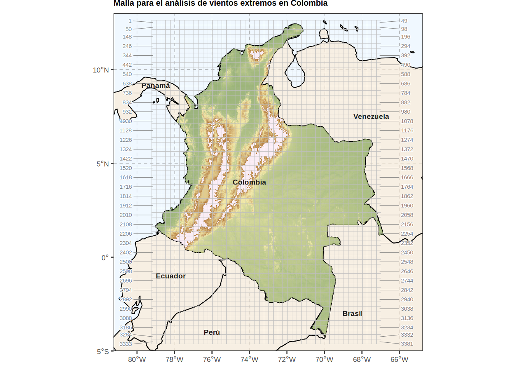
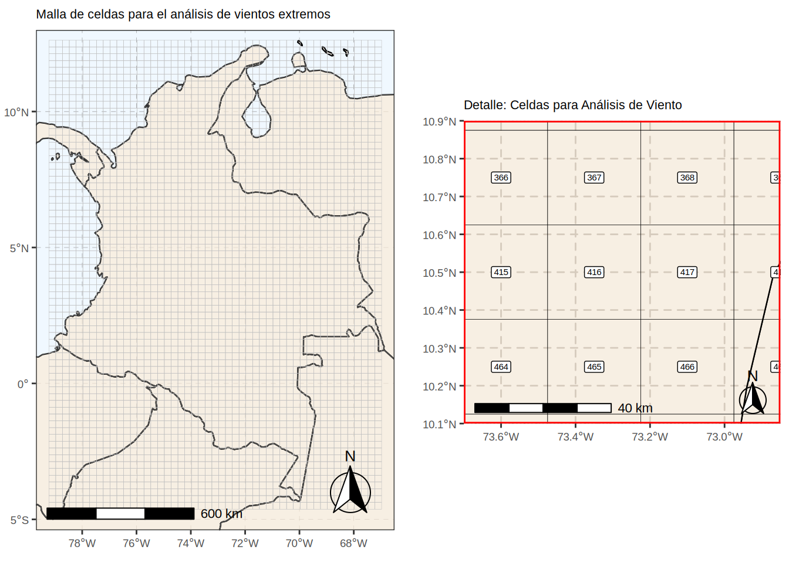
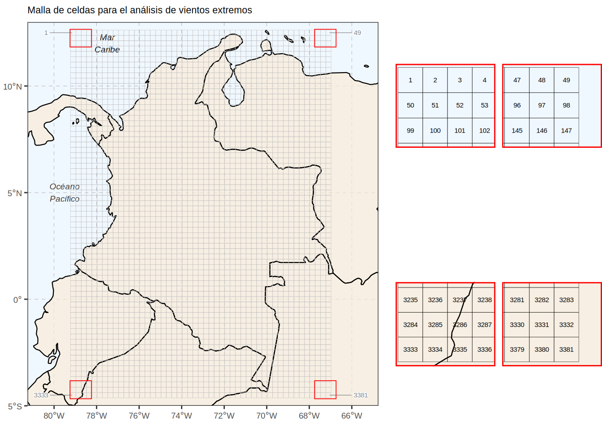
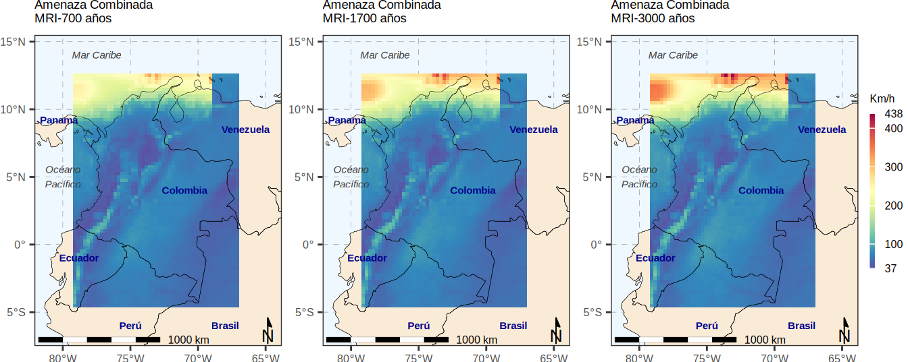

Código
# #| include: false
source("./docs/j_eval_j_plot.r")execute: cache: true
freeze: auto
# #| include: false
source("./docs/j_eval_j_plot.r")En el ámbito de la geomática aplicada y el diseño de infraestructura segura, el modelado espacial de amenazas naturales exige el procesamiento ágil de grandes volúmenes de datos meteorológicos y climáticos. Para ilustrar estos flujos de trabajo en un entorno real, este capítulo utiliza como caso de estudio los datos y resultados derivados de la investigación “Spatio-temporal analysis of extreme wind velocities for infrastructure design” (Rodríguez Avellaneda, 2020), disponible de forma íntegra en geocorp.co/thesis/mastergeotech. A través del análisis del régimen de vientos extremos en Colombia —integrando la amenaza probabilística de huracanes en el Caribe y vientos sinópticos locales—, exploraremos cómo la programación en Sistemas de Información Geográfica (SIG) permite resolver problemas de álgebra de mapas a gran escala.
El objetivo pedagógico central de este texto trasciende el análisis climatológico para centrarse en la arquitectura de datos computacional. Históricamente, el análisis espacial ha mantenido una dicotomía estricta: los datos vectoriales para la gestión de objetos y los rasters para la representación de campos continuos. Sin embargo, los modelos climáticos modernos, como el reanálisis ERA5, poseen una naturaleza multidimensional (longitud, latitud, tiempo, variables atmosféricas y niveles de retorno) que desafía estas estructuras planas.
Para procesar esta complejidad, aprenderemos a dominar el paradigma de los cubos de datos espaciales, focalizándonos en la interoperabilidad profunda entre los paquetes sf (Simple Features) y stars (Spatio-Temporal Arrays). El avance tecnológico clave que exploraremos es la capacidad de combinar vectores y rasters dentro de un mismo cubo. Esto implica que una geometría vectorial (como una malla de polígonos o una red de estaciones) puede ser tratada como una dimensión más de un array, permitiendo que operaciones típicas de imágenes (como el álgebra de mapas o funciones de agregación) se apliquen directamente sobre datos vectoriales masivos de forma estructurada y eficiente.
A lo largo del capítulo, el lector desarrollará un flujo de trabajo que inicia en la ingesta de archivos discretos (NetCDF y GeoTIFF), avanza hacia la transformación de estas mallas en cubos de datos vectoriales, y culmina en la aplicación de programación funcional espacial vectorizada (mediante la familia apply) para fusionar regímenes de amenaza heterogéneos.
Finalmente, dado que el análisis geoespacial está incompleto sin una comunicación visual efectiva, este capítulo dedica un esfuerzo sustancial a las técnicas avanzadas de representación cartográfica. Transformar cubos híbridos en mapas estáticos con rigor de publicación científica supone un desafío técnico notable. Por ello, profundizaremos en estrategias de renderizado vectorial sobre basemaps continuos, manipulación de formatos topológicos (Long/Wide) para el facetado dinámico de escenarios, y la composición algorítmica de layouts multiescalares (mapas de detalle y contexto) empleando la gramática gráfica de ggplot2.
# #| eval: false
# ================================
# DESCARGA Y PREPARACIÓN DE DATOS
# ================================
# Obtener datos vector y raster
# URL de ejemplo donde se encuentran los datos comprimidos
# myurl <- "http://geocorp.co/wind/wind_result.zip"
# Nombre del archivo ZIP que se descargará localmente
# filename <- "wind_result.zip"
# Descarga el archivo desde la URL especificada
# mode = "wb" asegura que el archivo se descargue en modo binario (necesario para archivos ZIP)
# download.file(myurl, filename, mode = "wb")
# Descomprime el archivo ZIP en el directorio de trabajo actual
# unzip(filename)
# Nota:
# - Los archivos raster (.tif) deben ubicarse en la carpeta: ./data_heavy/wind_tif/
# - El shapefile de municipios debe ubicarse en: ./data_heavy/
# ================================
# CARGA DE LIBRERÍAS
# ================================
# stringr: manejo de strings (cadenas de texto)
library(stringr)
# stars: manejo de datos raster multidimensionales
library(stars)Loading required package: abindLoading required package: sfLinking to GEOS 3.12.1, GDAL 3.8.4, PROJ 9.4.0; sf_use_s2() is TRUE# ================================
# DEFINICIÓN DE RUTAS
# ================================
# Ruta base donde están almacenados los datos
# Se usa "./" para indicar el directorio de trabajo actual
the_path = "./data_heavy/"
# ================================
# LECTURA Y ORDENAMIENTO DE RASTERS
# ================================
# Listar los archivos en la carpeta ./data_heavy/wind_tif/
# path: ruta donde buscar los archivos
# pattern: expresión regular para filtrar archivos .tif
rasterfiles <- list.files(path = paste0(the_path, "wind_tif/"), pattern = "*.*.tif$")
# Construye la ruta completa de cada archivo concatenando:
# la ruta base + nombre del archivo
rasterfiles <- paste0(the_path, "wind_tif/", rasterfiles)
# Ordena los archivos según los números en sus nombres (orden numérico real, no alfabético)
# numeric = TRUE permite ordenar correctamente (ej: st22 antes que st23)
rasterfiles <- str_sort(rasterfiles, numeric = TRUE)
# Ejemplo del primer archivo en la lista
#'./data_heavy/wind_tif/st1_cellindexlr.tif'
head(rasterfiles)[1] "./data_heavy/wind_tif/st1_cellindexlr.tif"
[2] "./data_heavy/wind_tif/st2_lonindex.tif"
[3] "./data_heavy/wind_tif/st3_latindex.tif"
[4] "./data_heavy/wind_tif/st4_cellindextb.tif"
[5] "./data_heavy/wind_tif/st5_id.tif"
[6] "./data_heavy/wind_tif/st6_nh_thresh.tif" # Ejemplo del último archivo en la lista
#'./data_heavy/wind_tif/st43_c_7000.tif'
tail(rasterfiles)[1] "./data_heavy/wind_tif/st38_c_500.tif"
[2] "./data_heavy/wind_tif/st39_c_700.tif"
[3] "./data_heavy/wind_tif/st40_c_1000.tif"
[4] "./data_heavy/wind_tif/st41_c_1700.tif"
[5] "./data_heavy/wind_tif/st42_c_3000.tif"
[6] "./data_heavy/wind_tif/st43_c_7000.tif"# ================================
# CREACIÓN DEL OBJETO STARS
# ================================
# Lee múltiples archivos raster (TIF) y los combina en un solo objeto tipo stars
# rasterfiles: vector de rutas a archivos raster
# quiet = TRUE evita imprimir mensajes en consola
h_nh_c.st <- read_stars(rasterfiles, quiet = TRUE)
# Obtiene los nombres de las capas (atributos) del objeto stars
mynames <- names(h_nh_c.st)
# Nota:
# stars elimina automáticamente el prefijo común más largo (LCP: Longest Common Prefix)
# al asignar nombres a las capas
# Ejemplo de nombres resultantes
#'1_cellindexlr.tif'
head(mynames)[1] "1_cellindexlr.tif" "2_lonindex.tif" "3_latindex.tif"
[4] "4_cellindextb.tif" "5_id.tif" "6_nh_thresh.tif" tail(mynames)[1] "38_c_500.tif" "39_c_700.tif" "40_c_1000.tif" "41_c_1700.tif"
[5] "42_c_3000.tif" "43_c_7000.tif"# Imprime el objeto stars (dimensiones y atributos)
h_nh_c.ststars object with 2 dimensions and 43 attributes
attribute(s):
Min. 1st Qu. Median Mean
1_cellindexlr.tif 1.0000000 846.0000000 1691.000000 1691.000000
2_lonindex.tif 1.0000000 13.0000000 25.000000 25.000000
3_latindex.tif 1.0000000 18.0000000 35.000000 35.000000
4_cellindextb.tif 1.0000000 846.0000000 1691.000000 1691.000000
5_id.tif 1.0000000 846.0000000 1691.000000 1691.000000
6_nh_thresh.tif 24.0000000 37.0000000 42.000000 43.958296
7_nh_mu_location.tif 13.6729488 24.5889168 28.071484 30.972949
8_nh_psi_scale.tif 0.8468198 2.4524689 2.949068 3.047828
9_distance_w.tif 0.2110516 0.8411635 1.240552 1.308701
10_station.tif 1.0000000 846.0000000 1691.000000 1691.000000
11_nh_10.tif 30.4555740 47.2962570 54.978470 56.002591
12_nh_20.tif 31.4608154 48.9887123 57.361576 58.115121
13_nh_50.tif 32.7741928 51.4477081 60.473362 60.908016
14_nh_100.tif 33.7783585 53.1698227 62.714901 63.020511
15_nh_250.tif 35.0545502 55.5359039 65.669632 65.812625
16_nh_500.tif 36.0606728 57.3204041 67.832039 67.925328
17_nh_700.tif 36.5523529 58.1628914 68.821609 68.950810
18_nh_1000.tif 36.9211159 59.1135674 69.892418 70.038594
19_nh_1700.tif 37.6162872 60.4877167 71.470055 71.655338
20_nh_3000.tif 38.1215630 61.8974876 73.101006 73.386625
21_nh_7000.tif 38.9009247 63.9797211 75.635643 75.968756
22_h_10.tif 9.6572638 15.6040730 23.249760 30.495052
23_h_20.tif 12.2852173 22.1053762 30.730024 42.995706
24_h_50.tif 16.8873825 27.9596853 44.804596 61.980913
25_h_100.tif 21.4828091 33.5036983 59.566853 76.713141
26_h_250.tif 24.0479527 42.1208897 67.867989 94.924907
27_h_500.tif 26.1531048 50.0924568 75.440773 108.124354
28_h_700.tif 27.2404785 54.7166328 78.704750 114.443373
29_h_1000.tif 28.4425430 59.7133026 82.739159 121.151201
30_h_1700.tif 30.3297253 62.4252758 89.772812 131.282884
31_h_3000.tif 32.4887238 65.1840057 96.707741 142.389694
32_h_7000.tif 35.9983788 69.5336800 109.499702 159.790127
33_c_10.tif 30.5939789 47.3236465 55.100040 56.380376
34_c_20.tif 31.8194408 49.2004547 57.661671 59.361368
35_c_50.tif 33.2647667 51.6685410 60.862976 64.967722
36_c_100.tif 34.5571671 53.6231384 63.266590 70.027001
37_c_250.tif 35.9132996 56.2640419 66.250504 76.763075
38_c_500.tif 37.3732605 58.4406738 68.650299 81.880776
39_c_700.tif 37.8385353 59.5043449 69.676407 84.393742
40_c_1000.tif 38.3028526 60.5562439 70.899162 87.102333
41_c_1700.tif 38.9026604 62.0931511 72.701416 91.229404
42_c_3000.tif 39.5586052 63.7013779 74.680573 95.789807
43_c_7000.tif 40.4327736 66.0068130 77.460434 102.889487
3rd Qu. Max. NA's
1_cellindexlr.tif 2536.000000 3381.000000 0
2_lonindex.tif 37.000000 49.000000 0
3_latindex.tif 52.000000 69.000000 0
4_cellindextb.tif 2536.000000 3381.000000 0
5_id.tif 2536.000000 3381.000000 0
6_nh_thresh.tif 50.000000 78.000000 0
7_nh_mu_location.tif 35.983513 65.212418 0
8_nh_psi_scale.tif 3.626480 6.817193 0
9_distance_w.tif 1.657803 17.072296 0
10_station.tif 2536.000000 3381.000000 0
11_nh_10.tif 62.597267 93.306458 0
12_nh_20.tif 65.058258 97.621140 0
13_nh_50.tif 68.323509 103.318047 0
14_nh_100.tif 70.731575 107.631020 0
15_nh_250.tif 73.793114 113.328415 0
16_nh_500.tif 76.137680 117.640884 0
17_nh_700.tif 77.352562 119.731033 0
18_nh_1000.tif 78.628006 121.938110 0
19_nh_1700.tif 80.400818 125.248100 0
20_nh_3000.tif 82.454575 128.780334 0
21_nh_7000.tif 85.413361 134.038864 0
22_h_10.tif 41.011358 84.595543 2274
23_h_20.tif 62.586636 134.102707 2274
24_h_50.tif 86.103123 188.306503 2274
25_h_100.tif 110.833931 217.234344 2274
26_h_250.tif 150.905594 262.404663 2274
27_h_500.tif 174.924828 302.715546 2274
28_h_700.tif 182.414101 324.460510 2274
29_h_1000.tif 190.395744 349.219025 2274
30_h_1700.tif 202.572205 389.591431 2274
31_h_3000.tif 215.881157 437.991516 2274
32_h_7000.tif 237.644272 478.457611 2274
33_c_10.tif 62.646935 93.667839 0
34_c_20.tif 65.306145 134.172775 0
35_c_50.tif 68.947304 188.414383 0
36_c_100.tif 71.869194 217.443375 0
37_c_250.tif 75.752991 262.645355 0
38_c_500.tif 78.701851 302.826080 0
39_c_700.tif 80.076996 324.564423 0
40_c_1000.tif 81.683189 349.322479 0
41_c_1700.tif 83.956383 389.737061 0
42_c_3000.tif 86.569099 437.992401 0
43_c_7000.tif 90.491371 478.457611 0
dimension(s):
from to offset delta refsys point x/y
x 1 49 -79.1 0.25 WGS 84 FALSE [x]
y 1 69 12.5 -0.25 WGS 84 FALSE [y]# ================================
# LIMPIEZA DE NOMBRES DE VARIABLES
# ================================
# Eliminaremos "1_" al inicio y ".tif" al final en los nombres
# str_locate devuelve la posición de un patrón en cada string
# Aquí buscamos la posición del "_" (guion bajo)
start <- str_locate(mynames, "_")
# Buscamos la posición del "." (inicio de la extensión .tif)
# "\\." se usa porque el punto es un carácter especial en expresiones regulares
stop <- str_locate(mynames, "\\.")
# Extraemos nuevos nombres usando substrings:
# start = posición después del "_" (por eso +1)
# end = posición antes del "." (por eso -1)
mynames <- str_sub(mynames, start = start[, 1] + 1, end = stop[, 1] - 1)
# Ejemplo de nombres transformados
# 'cellindexlr'
head(mynames)[1] "cellindexlr" "lonindex" "latindex" "cellindextb" "id"
[6] "nh_thresh" # 'c_7000'
tail(mynames)[1] "c_500" "c_700" "c_1000" "c_1700" "c_3000" "c_7000"# ================================
# RENOMBRAR ATRIBUTOS
# ================================
# Reemplaza los nombres originales de las capas por los nuevos nombres limpiados
h_nh_c.st <- setNames(h_nh_c.st, mynames)
# Muestra el objeto stars con los nuevos nombres
# Este objeto tiene dimensiones espaciales X, Y (grid raster)
h_nh_c.ststars object with 2 dimensions and 43 attributes
attribute(s):
Min. 1st Qu. Median Mean 3rd Qu.
cellindexlr 1.0000000 846.0000000 1691.000000 1691.000000 2536.000000
lonindex 1.0000000 13.0000000 25.000000 25.000000 37.000000
latindex 1.0000000 18.0000000 35.000000 35.000000 52.000000
cellindextb 1.0000000 846.0000000 1691.000000 1691.000000 2536.000000
id 1.0000000 846.0000000 1691.000000 1691.000000 2536.000000
nh_thresh 24.0000000 37.0000000 42.000000 43.958296 50.000000
nh_mu_location 13.6729488 24.5889168 28.071484 30.972949 35.983513
nh_psi_scale 0.8468198 2.4524689 2.949068 3.047828 3.626480
distance_w 0.2110516 0.8411635 1.240552 1.308701 1.657803
station 1.0000000 846.0000000 1691.000000 1691.000000 2536.000000
nh_10 30.4555740 47.2962570 54.978470 56.002591 62.597267
nh_20 31.4608154 48.9887123 57.361576 58.115121 65.058258
nh_50 32.7741928 51.4477081 60.473362 60.908016 68.323509
nh_100 33.7783585 53.1698227 62.714901 63.020511 70.731575
nh_250 35.0545502 55.5359039 65.669632 65.812625 73.793114
nh_500 36.0606728 57.3204041 67.832039 67.925328 76.137680
nh_700 36.5523529 58.1628914 68.821609 68.950810 77.352562
nh_1000 36.9211159 59.1135674 69.892418 70.038594 78.628006
nh_1700 37.6162872 60.4877167 71.470055 71.655338 80.400818
nh_3000 38.1215630 61.8974876 73.101006 73.386625 82.454575
nh_7000 38.9009247 63.9797211 75.635643 75.968756 85.413361
h_10 9.6572638 15.6040730 23.249760 30.495052 41.011358
h_20 12.2852173 22.1053762 30.730024 42.995706 62.586636
h_50 16.8873825 27.9596853 44.804596 61.980913 86.103123
h_100 21.4828091 33.5036983 59.566853 76.713141 110.833931
h_250 24.0479527 42.1208897 67.867989 94.924907 150.905594
h_500 26.1531048 50.0924568 75.440773 108.124354 174.924828
h_700 27.2404785 54.7166328 78.704750 114.443373 182.414101
h_1000 28.4425430 59.7133026 82.739159 121.151201 190.395744
h_1700 30.3297253 62.4252758 89.772812 131.282884 202.572205
h_3000 32.4887238 65.1840057 96.707741 142.389694 215.881157
h_7000 35.9983788 69.5336800 109.499702 159.790127 237.644272
c_10 30.5939789 47.3236465 55.100040 56.380376 62.646935
c_20 31.8194408 49.2004547 57.661671 59.361368 65.306145
c_50 33.2647667 51.6685410 60.862976 64.967722 68.947304
c_100 34.5571671 53.6231384 63.266590 70.027001 71.869194
c_250 35.9132996 56.2640419 66.250504 76.763075 75.752991
c_500 37.3732605 58.4406738 68.650299 81.880776 78.701851
c_700 37.8385353 59.5043449 69.676407 84.393742 80.076996
c_1000 38.3028526 60.5562439 70.899162 87.102333 81.683189
c_1700 38.9026604 62.0931511 72.701416 91.229404 83.956383
c_3000 39.5586052 63.7013779 74.680573 95.789807 86.569099
c_7000 40.4327736 66.0068130 77.460434 102.889487 90.491371
Max. NA's
cellindexlr 3381.000000 0
lonindex 49.000000 0
latindex 69.000000 0
cellindextb 3381.000000 0
id 3381.000000 0
nh_thresh 78.000000 0
nh_mu_location 65.212418 0
nh_psi_scale 6.817193 0
distance_w 17.072296 0
station 3381.000000 0
nh_10 93.306458 0
nh_20 97.621140 0
nh_50 103.318047 0
nh_100 107.631020 0
nh_250 113.328415 0
nh_500 117.640884 0
nh_700 119.731033 0
nh_1000 121.938110 0
nh_1700 125.248100 0
nh_3000 128.780334 0
nh_7000 134.038864 0
h_10 84.595543 2274
h_20 134.102707 2274
h_50 188.306503 2274
h_100 217.234344 2274
h_250 262.404663 2274
h_500 302.715546 2274
h_700 324.460510 2274
h_1000 349.219025 2274
h_1700 389.591431 2274
h_3000 437.991516 2274
h_7000 478.457611 2274
c_10 93.667839 0
c_20 134.172775 0
c_50 188.414383 0
c_100 217.443375 0
c_250 262.645355 0
c_500 302.826080 0
c_700 324.564423 0
c_1000 349.322479 0
c_1700 389.737061 0
c_3000 437.992401 0
c_7000 478.457611 0
dimension(s):
from to offset delta refsys point x/y
x 1 49 -79.1 0.25 WGS 84 FALSE [x]
y 1 69 12.5 -0.25 WGS 84 FALSE [y]# ================================
# CONVERSIÓN A GEOMETRÍA VECTORIAL
# ================================
# Convierte el objeto raster (grid) a geometrías tipo sf (polígonos)
# st_xy2sfc transforma cada celda raster en un polígono
# Parámetros:
# as_points = FALSE → crea polígonos (celdas), no puntos
# na.rm = TRUE → elimina celdas con valores NA
h_nh_c.stnoxy <- st_xy2sfc(h_nh_c.st, as_points = FALSE, na.rm = TRUE)
# Muestra las primeras geometrías
head(h_nh_c.stnoxy)stars object with 1 dimensions and 6 attributes
attribute(s):
Min. 1st Qu. Median Mean 3rd Qu. Max.
cellindexlr 1 846 1691 1691.0000 2536 3381
lonindex 1 13 25 25.0000 37 49
latindex 1 18 35 35.0000 52 69
cellindextb 1 846 1691 1691.0000 2536 3381
id 1 846 1691 1691.0000 2536 3381
nh_thresh 24 37 42 43.9583 50 78
dimension(s):
from to refsys point
geometry 1 3381 WGS 84 FALSE
values
geometry POLYGON ((-79.1 12.5, -78...,...,POLYGON ((-67.1 -4.5, -66...# Consulta la estructura de dimensiones del objeto
st_dimensions(h_nh_c.stnoxy) from to refsys point
geometry 1 3381 WGS 84 FALSE
values
geometry POLYGON ((-79.1 12.5, -78...,...,POLYGON ((-67.1 -4.5, -66...# ================================
# LECTURA DE DATOS VECTORIALES
# ================================
# Lee el shapefile de municipios de Colombia
# st_read detecta automáticamente todos los archivos asociados (.shp, .dbf, etc.)
mun <- st_read(paste0(the_path, "MUNICIPIOS_WGS84.shp"))Reading layer `MUNICIPIOS_WGS84' from data source
`/home/rstudio/work/01_prog_sig/data_heavy/MUNICIPIOS_WGS84.shp'
using driver `ESRI Shapefile'
Simple feature collection with 1126 features and 3 fields
Geometry type: POLYGON
Dimension: XY
Bounding box: xmin: -79.0369 ymin: -4.228051 xmax: -66.84933 ymax: 12.45824
Geodetic CRS: WGS 84# ================================
# VISUALIZACIÓN
# ================================
# Plotear un atributo específico del cubo multidimensional vectorial
# "c_700" es una de las variables del objeto stars
# reset = FALSE → permite superponer múltiples gráficos
# border = NA → elimina bordes de los polígonos (visual más limpio)
# plot(h_nh_c.stnoxy["c_700"], reset = FALSE, border = NA)
# Usamos una paleta más brillante (col) como 'plasma' o 'viridis'
plot(h_nh_c.stnoxy["c_700"], reset = FALSE, border = NA, col = viridis::plasma(100))
# Agrega la geometría de los municipios sobre el gráfico anterior
# add = TRUE → superpone en el mismo plot
# plot(st_geometry(mun), add = TRUE)
# Cambiamos el borde de los municipios a blanco o gris muy claro
# y reducimos el grosor (lwd) al mínimo.
plot(st_geometry(mun), add = TRUE, border = "white", lwd = 0.1)
En esta etapa, hemos transformado archivos planos en una estructura multidimensional. La siguiente tabla desglosa las funciones clave empleadas en el flujo de trabajo:
| Función / Operador | Librería | Propósito en el flujo SIG | Parámetro Crítico |
|---|---|---|---|
list.files() |
base |
Lista los archivos en disco que cumplen un patrón. | pattern = "*.*.tif$" |
str_sort() |
stringr |
Ordena los nombres de archivo bajo lógica numérica. | numeric = TRUE |
read_stars() |
stars |
Ingiere múltiples rasters y los apila en un cubo. | quiet = TRUE |
str_sub() |
stringr |
Limpia los nombres de los atributos/bandas. | start / end |
setNames() |
stats |
Renombra las variables del cubo para legibilidad. | object, nm |
st_xy2sfc() |
stars |
Punto de inflexión: Convierte la malla raster en polígonos. | as_points = FALSE |
st_read() |
sf |
Carga cartografía base vectorial (Shapefiles). | dsn (ruta al .shp) |
plot() |
base/stars |
Genera visualizaciones por capas superpuestas. | reset = FALSE / add = TRUE |
Nota del Autor: Observe que al usar
read_stars(), la librería intenta ser inteligente y elimina el prefijo común más largo (LCP) de los nombres de archivos. Por ello, requerimos de las funciones destringrpara garantizar que los nombres de las variables (comoc_700) queden perfectamente normalizados para el análisis posterior.
En el análisis de riesgo y resiliencia de infraestructura, así como en la normativa de diseño de infraestructura, las curvas de amenaza suelen representar la relación entre una intensidad de evento, en nuestro caso, la velocidad del viento o nivel de retorno (return level - rl) y su probabilidad de excedencia o periodo de retorno (return period). En (Rodríguez Avellaneda, 2020) se usó ERA5 para estimar la curva de amenaza relacionada con vientos extremos no huracanados (nh) en Colombia. Otro estudio empleó simulaciones sintéticas de huracanes para estimar la curva de amenaza relacionada con vientos extremos huracanados (h).
En el análisis de amenazas naturales, como los vientos extremos por huracanes o eventos sinópticos, el Periodo de Retorno (\(T\)) (Nota: en el documento de tesis se usa N) es un concepto fundamental para cuantificar el riesgo. Para comprenderlo de manera intuitiva, podemos recurrir al ejemplo de una persona de 50 años de edad.
Supongamos que, a lo largo de su vida, esta persona ha experimentado una única vez una ráfaga de viento de magnitud excepcional. Desde la perspectiva de su experiencia acumulada de 50 años, la probabilidad de haber igualado o excedido ese viento específico es de uno (\(50/50\)), lo que representa una certeza empírica en ese lapso de tiempo.
Sin embargo, para el diseño de infraestructura y la gestión del riesgo, lo que interesa es determinar la Probabilidad Anual de Excedencia (\(P_a\)), es decir, qué tan probable es que dicho evento ocurra en cualquier año individual. Si distribuimos esa probabilidad acumulada en los 50 años de vida, obtenemos que la probabilidad de exceder o igualar ese viento en un año cualquiera es de:
\[P_a = \frac{1}{50} = 0.02 \text{ (un } 2\%) \]
Bajo esta lógica, el Periodo de Retorno se define como el inverso de esta probabilidad anual (\(T = 1/P_a\)). Si habláramos de un evento con un Periodo de Retorno de 25 años, la probabilidad de excedencia acumulada en los mismos 50 años de vida sería de \(2\) (\(50/25\)), lo que sugiere que estadísticamente se esperaría haber vivido dicho evento dos veces.
Un error común es asumir que un viento con un periodo de retorno de 50 años ocurrirá con total seguridad cada 50 años. Para corregir esto, la geomática y la ingeniería estructural utilizan el concepto de Riesgo o Probabilidad de Excedencia (\(P\)) durante la vida útil (\(n\)) de una obra o proyecto.
La probabilidad de que un evento con un periodo de retorno \(T\) sea igualado o excedido al menos una vez durante un periodo de \(n\) años consecutivos se calcula mediante la siguiente expresión:
\[P = 1 - \left( 1 - \frac{1}{T} \right)^n\]
Donde:
Si aplicamos esta fórmula al caso de nuestra persona (o una estructura con 50 años de vida útil) frente a un viento con un periodo de retorno de \(T = 50\) años:
\[P = 1 - \left( 1 - \frac{1}{50} \right)^{50} = 1 - (0.98)^{50} \approx 0.636\]
Esto revela una realidad técnica fundamental: existe un \(63.6\%\) de probabilidad de que el viento de diseño sea alcanzado o superado durante los 50 años de vida útil de la estructura. Este valor explica por qué para infraestructuras críticas (puentes, hospitales o centrales eléctricas), los estándares nacionales e internacionales exigen periodos de retorno mucho más elevados, como los escenarios de 700, 1700 o 3000 años analizados en esta investigación.
Al aumentar el periodo de retorno (\(T\)) a 700 años para una estructura que se planea usar durante 50 años (\(n=50\)), el riesgo de excedencia se reduce drásticamente a aproximadamente un \(6.9\%\), garantizando un margen de seguridad superior frente a la variabilidad climática y los eventos extremos del Caribe colombiano.
En esta sección se llevará a cabo la integración probabilística o combinación (c) de las amenazas por vientos extremos huracanados (h) y no huracanados (h). Para lograr este objetivo, se realizarán múltiples transformaciones y uniones geométricas, transitando entre formatos vectoriales, raster y tabulares planos.
A continuación, se presenta un inventario estructurado del flujo de trabajo de todos los objetos en memoria que se generarán para el cálculo dimensional y la representación espacial, detallando su clase y características estructurales fundamentales.
| Categoría | Objeto | Clase | Origen | Características y dimensiones |
|---|---|---|---|---|
| Cartografía Base | world |
sf | Paquete rnaturalearth |
Geometría global de referencia para los mapas de contexto regional. |
| Cartografía Base | col_4326_sf_pol |
sf | Archivo COLOMBIA.shp |
Polígono nacional de alta resolución utilizado para enmascaramiento espacial (masking). |
| Cartografía Base | relieve / relieve_rgb |
stars | Archivo col2.tif |
Raster topográfico de fondo. Se procesa a valores RGB para visualizaciones multiescalares. |
| Iniciales | st1 |
stars | Archivo .nc (ERA5) |
Dimensión espacial: x, y. Atributo cellindexlr creado a partir de los valores de x, y. |
| Iniciales | sf1 |
sf | Creado a partir de st1 |
Geometría de polígonos base (Malla espacial). |
| No Huracanes | nhrl |
data.frame | Archivo Excel | Estructura tabular con información sinóptica original. |
| No Huracanes | sf_nh |
sf | Unión de sf1 y nhrl |
Geometría de polígonos enriquecida espacialmente mediante left_join. |
| No Huracanes | st_nh |
stars | Creado a partir de sf_nh |
Dimensión espacial convertida a: geometry. |
| Huracanes | st_h |
stars | Archivos .tif |
Cubo multidimensional. Dimensión espacial original: x, y. |
| Huracanes | sf_h |
sf | Creado a partir de st_h |
Geometría de polígonos. |
| Huracanes | st_h.stnoxy |
stars | Creado a partir de st_h |
Dimensión espacial reestructurada a: geometry. |
| Combinado | df_nh_h |
data.frame | Unión de sf_nh y sf_h |
Contiene las columnas para la combinación (se inicializan con NA y se actualizan al final). |
| Combinado | sf_nh_h_c |
sf | Creado a partir de df_nh_h |
Geometría de polígonos con columnas combinadas vacías (para mantener topología). |
| Combinado | st_nh_h_c |
stars | Creado a partir de sf_nh_h_c |
Base para st_apply. Atributos H: 13:23. Atributos NH: 2:12. Columnas C vacías. |
| Combinado | st_nh_h_c_merged |
stars | Creado a partir de st_nh_h_c |
Todos los atributos colapsan en una dimensión única denominada "attributes". |
| Combinado | combined_st |
stars | Resultado de st_apply |
Atributo consolidado renombrado a "rafaga_viento". Dimensión temporal/mri renombrada a "c_mri". Orden ajustado usando aperm. |
| Extracción | combined_st_700 |
stars | slice(combined_st) |
Cubo filtrado dinámicamente aislando la “rebanada” (slice) correspondiente a 700 años. |
| Extracción | sf_combined |
sf | Creado a partir de combined_st |
Objeto en formato LARGO (long=TRUE). Contiene: "c_mri", "rafaga_viento" y "geometry". Ideal para facets. |
| Extracción | sf_combined_wide |
sf | Creado a partir de combined_st |
Objeto en formato ANCHO (long=FALSE). Contiene columnas independientes de "c_10" a "c_7000". |
| Extracción | combined_st_attrs |
stars | Creado de sf_combined_wide |
Dimensión espacial: geometry. Atributos paralelos desde "c_10" hasta "c_7000". |
| Extracción | sf_c_700 |
sf | Extracción individual | Objeto derivado de aislar un único atributo de combined_st_attrs. |
| Retroalimentación | datos_calculados |
data.frame | st_drop_geometry() |
Matriz numérica pura. Extraída para inyectar resultados eficientemente en df_nh_h y sf_nh_h_c sin sobrecarga espacial. |
Se usó la fuente de datos ERA5, variable fg10 para calcular los vientos extremos relacionados con viento no huracanado (nh). A continuación se desplegará la malla/grilla correspondiente a este dataset para verificar su configuración espacial a lo largo y ancho del territorio colombiano, incluyendo parte de la extensión marítima del país.
En el siguiente código, se crean los objetos st1 y sf1 a partir de un archivo NetCDF que contiene la malla proveniente de ERA5.
# #| eval: false
# ================================
# DESCARGA Y PREPARACIÓN DE DATOS
# ================================
# Obtener datos vector y raster
# URL del archivo comprimido que contiene las curvas de amenaza
# myurl = "http://geocorp.co/wind/hazard_curves.zip"
# Nombre del archivo ZIP que se descargará localmente
# filename = "hazard_curves.zip"
# Descarga el archivo desde internet
# mode = "wb" (write binary) es necesario para archivos comprimidos
# download.file(myurl, filename, mode = "wb")
# Descomprime el archivo en el directorio de trabajo
# unzip(filename)
# Nota: Carpeta de descarga:
# ./data_heavy/hazard_curves/
# En esta carpeta debe quedar el archivo NetCDF (.nc)
# ================================
# CARGA DE LIBRERÍAS
# ================================
# stars: manejo de datos raster multidimensionales (incluye NetCDF)
library(stars)
# sf: manejo de datos espaciales vectoriales (features)
library(sf)
# stringr: manipulación de cadenas de texto
library(stringr)
# dplyr: manipulación de datos (filtrar, seleccionar, mutar, etc.)
library(dplyr)
Attaching package: 'dplyr'The following objects are masked from 'package:stats':
filter, lagThe following objects are masked from 'package:base':
intersect, setdiff, setequal, union# ggplot2: visualización de datos
library(ggplot2)
# ================================
# DEFINICIÓN DE RUTA
# ================================
# Ruta donde se encuentra el archivo NetCDF
path = "./data_heavy/hazard_curves/"
# ================================
# DEFINICIÓN DEL ARCHIVO NetCDF
# ================================
# Nombre base del archivo (sin extensión)
# 10fg_jan1_2017.nc: variable 10fg de ERA5
# 10fg: "10 metre wind gust since previous post-processing"
# Es decir: ráfaga máxima de viento a 10 metros de altura
# Fuente de variables ERA5:
# https://ecmwf-models.readthedocs.io/en/latest/variables_era5.html
ncname <- "10fg_jan1_2017"
# Construcción de la ruta completa al archivo:
# paste0 concatena strings sin separador
# ncfile = paste0(path, ncname, ".nc")
ncfile = paste(path, ncname, ".nc", sep = "")
# ================================
# LECTURA DEL ARCHIVO NetCDF
# ================================
# Leemos el archivo NetCDF como objeto stars
# Este tipo de archivo suele contener datos multidimensionales
# (ej: x, y, tiempo, variables)
st1 = read_stars(ncfile)
# El objeto contiene:
# - Un atributo: valores de velocidad del viento (en m/s)
# - Dimensiones: x (longitud), y (latitud), time (tiempo)
# ================================
# SISTEMA DE COORDENADAS
# ================================
# Verificar sistema de coordenadas del objeto
# st_crs devuelve el sistema de referencia espacial (CRS)
print(paste0("st1: ", st_crs(st1)))[1] "st1: NA" "st1: NA"# Asignar sistema de coordenadas si no está definido correctamente
# 4326 corresponde a WGS84 (latitud/longitud en grados)
# st_crs(st1) <- 4326
# Recomendado:
st1 <- st_set_crs(st1, 4326)
# Nota: Este dataset solo tiene un valor en la dimensión temporal
# (un instante específico: 1 de enero de 2017)
st1stars object with 3 dimensions and 1 attribute
attribute(s):
Min. 1st Qu. Median Mean 3rd Qu. Max.
10fg_jan1_2017.nc [m/s] 0.6118781 2.611887 3.524523 4.758072 5.092288 18.33795
dimension(s):
from to offset delta refsys x/y
x 1 49 -79.22 0.25 WGS 84 [x]
y 1 69 12.62 -0.25 WGS 84 [y]
time 1 1 1025616 [hours since 1900-01-01 00:00:00.0] NA udunits # ================================
# EXTRACCIÓN DE DIMENSIONES
# ================================
# Leemos los valores de X (longitud)
# st_get_dimension_values extrae los valores de una dimensión específica
lon <- st_get_dimension_values(st1, "x")
# Leemos los valores de Y (latitud)
lat <- st_get_dimension_values(st1, "y")
# Visualizar algunos valores
head(lon)[1] -79.10 -78.85 -78.60 -78.35 -78.10 -77.85head(lat)[1] 12.50 12.25 12.00 11.75 11.50 11.25# Conteo de la cantidad de coordenadas en cada dimensión
# length cuenta cuántos valores hay en cada vector
nlon <- length(lon)
nlon[1] 49nlat <- length(lat)
nlat[1] 69# ================================
# CREACIÓN DE IDENTIFICADOR DE CELDAS
# ================================
# Agregamos un atributo al objeto stars
# con el id (cellindexlr) de las celdas:
# La numeración sigue este patrón:
# - Empieza en la esquina superior izquierda
# - Avanza hacia la derecha
# - Luego baja fila por fila (tipo raster scan)
# Opción 1: Coerción explícita
# Convierte la secuencia a entero
# st1$cellindexlr <- as.integer(1:(nlon * nlat))
# Opción 2: Definición nativa como entero (más eficiente)
# seq(1L, ...) crea directamente enteros (L indica tipo integer)
# nlon * nlat = número total de celdas espaciales
# stars distribuye automáticamente este vector
# sobre las dimensiones espaciales (x, y)
st1$cellindexlr <- seq(1L, as.integer(nlon * nlat))
# Visualizar el objeto con el nuevo atributo
st1stars object with 3 dimensions and 2 attributes
attribute(s):
Min. 1st Qu. Median Mean
10fg_jan1_2017.nc [m/s] 0.6118781 2.611887 3.524523 4.758072
cellindexlr 1.0000000 846.000000 1691.000000 1691.000000
3rd Qu. Max.
10fg_jan1_2017.nc [m/s] 5.092288 18.33795
cellindexlr 2536.000000 3381.00000
dimension(s):
from to offset delta refsys x/y
x 1 49 -79.22 0.25 WGS 84 [x]
y 1 69 12.62 -0.25 WGS 84 [y]
time 1 1 1025616 [hours since 1900-01-01 00:00:00.0] NA udunits # Aunque se imprime como decimal, internamente es entero
head(st1$cellindexlr, 2), , 1
[,1] [,2] [,3] [,4] [,5] [,6] [,7] [,8] [,9] [,10] [,11] [,12] [,13] [,14]
[1,] 1 50 99 148 197 246 295 344 393 442 491 540 589 638
[2,] 2 51 100 149 198 247 296 345 394 443 492 541 590 639
[,15] [,16] [,17] [,18] [,19] [,20] [,21] [,22] [,23] [,24] [,25] [,26]
[1,] 687 736 785 834 883 932 981 1030 1079 1128 1177 1226
[2,] 688 737 786 835 884 933 982 1031 1080 1129 1178 1227
[,27] [,28] [,29] [,30] [,31] [,32] [,33] [,34] [,35] [,36] [,37] [,38]
[1,] 1275 1324 1373 1422 1471 1520 1569 1618 1667 1716 1765 1814
[2,] 1276 1325 1374 1423 1472 1521 1570 1619 1668 1717 1766 1815
[,39] [,40] [,41] [,42] [,43] [,44] [,45] [,46] [,47] [,48] [,49] [,50]
[1,] 1863 1912 1961 2010 2059 2108 2157 2206 2255 2304 2353 2402
[2,] 1864 1913 1962 2011 2060 2109 2158 2207 2256 2305 2354 2403
[,51] [,52] [,53] [,54] [,55] [,56] [,57] [,58] [,59] [,60] [,61] [,62]
[1,] 2451 2500 2549 2598 2647 2696 2745 2794 2843 2892 2941 2990
[2,] 2452 2501 2550 2599 2648 2697 2746 2795 2844 2893 2942 2991
[,63] [,64] [,65] [,66] [,67] [,68] [,69]
[1,] 3039 3088 3137 3186 3235 3284 3333
[2,] 3040 3089 3138 3187 3236 3285 3334tail(st1$cellindexlr, 2), , 1
[,1] [,2] [,3] [,4] [,5] [,6] [,7] [,8] [,9] [,10] [,11] [,12] [,13]
[48,] 48 97 146 195 244 293 342 391 440 489 538 587 636
[49,] 49 98 147 196 245 294 343 392 441 490 539 588 637
[,14] [,15] [,16] [,17] [,18] [,19] [,20] [,21] [,22] [,23] [,24] [,25]
[48,] 685 734 783 832 881 930 979 1028 1077 1126 1175 1224
[49,] 686 735 784 833 882 931 980 1029 1078 1127 1176 1225
[,26] [,27] [,28] [,29] [,30] [,31] [,32] [,33] [,34] [,35] [,36] [,37]
[48,] 1273 1322 1371 1420 1469 1518 1567 1616 1665 1714 1763 1812
[49,] 1274 1323 1372 1421 1470 1519 1568 1617 1666 1715 1764 1813
[,38] [,39] [,40] [,41] [,42] [,43] [,44] [,45] [,46] [,47] [,48] [,49]
[48,] 1861 1910 1959 2008 2057 2106 2155 2204 2253 2302 2351 2400
[49,] 1862 1911 1960 2009 2058 2107 2156 2205 2254 2303 2352 2401
[,50] [,51] [,52] [,53] [,54] [,55] [,56] [,57] [,58] [,59] [,60] [,61]
[48,] 2449 2498 2547 2596 2645 2694 2743 2792 2841 2890 2939 2988
[49,] 2450 2499 2548 2597 2646 2695 2744 2793 2842 2891 2940 2989
[,62] [,63] [,64] [,65] [,66] [,67] [,68] [,69]
[48,] 3037 3086 3135 3184 3233 3282 3331 3380
[49,] 3038 3087 3136 3185 3234 3283 3332 3381# ================================
# CONVERSIÓN A OBJETO SF
# ================================
# Convierte el objeto stars (raster/grid)
# a un objeto sf (vectorial)
# Cada celda se convierte en una geometría (polígono o punto)
sf1 = st_as_sf(st1)
# ================================
# RENOMBRAR ATRIBUTOS
# ================================
# Cambiamos los nombres de las columnas:
# 1. Variable meteorológica
# 2. ID de celda
# 3. Geometría espacial
names(sf1) = c("fg10_2017-01-01", "cellindexlr", "geometry")
# Visualizar estructura completa
sf1Simple feature collection with 3381 features and 2 fields
Geometry type: POLYGON
Dimension: XY
Bounding box: xmin: -79.225 ymin: -4.625 xmax: -66.975 ymax: 12.625
Geodetic CRS: WGS 84
First 10 features:
fg10_2017-01-01 cellindexlr geometry
1 13.87161 [m/s] 1 POLYGON ((-79.225 12.625, -...
2 14.18213 [m/s] 2 POLYGON ((-78.975 12.625, -...
3 14.64765 [m/s] 3 POLYGON ((-78.725 12.625, -...
4 14.91706 [m/s] 4 POLYGON ((-78.475 12.625, -...
5 15.00929 [m/s] 5 POLYGON ((-78.225 12.625, -...
6 14.94492 [m/s] 6 POLYGON ((-77.975 12.625, -...
7 14.75530 [m/s] 7 POLYGON ((-77.725 12.625, -...
8 14.63520 [m/s] 8 POLYGON ((-77.475 12.625, -...
9 14.63926 [m/s] 9 POLYGON ((-77.225 12.625, -...
10 14.79831 [m/s] 10 POLYGON ((-76.975 12.625, -...# Ver primeras filas
head(sf1, 1)Simple feature collection with 1 feature and 2 fields
Geometry type: POLYGON
Dimension: XY
Bounding box: xmin: -79.225 ymin: 12.375 xmax: -78.975 ymax: 12.625
Geodetic CRS: WGS 84
fg10_2017-01-01 cellindexlr geometry
1 13.87161 [m/s] 1 POLYGON ((-79.225 12.625, -...# Ver últimas filas
tail(sf1, 1)Simple feature collection with 1 feature and 2 fields
Geometry type: POLYGON
Dimension: XY
Bounding box: xmin: -67.225 ymin: -4.625 xmax: -66.975 ymax: -4.375
Geodetic CRS: WGS 84
fg10_2017-01-01 cellindexlr geometry
3381 2.748215 [m/s] 3381 POLYGON ((-67.225 -4.375, -...En este bloque, el lector aprende a interpretar la estructura de un archivo multidimensional y a transformarlo en una entidad vectorial indexada.
| Función / Operador | Librería | Propósito en el flujo SIG | Parámetro Crítico |
|---|---|---|---|
read_stars() |
stars |
Ingiere archivos NetCDF (.nc) conservando dimensiones espaciales y temporales. |
ncfile (Ruta al archivo) |
st_set_crs() |
sf/stars |
Asigna un Sistema de Referencia de Coordenadas (CRS) cuando el archivo no lo trae definido. | 4326 (WGS84) |
st_get_dimension_values() |
stars |
Extrae los valores numéricos de los ejes (ej: todas las longitudes o latitudes). | "x" o "y" |
seq(1L, ...) |
base |
Crea una secuencia de números enteros (L) para identificar cada celda de la malla. | 1L (Indica tipo Integer) |
st_as_sf() |
sf/stars |
La gran transformación: Convierte el objeto de malla multidimensional a un objeto vectorial de polígonos. | stars_object |
names() |
base |
Renombra las columnas del objeto vectorial para estandarizar los atributos. | c("attr1", "attr2", ...) |
Nota del Autor: Es fundamental que el estudiante note el uso de
1Lal crear elcellindexlr. En programación SIG a gran escala, usar tipos de datos Integer en lugar de Numeric (decimales) para los índices no solo ahorra memoria, sino que evita errores de precisión al realizar uniones relacionales (joins) entre millones de registros.
# #| eval: false
# Definición de la función principal
# data_base: objeto espacial (tipo sf) que contiene la malla base (ERA5 u otra)
# path_raster: ruta al archivo raster (relieve/hillshade) que se usará como fondo visual
# sf_poligono: objeto sf opcional para recorte espacial (si es NULL, se usa Colombia)
graficar_malla_rgb <- function(data_base, path_raster = "./data_heavy/col2.tif", sf_poligono = NULL) {
# Verificación defensiva del sistema de referencia de coordenadas (CRS)
# Es obligatorio que el objeto tenga un CRS definido para evitar errores espaciales
if (!is.na(st_crs(data_base))) {
# -------------------------------------------------------------------------
# 2. Preparación de geometrías vectoriales (malla de datos ERA5)
# -------------------------------------------------------------------------
# Convierte la geometría del objeto sf a otro sf
# conteniendo solo la geometría (permite manipular atributos fácilmente)
grid_sf <- st_as_sf(st_geometry(data_base))
# Crea un identificador único (DN = Digital Number) para cada celda de la malla
# DN es equivalente a cellindexlr
grid_sf$DN <- 1:nrow(grid_sf)
# Calcula los centroides de cada celda (punto central de cada polígono)
# suppressWarnings evita mensajes por geometrías potencialmente complejas
# o geometrías en coordenadas geográficas
coords_grid <- suppressWarnings(st_coordinates(st_centroid(grid_sf)))
# Extrae coordenadas X (longitud)
grid_sf$coord_x <- coords_grid[, 1]
# Extrae coordenadas Y (latitud)
grid_sf$coord_y <- coords_grid[, 2]
# -------------------------------------------------------------------------
# Definición de índices para etiquetado lateral (optimización visual)
# -------------------------------------------------------------------------
# Índices para la primera columna (lado izquierdo de la malla)
# - 1: primera celda
# - seq(...): genera una secuencia cada 98 celdas
# - 3333: última celda relevante del borde
idx_col1 <- unique(c(1, seq(from = 50, to = 3333, by = 98), 3333))
# Índices para la última columna (lado derecho)
# Incluye explícitamente el último índice (3381) para cerrar la grilla
idx_col49 <- unique(c(49, 98, seq(from = 196, to = 3332, by = 98), 3381))
# Filtra las celdas correspondientes a cada lado
grid_col1 <- grid_sf[grid_sf$DN %in% idx_col1, ]
grid_col49 <- grid_sf[grid_sf$DN %in% idx_col49, ]
# -------------------------------------------------------------------------
# 3. Datos auxiliares (mapa base y etiquetas)
# -------------------------------------------------------------------------
# Descarga mapa mundial simplificado (escala media)
world <- rnaturalearth::ne_countries(scale = "medium", returnclass = "sf")
# Filtra únicamente Colombia
colombia <- world[world$name %in% c("Colombia"), ]
# Data frame manual con etiquetas de países vecinos
df_etiquetas_paises <- data.frame(
name = c("Colombia", "Panamá", "Venezuela", "Ecuador", "Perú", "Brasil"),
lon = c(-74.0, -79, -67.5, -78.2, -76.0, -68.5), # Longitud
lat = c(4.0, 9.15, 7.5, -1.0, -4.0, -3.0) # Latitud
)
# -------------------------------------------------------------------------
# 4. Procesamiento del raster de relieve
# -------------------------------------------------------------------------
# Lee el raster desde disco como objeto stars
relieve <- read_stars(path_raster)
# Se fuerza el uso del polígono de Colombia para recorte (sobrescribe sf_poligono)
sf_poligono <- colombia
# Si hay polígono, recorta raster a ese límite
# Si no, recorta usando bounding box de data_base
relieve_plot <- if (!is.null(sf_poligono)) relieve[sf_poligono] else st_crop(relieve, st_bbox(data_base))
# Convierte raster a RGB (colores hexadecimales)
# maxColorValue = 255 → escala estándar de 8 bits por canal (0–255)
relieve_rgb <- st_rgb(relieve_plot, maxColorValue = 255)
# -------------------------------------------------------------------------
# 5. Construcción del gráfico (ggplot2)
# -------------------------------------------------------------------------
p <- ggplot() +
# ---------------------------------------------------------------------
# Capa base del mundo
# ---------------------------------------------------------------------
geom_sf(
data = world, # objeto espacial a graficar
fill = "antiquewhite", # color de relleno (tierra)
colour = "black", # color de borde
alpha = 0.7, # transparencia (0 = invisible, 1 = sólido)
linewidth = 0.4 # grosor de línea del borde
) +
# ---------------------------------------------------------------------
# Capa raster (relieve)
# ---------------------------------------------------------------------
geom_stars(
data = relieve_rgb, # raster en formato RGB
alpha = 0.8, # transparencia (permite ver capas debajo)
na.rm = TRUE # elimina valores NA (evita warnings)
) +
# scale_fill_identity → usa colores tal cual vienen (sin escala automática)
scale_fill_identity() +
# ---------------------------------------------------------------------
# Capa de grilla (malla)
# ---------------------------------------------------------------------
geom_sf(
data = grid_sf, # malla completa
colour = "grey", # color de líneas
fill = NA, # sin relleno (solo contorno)
linewidth = 0.1 # líneas muy delgadas (evita saturación visual)
) +
# ---------------------------------------------------------------------
# Etiquetas de países
# ---------------------------------------------------------------------
geom_text(
data = df_etiquetas_paises,
aes(
x = lon, # coordenada X (longitud)
y = lat, # coordenada Y (latitud)
label = name # texto a mostrar
),
colour = "grey10", # color del texto
fontface = "bold", # negrita
size = 2.5 # tamaño del texto
) +
# ---------------------------------------------------------------------
# Etiquetas lado izquierdo (ggrepel evita superposición)
# ---------------------------------------------------------------------
ggrepel::geom_text_repel(
data = grid_col1,
aes(
x = coord_x, # posición X
y = coord_y, # posición Y
label = DN # número de celda
),
size = 2, # tamaño del texto
direction = "y", # solo mueve etiquetas verticalmente
segment.size = 0.2, # grosor de línea que conecta etiqueta con punto
segment.color = "grey50", # color de esa línea
color = "grey50", # color del texto
bg.color = "white", # fondo del texto (halo)
bg.r = 0.15, # radio del halo
nudge_x = -1.2, # desplazamiento horizontal manual (izquierda)
hjust = 1, # alineación horizontal (1 = derecha)
box.padding = 0.1 # espacio alrededor del texto
) +
# ---------------------------------------------------------------------
# Etiquetas lado derecho
# ---------------------------------------------------------------------
ggrepel::geom_text_repel(
data = grid_col49,
aes(
x = coord_x,
y = coord_y,
label = DN
),
size = 2,
direction = "y",
segment.size = 0.2,
segment.color = "grey50",
color = "grey50",
bg.color = "white",
bg.r = 0.15,
nudge_x = 1.2, # desplazamiento a la derecha
hjust = 0, # alineación a la izquierda
box.padding = 0.1
) +
# ---------------------------------------------------------------------
# Sistema de coordenadas
# ---------------------------------------------------------------------
coord_sf(
xlim = c(-81.25, -64.75), # límites en longitud
ylim = c(-5, 13), # límites en latitud
expand = FALSE # sin expansión automática (sin márgenes extra)
) +
# Título del gráfico
labs(title = "Malla para el análisis de vientos extremos en Colombia") +
# Tema base (fondo blanco)
theme_bw() +
# Personalización fina del tema
theme(
panel.background = element_rect(fill = "aliceblue"), # color del océano
plot.margin = unit(c(0, 0, 0, 0), "cm"), # márgenes externos
# Texto eje X
axis.text.x = element_text(
size = 7,
margin = margin(t = 2, b = -10) # ajuste fino de posición
),
# Texto eje Y
axis.text.y = element_text(
size = 7,
margin = margin(r = 2, l = -10)
),
plot.title = element_text(
size = 8,
face = "bold" # negrita
),
# Grilla principal (líneas de coordenadas)
panel.grid.major = element_line(
color = gray(.5), # gris medio
linetype = "dashed", # línea discontinua
linewidth = 0.1 # muy delgada
)
) +
# Quita etiquetas de ejes
xlab("") +
ylab("")
# Devuelve el objeto gráfico
return(p)
} else {
# Mensaje de error si no hay CRS
return("El objeto data_base debe tener sistema de coordenadas asignado!")
}
}# #| eval: false
# ================================
# CARGA DE LIBRERÍAS
# ================================
# sf: librería para manejo de datos espaciales vectoriales
# Permite leer shapefiles, transformar coordenadas y trabajar con geometrías
library(sf)
# ================================
# LECTURA DEL SHAPEFILE
# ================================
# Ruta al shapefile del contorno de Colombia
# Un shapefile está compuesto por varios archivos (.shp, .dbf, .shx, etc.)
file_col_sf_pol = "./data_heavy/COLOMBIA.shp"
# Lectura del shapefile como objeto sf
# st_read():
# - Detecta automáticamente los archivos asociados
# - Retorna un objeto con geometría (polígonos) y atributos
col_4326_sf_pol = st_read(file_col_sf_pol)Reading layer `COLOMBIA' from data source
`/home/rstudio/work/01_prog_sig/data_heavy/COLOMBIA.shp' using driver `ESRI Shapefile'
Simple feature collection with 33 features and 8 fields
Geometry type: MULTIPOLYGON
Dimension: XY
Bounding box: xmin: -81.73562 ymin: -4.229406 xmax: -66.84722 ymax: 13.39473
Geodetic CRS: WGS 84# Nota:
# El nombre "4326" sugiere que el shapefile está en coordenadas geográficas WGS84
# (EPSG:4326 → latitud/longitud en grados)
# ================================
# GENERACIÓN DEL MAPA
# ================================
# Se llama a la función graficar_malla_rgb(), definida previamente
# Esta función construye un mapa combinando:
# - Una grilla espacial (data_base)
# - Un raster RGB (relieve o imagen base)
# - Un polígono de recorte (opcional)
p_mapa2 <- graficar_malla_rgb(
# data_base:
# Objeto sf con la malla (grilla) a visualizar
# En este caso, proviene del objeto sf1 creado anteriormente
# (derivado de datos ERA5 o raster convertido a vector)
data_base = sf1,
# path_raster:
# Ruta al archivo raster (imagen base)
# Generalmente contiene un relieve o imagen satelital en formato RGB
# Este raster será leído con read_stars() dentro de la función
path_raster = "./data_heavy/col2.tif",
# sf_poligono:
# Polígono utilizado para recortar el raster o delimitar el área de interés
# Aquí se pasa el contorno de Colombia
# Nota importante:
# En la implementación actual de la función, este parámetro
# es sobrescrito internamente por el objeto "colombia"
# (definido dentro de la función), por lo que este argumento
# no tiene efecto real en el resultado final
sf_poligono = col_4326_sf_pol
)
# ================================
# VISUALIZACIÓN DEL RESULTADO
# ================================
# print():
# Muestra el objeto gráfico generado (ggplot)
# Es necesario en algunos contextos (scripts, funciones, loops)
# para forzar la renderización del gráfico
print(p_mapa2)
El siguiente bloque de código implementa una estrategia de visualización compuesta. Se generan dos objetos gráficos independientes para representar la distribución espacial de la malla ERA5: un mapa de contexto regional y un mapa de detalle (inset) que permite verificar la indexación individual de las celdas. Los dos mapas se organizan en uno al lado del otro (1 fila, dos columnas).
Esta aproximación es fundamental en reportes técnicos para validar la resolución espacial nacional versus detalles regionales o locales.
# #| eval: false
# ================================
# CARGA DE DEPENDENCIAS
# ================================
library(sf) # Manejo de datos espaciales vectoriales (simple features)
library(ggplot2) # Sistema de gráficos basado en "grammar of graphics"
library(ggspatial) # Elementos cartográficos: barra de escala y flecha norte
library(ggrepel) # Evita solapamiento de etiquetas (repulsión)
library(gridExtra) # Permite organizar múltiples gráficos en un layout
Attaching package: 'gridExtra'The following object is masked from 'package:dplyr':
combinelibrary(rnaturalearth) # Datos geográficos globales (países, límites, etc.)
# ================================
# CONFIGURACIÓN DEL ENTORNO
# ================================
# Define un tema base global para todos los gráficos
# theme_bw(): fondo blanco, grillas grises, estilo limpio tipo publicación científica
theme_set(theme_bw())
# Carga de países del mundo como objeto sf
# scale = "medium" → resolución media (balance entre detalle y rendimiento)
# returnclass = "sf" → devuelve un objeto tipo simple features
world <- ne_countries(scale = "medium", returnclass = "sf")
# Cálculo del centroide de Colombia
# st_centroid(): obtiene el centro geométrico del polígono
# suppressWarnings(): evita advertencias sobre centroides en coordenadas geográficas
colombia_points <- suppressWarnings(
st_centroid(world[world$name == "Colombia", ])
)
# ================================
# GENERACIÓN DEL MAPA REGIONAL (CONTEXTO)
# ================================
big <- ggplot() +
# -------------------------------------------------------------------------
# CAPA BASE: países del mundo
# -------------------------------------------------------------------------
geom_sf(
data = world, # objeto espacial a representar
fill = "antiquewhite", # color de relleno (tono tipo pergamino)
colour = "black", # color del borde de los países
alpha = 0.7, # transparencia (0=transparente, 1=opaco)
linewidth = 0.4 # grosor de línea del borde
) +
# -------------------------------------------------------------------------
# RESALTADO DE PAÍSES DE INTERÉS
# -------------------------------------------------------------------------
geom_sf(
data = world[world$name %in% c("Colombia", "Panama", "Venezuela", "Ecuador", "Peru", "Brazil"),],
fill = NA # sin relleno → solo contorno visible
# colour hereda el valor por defecto (negro)
) +
# -------------------------------------------------------------------------
# ANOTACIONES (texto manual en coordenadas específicas)
# -------------------------------------------------------------------------
annotate(
geom = "text", # tipo de anotación: texto
x = -76.5, # coordenada X (longitud)
y = 14, # coordenada Y (latitud)
label = "Mar\nCaribe", # \n genera salto de línea
fontface = "italic", # estilo de fuente (cursiva)
size = 2 # tamaño del texto
) +
annotate(
geom = "text",
x = -88.5,
y = 5,
label = "Oceano\nPacífico",
fontface = "italic",
color = "grey22", # color del texto (gris oscuro)
size = 2
) +
# -------------------------------------------------------------------------
# CAPA DE GRILLA (malla de análisis)
# -------------------------------------------------------------------------
geom_sf(
data = sf1, # objeto sf con la grilla
colour = "grey", # color de las líneas
fill = NA, # sin relleno
linewidth = 0.1 # grosor muy fino (evita saturación visual)
) +
# -------------------------------------------------------------------------
# ELEMENTOS CARTOGRÁFICOS
# -------------------------------------------------------------------------
# Barra de escala
annotation_scale(
location = "bl", # bottom-left (abajo izquierda)
width_hint = 0.5 # proporción del ancho del gráfico que ocupa (0–1)
) +
# Flecha de norte
annotation_north_arrow(
location = "br", # bottom-right (abajo derecha)
style = north_arrow_fancy_orienteering # estilo visual predefinido
) +
# -------------------------------------------------------------------------
# SISTEMA DE COORDENADAS Y EXTENSIÓN
# -------------------------------------------------------------------------
coord_sf(
xlim = c(-79.7, -66.5), # límites en longitud
ylim = c(-5.4, 13), # límites en latitud
expand = FALSE # evita padding automático alrededor del mapa
) +
# Título del gráfico
labs(title = "Malla de celdas para el análisis de vientos extremos") +
# -------------------------------------------------------------------------
# PERSONALIZACIÓN DEL TEMA
# -------------------------------------------------------------------------
theme(
plot.title = element_text(size = 8), # tamaño del título
plot.margin = unit(c(0, 0, 0, 0), "cm"), # márgenes externos
# Texto eje X
axis.text.x = element_text(
size = 7,
margin = margin(t = 2, b = -10) # ajuste fino vertical
),
# Texto eje Y
axis.text.y = element_text(
size = 7,
margin = margin(r = 2, l = -10)
),
# Grilla principal (coordenadas)
panel.grid.major = element_line(
color = gray(.5), # gris medio
linetype = "dashed", # línea discontinua
linewidth = 0.1 # grosor fino
),
# Fondo del panel (representa el océano)
panel.background = element_rect(fill = "aliceblue")
) +
# Elimina etiquetas de ejes
xlab("") +
ylab("")
# ================================
# GENERACIÓN DEL MAPA DE DETALLE (ZOOM)
# ================================
small <- ggplot() +
# -------------------------------------------------------------------------
# CAPA BASE (igual que mapa grande)
# -------------------------------------------------------------------------
geom_sf(
data = world,
fill = "antiquewhite",
colour = "black",
alpha = 0.7,
linewidth = 0.4
) +
# -------------------------------------------------------------------------
# GRILLA (resaltada)
# -------------------------------------------------------------------------
geom_sf(
data = sf1,
colour = "black", # más contraste que en el mapa grande
fill = NA,
linewidth = 0.1
) +
# -------------------------------------------------------------------------
# ETIQUETAS DE CELDAS
# -------------------------------------------------------------------------
geom_sf_label(
data = sf1,
aes(label = cellindexlr), # variable a mostrar como etiqueta
size = 2 # tamaño del texto
# posicionamiento automático en centroides
) +
# -------------------------------------------------------------------------
# ELEMENTOS CARTOGRÁFICOS (AJUSTADOS AL ZOOM)
# -------------------------------------------------------------------------
annotation_scale(
location = "bl",
width_hint = 0.5,
height = unit(0.2, "cm") # altura de la barra de escala
) +
annotation_north_arrow(
location = "br",
which_north = "true", # usa norte geográfico real
pad_x = unit(0.05, "in"), # separación horizontal del borde
pad_y = unit(0.05, "in"), # separación vertical
height = unit(1, "cm"), # altura de la flecha
width = unit(1, "cm"), # ancho de la flecha
style = north_arrow_fancy_orienteering
) +
# -------------------------------------------------------------------------
# ZOOM (recorte espacial)
# -------------------------------------------------------------------------
coord_sf(
xlim = c(-73.7, -72.85),
ylim = c(10.1, 10.9),
expand = FALSE
) +
labs(title = "Detalle: Celdas para Análisis de Viento") +
# -------------------------------------------------------------------------
# TEMA DEL MAPA DETALLE
# -------------------------------------------------------------------------
theme(
plot.title = element_text(size = 8),
axis.text.x = element_text(size = 7),
axis.text.y = element_text(size = 7),
# Borde rojo para enfatizar que es un zoom
panel.border = element_rect(
colour = "red",
fill = NA,
linewidth = 1
),
panel.grid.major = element_line(
color = gray(.5),
linetype = "dashed",
linewidth = 0.5 # más visible que en el mapa grande
),
panel.background = element_rect(fill = "aliceblue")
) +
xlab("") +
ylab("")
# ================================
# DISPOSICIÓN FINAL (COMPOSICIÓN)
# ================================
# grid.arrange:
# - organiza múltiples gráficos en una grilla
# - útil para reportes (Quarto, RMarkdown, PDF, etc.)
# ncol = 2 → dos columnas (big | small)
# suppressWarnings evita mensajes menores de renderizado
suppressWarnings(
grid.arrange(big, small, ncol = 2)
)
La visualización de mallas/rasters requiere una validación rigurosa de la indexación espacial. El siguiente bloque de código implementa una composición cartográfica avanzada que integra un mapa de contexto nacional con cuatro vistas de detalle en cada esquina para verificar la coherencia de la grilla ERA5.
El script utiliza una función personalizada para automatizar la generación de recuadros de detalle, optimizando el uso de memoria mediante el pre-cálculo de centroides y la gestión eficiente de geometrías vectoriales.
# #| eval: false
# ================================
# CARGA DE DEPENDENCIAS TÉCNICAS
# ================================
library(sf) # Manejo de datos espaciales vectoriales (Simple Features)
library(ggplot2) # Sistema de visualización basado en "grammar of graphics"
library(ggspatial) # Elementos cartográficos: barra de escala, flecha norte, etc.
library(gridExtra) # Composición de múltiples gráficos en una misma figura
library(rnaturalearth) # Datos geográficos globales (países, fronteras, etc.)
# ================================
# CONFIGURACIÓN DEL ENTORNO
# ================================
# Define un tema global para todos los gráficos generados posteriormente
# theme_bw(): fondo blanco, grilla gris tenue → estándar en publicaciones científicas
theme_set(theme_bw())
# Descarga y carga el shapefile mundial
# scale = "medium" → resolución intermedia (balance entre detalle y rendimiento)
# returnclass = "sf" → formato Simple Features
world <- ne_countries(scale = "medium", returnclass = "sf")
# ================================
# DEFINICIÓN DE ÍNDICES CRÍTICOS
# ================================
# Índices extremos de la malla (útiles para validar bordes espaciales)
# IMPORTANTE: cellindexlr representa el índice lineal de la grilla
# Columna 1 (Extremo Izquierdo)
# 1 → primera celda
# 3333 → última celda de esa columna
idx_col1 <- c(1, 3333)
# Columna 49 (Extremo Derecho)
# 49 → primera celda de la última columna
# 3381 → última celda total de la grilla (cierre global)
idx_col49 <- c(49, 3381)
# ================================
# PREPROCESAMIENTO GEOMÉTRICO
# ================================
# Copia de trabajo (evita modificar sf1 directamente)
sf2 <- sf1
# ------------------------------------------------------------
# Cálculo de centroides
# ------------------------------------------------------------
# st_centroid(): calcula el centro geométrico de cada polígono
# suppressWarnings(): evita advertencias en CRS geográficos (lon/lat)
coords_grid <- suppressWarnings(st_coordinates(st_centroid(sf2)))
# Separación explícita de coordenadas (requerido por ggrepel)
sf2$coord_x <- coords_grid[, 1] # Longitud
sf2$coord_y <- coords_grid[, 2] # Latitud
# ------------------------------------------------------------
# Filtrado de celdas en bordes
# ------------------------------------------------------------
# %in% permite seleccionar filas cuyo índice esté en los vectores definidos
grid_col1 <- sf2[sf2$cellindexlr %in% idx_col1, ]
grid_col49 <- sf2[sf2$cellindexlr %in% idx_col49, ]
# ------------------------------------------------------------
# Pre-cálculo de centroides optimizado
# ------------------------------------------------------------
# Se calcula una sola vez para evitar recomputación en múltiples gráficos
sf1_centroids <- suppressWarnings(st_centroid(sf1))
# ================================
# GENERACIÓN DEL MAPA REGIONAL (CONTEXTO)
# ================================
big <- ggplot() +
# -------------------------------------------------------------------------
# CAPA BASE GLOBAL
# -------------------------------------------------------------------------
geom_sf(
data = world, # objeto espacial
fill = "antiquewhite", # color tipo pergamino (tierra)
colour = "black", # color de fronteras
alpha = 0.7, # transparencia (permite ver capas debajo)
linewidth = 0.4 # grosor de línea
) +
# -------------------------------------------------------------------------
# ANOTACIONES MANUALES (TOPONIMIA)
# -------------------------------------------------------------------------
annotate(
geom = "text", # tipo de geometría (texto)
x = -77.5, # coordenada X (longitud)
y = 12, # coordenada Y (latitud)
label = "Mar\nCaribe", # salto de línea con \n
fontface = "italic", # estilo de fuente
size = 2.5 # tamaño del texto
) +
annotate(
geom = "text",
x = -79.5,
y = 5,
label = "Océano\nPacífico",
fontface = "italic",
color = "grey22", # gris oscuro (menos dominante que negro)
size = 2.5
) +
# -------------------------------------------------------------------------
# CAPA DE MALLA COMPLETA
# -------------------------------------------------------------------------
geom_sf(
data = sf1,
colour = "grey", # gris tenue (no competir visualmente)
fill = NA, # sin relleno
linewidth = 0.1 # líneas muy delgadas
) +
# -------------------------------------------------------------------------
# ETIQUETADO INTELIGENTE CON GGPREPEL (BORDE IZQUIERDO)
# -------------------------------------------------------------------------
ggrepel::geom_text_repel(
data = grid_col1,
aes(
x = coord_x,
y = coord_y,
label = cellindexlr
),
size = 2, # tamaño del texto
direction = "y", # solo desplazamiento vertical (mantiene alineación lateral)
segment.size = 0.2, # grosor de la línea conectora
segment.color = "grey50",# color de la línea
color = "grey50", # color del texto
bg.color = "white", # halo blanco (mejora legibilidad)
bg.r = 0.15, # radio del halo
nudge_x = -1.2, # desplazamiento manual hacia la izquierda
hjust = 1, # alineación derecha del texto
box.padding = 0.1 # espacio alrededor de la etiqueta
) +
# -------------------------------------------------------------------------
# ETIQUETADO BORDE DERECHO
# -------------------------------------------------------------------------
ggrepel::geom_text_repel(
data = grid_col49,
aes(x = coord_x, y = coord_y, label = cellindexlr),
size = 2,
direction = "y",
segment.size = 0.2,
segment.color = "grey50",
color = "grey50",
bg.color = "white",
bg.r = 0.15,
nudge_x = 1.2, # desplazamiento hacia la derecha
hjust = 0, # alineación izquierda
box.padding = 0.1
) +
# -------------------------------------------------------------------------
# CUADRANTES DE VALIDACIÓN (RECTÁNGULOS ROJOS)
# -------------------------------------------------------------------------
geom_rect(
mapping = aes(xmin=-79.25, xmax=-78.24, ymin=11.83, ymax=12.66),
color = "red", # color del borde
alpha = 0, # transparente (solo se ve el contorno)
linewidth = 0.3 # grosor del rectángulo
) +
geom_rect(
aes(xmin=-67.75, xmax=-66.74, ymin=11.83, ymax=12.66),
color="red", alpha=0, linewidth=0.3
) +
geom_rect(
aes(xmin=-79.25, xmax=-78.24, ymin=-4.67, ymax=-3.82),
color="red", alpha=0, linewidth=0.3
) +
geom_rect(
aes(xmin=-67.75, xmax=-66.74, ymin=-4.67, ymax=-3.82),
color="red", alpha=0, linewidth=0.3
) +
# -------------------------------------------------------------------------
# SISTEMA DE COORDENADAS
# -------------------------------------------------------------------------
coord_sf(
xlim = c(-81.25, -64.75), # rango en longitud
ylim = c(-5, 13), # rango en latitud
expand = FALSE # sin padding automático
) +
labs(title = "Malla de celdas para el análisis de vientos extremos") +
# -------------------------------------------------------------------------
# TEMA
# -------------------------------------------------------------------------
theme(
plot.title = element_text(size = 8),
axis.text.x = element_text(size = 7, margin = margin(t = 2, b = -10)),
axis.text.y = element_text(size = 7, margin = margin(r = 2, l = -10)),
panel.grid.major = element_line(
color = gray(.5),
linetype = "dashed",
linewidth = 0.1
),
panel.background = element_rect(fill = "aliceblue"),
plot.margin = unit(c(0, 0, 0, 0), "cm")
) +
xlab("") +
ylab("")
# ================================
# FUNCIÓN DE AUTOMATIZACIÓN DE DETALLE
# ================================
# Esta función encapsula la lógica de creación de mapas zoom
# Permite evitar repetición de código (principio DRY: Don't Repeat Yourself)
generar_esquina <- function(xlim_vals, ylim_vals, margen) {
ggplot() +
# Capa base
geom_sf(
data = world,
fill = "antiquewhite",
colour = "black",
alpha = 0.7,
linewidth = 0.4
) +
# Malla
geom_sf(
data = sf1,
colour = "black",
fill = NA,
linewidth = 0.1
) +
# Etiquetas usando centroides precalculados (optimización)
geom_sf_text(
data = sf1_centroids,
aes(label = cellindexlr),
size = 2
) +
# Zoom espacial
coord_sf(
xlim = xlim_vals, # vector c(min, max) en X
ylim = ylim_vals, # vector c(min, max) en Y
expand = FALSE
) +
# Tema minimalista
theme(
panel.grid = element_blank(), # elimina grilla
panel.background = element_rect(fill = "aliceblue"),
axis.text = element_blank(), # elimina etiquetas
axis.ticks = element_blank(), # elimina marcas
axis.title = element_blank(), # elimina títulos
plot.title = element_blank(),
# Borde rojo → coherente con rectángulos del mapa principal
panel.border = element_rect(
colour = "red",
fill = NA,
linewidth = 1
),
plot.margin = margen # controla separación entre paneles
)
}
# ================================
# GENERACIÓN DE LOS 4 ZOOM
# ================================
corner1lt <- generar_esquina(
c(-79.25, -78.24), c(11.83, 12.66),
grid::unit(c(0, 0.1, 0.1, 0), "cm") # top-right-bottom-left
)
corner2rt <- generar_esquina(
c(-67.75, -66.74), c(11.83, 12.66),
grid::unit(c(0, 0, 0.1, 0.1), "cm")
)
corner3lb <- generar_esquina(
c(-79.25, -78.24), c(-4.67, -3.82),
grid::unit(c(0.1, 0.1, 0, 0), "cm")
)
corner4rb <- generar_esquina(
c(-67.75, -66.74), c(-4.67, -3.82),
grid::unit(c(0.1, 0, 0, 0.1), "cm")
)
# ================================
# COMPOSICIÓN FINAL
# ================================
suppressWarnings(
grid.arrange(
big, # mapa principal
grid::nullGrob(), # separador vacío
arrangeGrob(
corner1lt, corner2rt,
corner3lb, corner4rb,
ncol = 2 # layout 2x2
),
ncol = 3, # 3 columnas totales
widths = c(2.2, 0.1, 1.2) # proporciones relativas de ancho
)
)
La representación de mallas densas exige un control preciso sobre las capas de información. La siguiente tabla desglosa las funciones de dibujo y ensamblaje utilizadas para generar los mapas de contexto y detalle:
| Función / Operador | Librería | Propósito en el flujo SIG | Parámetro Crítico |
|---|---|---|---|
st_centroid() |
sf |
Calcula el centro geométrico de los polígonos para anclar etiquetas. | Objeto vectorial |
geom_sf() |
ggplot2 |
Proyecta geometrías espaciales (países, mallas, celdas) en el mapa. | fill / colour / linewidth |
geom_stars() |
stars |
Renderiza el raster base (como el relieve) directamente en ggplot. | alpha (transparencia) |
st_rgb() |
stars |
Convierte un raster a valores de color hexadecimales (RGB) para mapeo rápido. | maxColorValue = 255 |
geom_text_repel() |
ggrepel |
Algoritmo que evita la superposición de etiquetas (anti-aliasing textual). | direction, nudge_x |
coord_sf() |
ggplot2 |
Define los límites espaciales (Zoom) del mapa y evita márgenes extra. | xlim, ylim, expand = FALSE |
theme() |
ggplot2 |
Modifica milimétricamente el aspecto visual (grillas, márgenes, fondos). | plot.margin, axis.text |
grid.arrange() |
gridExtra |
Ensambla múltiples gráficos independientes en una sola figura (Layout). | ncol, widths |
Nota del Autor: En la construcción de la función
generar_esquina(), se ilustra el principio DRY (Don’t Repeat Yourself). En lugar de escribir el código de formato para los cuatro paneles de zoom, se encapsula la lógica en una función, permitiendo generar vistas de detalle simplemente pasando las coordenadas de los bordes.
El procesamiento de estructuras matriciales en R mediante la familia de funciones apply representa un cambio de paradigma desde la iteración imperativa (for loops) hacia la programación funcional. Este enfoque permite abstraer la lógica de recorrido sobre las dimensiones de un objeto, optimizando la legibilidad y, en ciertos contextos de estructuras atómicas, la eficiencia del código.
El script proporcionado ilustra un caso crítico de estudio: la gestión de efectos secundarios (side effects) y la persistencia de estados (contadores) dentro de una función anónima. La interacción entre el operador de super-asignación y la gestión explícita de entornos es fundamental para comprender el comportamiento de la memoria en R durante procesos iterativos.
# #| eval: false
# ==============================================================================
# INICIALIZACIÓN DE VARIABLES DE ESTADO
# ==============================================================================
# Inicialización del contador en el entorno global (Global Environment)
# Este objeto actuará como acumulador durante la ejecución de la función apply
mycuenta <- 0
# ==============================================================================
# DEFINICIÓN DE ESTRUCTURA DE DATOS
# ==============================================================================
# Generación de una matriz de prueba: 3381 filas (geometrías) y 34 columnas (atributos)
# El producto (3381 * 34) resulta en 114,954 elementos atómicos
mi_matriz <- matrix(1:114954, nrow = 3381, ncol = 34)
# ==============================================================================
# APLICACIÓN DE LÓGICA FUNCIONAL (APPLY)
# ==============================================================================
# Al aplicar sobre las filas (MARGIN = 1)
# MARGIN = 1: Indica procesamiento por filas (horizontal)
# MARGIN = 2: Indicaría procesamiento por columnas (vertical)
mi_resultado <- apply(mi_matriz, 1, function(st) {
# Lógica de conteo solicitada:
# El operador <<- (super-asignación) busca la variable en los entornos
# padres hasta encontrarla y actualiza su valor, permitiendo persistencia
# fuera del ámbito local de la función anónima.
mycuenta <<- mycuenta + 1
contar = mycuenta
# Asignación explícita al entorno padre (parent.frame())
# Esta técnica refuerza la persistencia del estado en el entorno desde
# el cual se invocó apply, garantizando que el contador se mantenga actualizado.
assign("mycuenta", contar, envir = parent.frame())
# Monitoreo de ejecución:
# Se implementa una impresión condicional para verificar el flujo en los
# puntos críticos (primera y última iteración).
if (contar == 1 | contar == 3381) {
print(paste("Ejecución número:", contar))
}
# Definición del valor de retorno:
# 'st' representa la fila actual como un vector atómico de 34 elementos.
# La función apply recolectará estos resultados en un nuevo vector o matriz.
return(length(st))
})[1] "Ejecución número: 1"
[1] "Ejecución número: 3381"# ==============================================================================
# VALIDACIÓN Y DIAGNÓSTICO FINAL
# ==============================================================================
# Verificación de la integridad del objeto resultante
# Se espera un vector de longitud igual al número de filas (3381)
length(mi_resultado)[1] 3381# Inspección de los extremos del vector para validar consistencia en la salida
head(mi_resultado)[1] 34 34 34 34 34 34tail(mi_resultado)[1] 34 34 34 34 34 34El uso de funciones de orden superior permite abstraer la complejidad de los datos espaciales (geometrías y atributos) tratándolos como unidades de procesamiento atómicas.
| Función / Operador | Librería | Propósito en el flujo SIG | Parámetro Crítico / Nota |
|---|---|---|---|
apply() |
base |
Aplica una función sobre las dimensiones de una matriz o array (ej: procesar cada celda de una malla). | MARGIN: 1 para filas, 2 para columnas. |
function(x) {} |
base |
Define una función anónima para encapsular la lógica personalizada de análisis geoespacial. | x: representa el vector de datos actual. |
<<- |
base |
Operador de super-asignación: Permite que una función interna modifique variables en entornos superiores. | Crucial para contadores globales de progreso. |
assign() |
base |
Asigna un valor a un nombre de variable en un entorno específico. | envir: define dónde se guarda el dato. |
parent.frame() |
base |
Referencia al entorno desde el cual se invocó la función (Scoping). | Permite la persistencia de estados entre iteraciones. |
matrix() |
base |
Estructura de datos base para representar mallas raster o tablas de atributos densas. | nrow / ncol |
Nota del Autor: Aunque en el análisis SIG moderno muchas funciones están vectorizadas, el uso de
apply(y posteriormentest_applyenstars) es indispensable cuando la lógica de combinación de ráfagas de viento requiere una secuencia de pasos que no existe de forma nativa en R. El lector debe prestar especial atención a la gestión del entorno conparent.frame(), ya que es la técnica estándar para monitorear el progreso en procesos que pueden durar varios minutos sobre mallas nacionales.
La integración de regímenes meteorológicos estocásticamente independientes —como los vientos sinópticos de fondo y los eventos ciclónicos tropicales— exige una metodología de combinación que respete la probabilidad de excedencia anual agregada.
El siguiente gráfico ilustra la creacion de la curva de amenaza combinada (c) a partir de las curvas de amenaza por vientos no huracanados (nh) y la curva de amenaza por vientos huracanados (nh).

La lógica subyacente asume que los eventos extremos siguen procesos de Poisson independientes, donde la probabilidad de que la velocidad combinada exceda un umbral \(v\) se define por la unión de las probabilidades individuales: \(p_c = 1 - ((1 - p_{nh}) \times (1 - p_{h}))\).
La función detallada a continuación implementa un algoritmo de interpolación lineal interna complementado con una extensión de extrapolación fundamentada en la gradiente de los límites del dominio. Este procedimiento permite la estimación de valores en cualquiera de las dimensiones de una curva de amenaza, partiendo de un conjunto discreto de valores de amenaza (rl) y probabilidad predefinidas.
La extrapolación lineal aplicada en la función se basa en la ecuación de la recta punto-pendiente. Para un valor \(x_{out}\) fuera del rango, la probabilidad \(y_{out}\) se calcula mediante la relación:
\[y_{out} = y_i + \left( \frac{y_j - y_i}{x_j - x_i} \right) (x_{out} - x_i)\]
Donde:
Este método asegura que la función sea continua, aunque es importante advertir a los estudiantes que la precisión de la extrapolación disminuye a medida que \(x_{out}\) se aleja significativamente del rango observado, especialmente en variables meteorológicas con comportamientos no lineales en las colas.
# #| eval: false
# ==============================================================================
# DEFINICIÓN DE FUNCIÓN PARA ESTIMACIÓN DE VALORES (INTERPOLACIÓN/EXTRAPOLACIÓN)
# ==============================================================================
# Entradas:
# x: Vector de valores del eje independiente (ej: Velocidad del viento en m/s)
# y: Vector de valores del eje dependiente (ej: Probabilidad de excedencia)
# xout: Valor o vector de valores específicos a consultar (ej: Velocidad de diseño)
# Salida:
# yout: Valor interpolado o extrapolado (probabilidad) correspondiente a xout
# Nota: El periodo de retorno se calcula como N = 1 / yout
# Restricción técnica:
# La librería Hmisc no se encuentra disponible en el entorno de ejecución (contenedor),
# por lo cual se implementa una solución nativa robusta basada en approx().
# Esta sería la función usando el paquete Hmisc
# extrapola <- function(x, y, xout){
# yout=Hmisc::approxExtrap(x=x, y=y, xout=xout)$y
# }
extrapola <- function(x, y, xout) {
# 1. TRATAMIENTO DE DUPLICADOS (TIES)
# La presencia de valores de x idénticos genera ambigüedad en la interpolación lineal.
# Se consolidan los duplicados calculando la media de y para cada x único.
if (any(duplicated(x))) {
datos_unicos <- aggregate(y ~ x, data = data.frame(x = x, y = y), FUN = mean)
x <- datos_unicos$x
y <- datos_unicos$y
}
# 2. ORDENAMIENTO DE VECTORES
# La función approx() y la lógica de pendientes requieren vectores ordenados ascendentemente.
ord <- order(x)
x <- x[ord]
y <- y[ord]
n <- length(x)
# 3. INICIALIZACIÓN DEL VECTOR DE SALIDA
# Se pre-asigna espacio en memoria para optimizar el rendimiento.
yout <- numeric(length(xout))
# 4. INTERPOLACIÓN LINEAL (DENTRO DEL RANGO)
# Se utiliza approx() para estimar valores dentro del intervalo [min(x), max(x)].
# suppressWarnings() evita alertas por duplicados que ya han sido tratados previamente.
yout <- suppressWarnings(approx(x, y, xout)$y)
# 5. LÓGICA DE EXTRAPOLACIÓN LINEAL
# Identificación de índices de xout que se encuentran fuera del dominio de x.
idx_inf <- which(xout < x[1]) # Valores menores al límite inferior
idx_sup <- which(xout > x[n]) # Valores mayores al límite superior
# Extrapolación lineal inferior:
# Se utiliza la pendiente derivada de los dos primeros puntos de la curva.
if (length(idx_inf) > 0) {
slope_low <- (y[2] - y[1]) / (x[2] - x[1])
yout[idx_inf] <- y[1] + slope_low * (xout[idx_inf] - x[1])
}
# Extrapolación lineal superior:
# Se utiliza la pendiente derivada de los dos últimos puntos de la curva.
# El modelo asume que el comportamiento de la cola de la distribución es lineal.
if (length(idx_sup) > 0) {
slope_high <- (y[n] - y[n-1]) / (x[n] - x[n-1])
yout[idx_sup] <- y[n] + slope_high * (xout[idx_sup] - x[n])
}
return(yout)
}La función extrapola es un ejemplo de cómo extender las capacidades nativas de R para resolver problemas específicos de ingeniería climática, como la continuidad de las curvas de amenaza.
| Función / Operador | Librería | Propósito en el flujo SIG | Parámetro Crítico / Lógica |
|---|---|---|---|
aggregate() |
stats |
Consolidar “ties” (duplicados en X) que romperían la lógica de la función. | FUN = mean: promedia valores redundantes. |
order() |
base |
Garantiza que los vectores de ráfagas sean estrictamente ascendentes. | Crucial para que approx() funcione. |
numeric() |
base |
Pre-asignación de memoria: Crea un vector vacío del tamaño exacto del resultado. | Optimiza el rendimiento en procesos masivos. |
approx() |
stats |
Realiza la interpolación lineal estándar dentro del rango de datos conocidos. | x, y, xout. |
which() |
base |
Identifica qué valores de consulta están por fuera de los límites (Extrapolación). | xout < x[1] o xout > x[n]. |
| Gradiente (\(m\)) | manual |
Calcula la pendiente local de la curva en sus extremos para proyectar valores. | (y[j]-y[i]) / (x[j]-x[i]). |
suppressWarnings() |
base |
Silencia advertencias de renderizado que no afectan el cálculo numérico. | Mantiene la consola limpia durante el proceso. |
Nota del Autor: Note que la función implementa una solución “nativa” robusta. En entornos de producción o contenedores donde no siempre es posible instalar librerías externas (como
Hmisc), el programador SIG debe ser capaz de codificar manualmente modelos geométricos básicos como la recta punto-pendiente. Esta técnica garantiza que si un usuario consulta un viento de un periodo de retorno no calculado (ej: 10,000 años), el software devuelva una estimación lógica basada en la tendencia de los datos y no un error de sistema.
La combinación se realizará mediante la función st_apply del ecosistema stars, la cual permite la iteración eficiente sobre la dimensión espacial (celdas de la malla ERA5). En cada iteración, se procesan los valores de una dimensión adicional que almacena los niveles de retorno para vientos no huracanados (nh) y huracanados (h).
Este enfoque es fundamental porque las curvas de amenaza originales suelen estar discretizadas en diferentes periodos de retorno o presentar rangos de intensidad dispares. Al reconstruir una curva detallada (de 1 a 600 km/h) mediante la función extrapola, se garantiza que la operación de combinación se realice sobre una base común de intensidades antes de re-interpolar los resultados hacia los periodos de retorno de interés (\(MRI\)).
Tal y como se mencionó anteriormente la combinación se define por la unión de las probabilidades individuales: \(p_c = 1 - ((1 - p_{nh}) \times (1 - p_{h}))\).
st_applyPara comprender la orquestación de este proceso, es fundamental desglosar la sintaxis de la función st_apply. A diferencia de los bucles iterativos tradicionales (for, while), st_apply traslada la filosofía de la programación funcional al análisis de cubos espaciales, delegando al motor subyacente de R la gestión de la memoria y el recorrido de los índices.
st_apply(X, MARGIN, FUN, ...)Desglose de parámetros clave:
X: El objeto multidimensional de clase stars. En nuestro caso de estudio, es el cubo unificado (st_nh_h_c_merged) que contiene tanto la dimensión espacial (la malla de Colombia) como la dimensión de atributos (los periodos de retorno de cada régimen de viento).MARGIN: Define la dimensión (o dimensiones) sobre la cual se iterará.
MARGIN = "geometry" (nuestro enfoque), la función FUN recibirá un vector con todos los atributos correspondientes a una sola celda espacial a la vez. Es ideal para álgebra de mapas local.MARGIN = "time" o el nombre de un atributo, la función operaría sobre el mapa completo (todas las celdas) para ese instante de tiempo o capa específica.FUN: La función matemática, estadística o lógica que se ejecutará en cada iteración. Aquí pasaremos nuestra función personalizada combined_columns_st_apply que contiene el algoritmo de interpolación y extrapolación.... (Puntos suspensivos): Representa los argumentos adicionales que requiere la función definida en FUN. Es a través de este canal que inyectaremos los vectores de periodos de retorno (mri_h, mri_nh, mri_c) y los índices de las bandas para que combined_columns_st_apply sepa exactamente qué procesar.# #| eval: false
# Función para combinar información de viento de
# huracanes con información no huracanada usando
# la fórmula típica de combinación de curvas de amenaza:
# p_c = (1 - ((1 - p_h) * (1 - p_nh)))
#
# dónde:
# p_c : probabilidad combinada del viento extremo
# p_h : probabilidad de viento de huracanes
# p_nh : probabilidad de viento no huracanado
#
# Entrada:
# - st: objeto stars. En el contexto de st_apply, este argumento
# corresponde a un vector con los valores de una celda
# a través de múltiples bandas (no es todo el raster).
#
# - bands_rl_h: atributos (índices de bandas) correspondientes
# a las velocidades de huracanes
#
# - mri_h: periodos de retorno (en años) correspondientes a los
# atributos de velocidades de huracanes. Se transforman a
# probabilidades como p = 1 / MRI
#
# - bands_rl_nh: atributos correspondientes a las velocidades
# de no huracanes
#
# - mri_nh: periodos de retorno correspondientes a los atributos
# de velocidades de no huracanes
#
# - mri_c: periodos de retorno a consultar en la curva combinada
#
# Forma de aplicarse: st_apply
#
# Salida: niveles de retorno (velocidades) para los periodos
# de retorno consultados
combined_columns_st_apply <- function(
# La función se ejecutará en la primera dimensión "geometry"
# del objeto stars st_nh_h_c_merged.
# Todos los valores de la otra dimensión ("attributes") no usada en st_apply
# se retornan en 'st'
# El argumento recibe dinámicamente un vector de 34 posiciones
# correspondientes a todos los valores de la dimension "attributes"
st,
# Posiciones de los valores en la dimensión "attributes"
# del objeto st_nh_h_c_merged, correspondientes a vientos huracanados,
# para extraerlos del vector st
bands_rl_h = c(13:23),
# Periodos de retorno (años) asociados a bandas de huracanes
# almacenados en las posiciones 13 a 23 de la dimensión "attributes"
# Deben corresponder uno a uno con bands_rl_h
mri_h = c(10,20,50,100,250,500,700,1000,1700,3000,7000),
# Posiciones de los valores en la dimensión "attributes"
# del objeto st_nh_h_c_merged, correspondientes a vientos no huracanados,
# para extraerlos del vector st
bands_rl_nh = c(2:12),
# Periodos de retorno (años) asociados a bandas no huracanadas
# almacenados en las posiciones 2 a 12 de la dimensión "attributes"
# Deben corresponder uno a uno con bands_rl_nh
mri_nh = c(10,20,50,100,250,500,700,1000,1700,3000,7000),
# Periodos de retorno (años) a consultar en la curva combinada
# En las posiciones 25 a 34 de la dimensión "attributes" hay
# valores nulos, pero los valores (nombres) de esas bandas
# ("c_10", ..., "c_7000") corresponden a estos periodos de retorno
mri_c = c(10,20,50,100,250,500,700,1000,1700,3000,7000)
) {
# --------------------------------------------------
# Gestión del contador para monitoreo de progreso
# --------------------------------------------------
mycuenta <<- mycuenta + 1
contar = mycuenta
assign("mycuenta", contar, envir = parent.frame() )
if (contar == 1 | contar == 3381) {
print(paste("contar:", contar))
print(paste("mycuenta:", mycuenta))
}
# --------------------------------------------------
# Construcción del dominio de velocidades
# --------------------------------------------------
# Secuencia de 1 km/h a 600 km/h para construir
# una curva de amenaza detallada mediante interpolación
rl600 = seq(from = 1, to = 600, by = 1)
# ==================================================
# Huracanes
# ==================================================
# Para cada celda (geometry) se leen las velocidades
# de las bandas 13 a 23 de la dimensión "attributes"
# y se almacenan almaceno en rl_h
rl_h = NULL
for (band in bands_rl_h) {
# Leo el valor (banda) de un valor de "attributes"
# correspondiente a huracanes en la celda actual
# st[band]: valor de la celda en la banda indicada
# Se crea el vector con información de huracanes
# al recorrer valor tras valor (banda a banda)
rl_h = c(rl_h, st[band])
}
# Chequear si hay problemas de datos en los valores
# almacenados en rl_h. Si es así, convertir todo a NA
if (any(!is.na(rl_h))){
if (sum(rl_h) == 0 | sum(rl_h) < 0) {
rl_h = rep(NA, length(bands_rl_h))
}
}
# Data frame con curva de amenaza para huracanes
# Solo puntos discretos originales:
# mri_h = 10,20,50,100,250,500,700,1000,1700,3000,7000
# rl = velocidad
# prob = 1 / mri_h
h = data.frame(rl = rl_h, prob = 1 / mri_h)
# Calcular probabilidades para las 600 velocidades (1 a 600 km/h)
# Si hay NA en los datos, no usar extrapola
if (any(is.na(h$rl)) | any(is.na(h$prob))){
# en hc_h_prob se almacenan solo nulos
hc_h_prob = rep(NA, length(rl600))
} else{
# Ingreso velocidades en xout
# en hc_h_prob se almacenan las probabilidades
# después de usar extrapola
hc_h_prob = extrapola(x = h$rl, y = h$prob, xout = rl600)
}
# Curva de amenaza detallada para huracanes
# rl = 1 a 600 km/h (velocidades)
# prob = probabilidades de extrapola
hc_h = data.frame(rl = rl600, prob = hc_h_prob)
# Control de valores extremos de probabilidad (rango [0,1])
hc_h$prob[hc_h$prob < 0] = 0
hc_h$prob[hc_h$prob > 1] = 1
# ==================================================
# No huracanes
# ==================================================
# Leemos las velocidades no huracanadas de cada celda
rl_nh = NULL
# se usan los indices de bandas para no huracanes
# y se extraen de la dimensión "attributes", ahora
# disponibles para la celda (geometría) actual a través
# de st
for (band in bands_rl_nh) {
rl_nh = c(rl_nh, st[band])
}
# Control de calidad de datos
if (any(!is.na(rl_nh))){
if (sum(rl_nh) == 0 | sum(rl_nh) < 0) {
rl_nh = rep(NA, length(bands_rl_nh))
}
}
# Curva discreta inicial de no huracanes
nh = data.frame(rl = rl_nh, prob = 1 / mri_nh)
# Interpolación a curva detallada (1–600 km/h)
if (any(is.na(nh$rl)) | any(is.na(nh$prob))){
hc_nh_prob = rep(NA, length(rl600))
} else{
hc_nh_prob = extrapola(x = nh$rl, y = nh$prob, xout = rl600)
}
hc_nh = data.frame(rl = rl600, prob = hc_nh_prob)
# Control de rango
hc_nh$prob[hc_nh$prob < 0] = 0
hc_nh$prob[hc_nh$prob > 1] = 1
# ==================================================
# Combinación de curvas
# ==================================================
# Antes de combinar:
# 1) No huracán (nh): no puede ser nulo
# 2) Huracán (h): puede ser nulo
# 3) Se usa la curva detallada con velocidades
# 1 a 600 Km/h
if (any(is.na(hc_h$prob)) | any(is.na(hc_h$rl))){
# Si huracanes es nulo, la combinación depende solo
# de no huracanes
hc_c_prob = hc_nh$prob
} else {
# Fórmula de combinación probabilística
# p_c = (1 - ((1-p_h)*(1-p_nh)))
hc_c_prob = (1 - ((1 - hc_h$prob) * (1 - hc_nh$prob)))
}
# Curva combinada detallada en un data-frame
hc_c = data.frame(rl = rl600, prob = hc_c_prob)
# Control de valores negativos
hc_c$prob[hc_c$prob < 0] = 0
# ==================================================
# Interpolación final (salida)
# ==================================================
# Convertir periodos de retorno combinados
# a probabilidades
prob_c = 1 / mri_c
# Obtener velocidades correspondientes a esas probabilidades
if (any(is.na(hc_c$prob)) | any(is.na(hc_h$rl))){
# Si alguno es nulo, no interpole, devuelva NAs
rl_c_output = rep(NA, length(prob_c))
} else {
# Interpole ingresando probabilidades y devolviendo
# velocidades (niveles de retorno)
rl_c_output = extrapola(x = hc_c$prob, y = hc_c$rl, xout = prob_c)
}
# Retorno de los niveles de retorno (velocidades)
# para los MRI consultados (VALORES COMBINADOS)
return(rl_c_output)
}El uso de st_apply en este contexto transforma una operación puramente matemática en un flujo de trabajo geoespacial robusto. Se destacan los siguientes aspectos del diseño de la función:
rl600 (1 a 600 km/h), la función crea un espacio de búsqueda continuo que permite combinar curvas con orígenes de datos heterogéneos. Esto es crucial cuando se integran datos de reanálisis (ERA5) con simulaciones sintéticas de huracanes.any(!is.na(rl_h)) y sum(rl_h) == 0) para gestionar celdas donde la información de huracanes es inexistente o nula, asegurando que la combinación no colapse ante la falta de una de las fuentes.assign("mycuenta", ..., envir = parent.frame()) permite al docente y al analista monitorear la ejecución masiva, identificando el estado del proceso en tiempo real sobre las 3,381 celdas del dominio.La función st_apply actúa como el motor de orquestación que permite ejecutar lógica compleja de ingeniería (como la combinación probabilística de ráfagas) de forma masiva sobre cada unidad espacial del dominio.
| Función / Operador | Librería | Propósito en el flujo SIG | Parámetro Crítico / Lógica |
|---|---|---|---|
st_apply() |
stars |
Ejecuta una función personalizada sobre una dimensión específica del cubo. | MARGIN = "geometry" (itera por celda). |
st (Argumento) |
stars |
Representa el perfil de atributos (vector) de una sola unidad espacial en la iteración actual. | Recibe los 34 valores de la celda. |
seq(1, 600) |
base |
Crea un dominio de búsqueda continuo para uniformar curvas de amenaza heterogéneas. | by = 1 (resolución de 1 km/h). |
1 / MRI |
manual |
Transforma el Periodo de Retorno (\(T\)) en Probabilidad Anual de Excedencia (\(P\)). | Lógica de riesgo fundamental. |
any(!is.na()) |
base |
Control de calidad: verifica si la celda tiene datos antes de intentar interpolar. | Evita el colapso del proceso global. |
1 - ((1-p1)*(1-p2)) |
manual |
Fórmula de Combinación: Calcula la probabilidad de excedencia total para eventos independientes. | Fusión de Huracanes + No-Huracanes. |
return() |
base |
Devuelve los nuevos niveles de retorno calculados hacia el cubo resultante. | Debe coincidir con la longitud de mri_c. |
Nota del Autor: Es crucial entender que dentro de
st_apply, el objetostno es un mapa, sino un vector atómico. Esta distinción es lo que permite que el proceso sea eficiente en términos de memoria: R no intenta cargar toda la matriz de combinación a la vez, sino que “escanea” la malla celda por celda. Además, el uso de la técnica de monitoreo de progreso (usandoparent.frame()) es una práctica recomendada en programación SIG profesional para procesos de larga duración, permitiendo al usuario saber si el algoritmo sigue vivo tras procesar miles de geometrías.
La incorporación de datos provenientes de formatos tabulares externos, como Microsoft Excel, constituye una fase importante en el flujo de trabajo de la programación SIG aplicada. En este procedimiento, se aborda la lectura de registros de viento no huracanado y su posterior integración con una malla de celdas preexistente mediante una unión relacional (left join). Esta operación permite enriquecer las geometrías vectoriales con atributos de intensidad de viento para múltiples periodos de retorno, facilitando la transición hacia objetos de tipo stars para análisis multidimensionales de mayor complejidad.
# #| eval: false
# ================================
# CARGA DE LIBRERÍAS
# ================================
# readxl: librería estándar de Tidyverse para la lectura de archivos Excel (.xls, .xlsx)
# A diferencia de xlsx, no requiere dependencias de Java (rJava).
library(readxl)
library(dplyr)
library(sf)
library(stars)
# ================================
# LECTURA DE DATOS EXTERNOS
# ================================
# Viento no huracanado proveniente de Excel
# Archivo: rlera5_original.xlsx
# Hoja: pp_pintar
# Lectura del archivo especificando la hoja de interés
# Nota: En la hoja origen, la primera columna actúa como identificador (cellindexlr)
# El conjunto de datos contempla un total de 12 columnas de atributos.
nhrl <- read_excel(paste0(path, "rlera5_original.xlsx"), sheet = "pp_pintar")
# Inspección inicial del objeto tibble resultante
nhrl# A tibble: 3,381 × 12
cellindexlr nh_10 nh_20 nh_50 nh_100 nh_250 nh_500 nh_700 nh_1000 nh_1700
<dbl> <dbl> <dbl> <dbl> <dbl> <dbl> <dbl> <dbl> <dbl> <dbl>
1 1 75.7 78.3 81.7 84.3 87.7 90.2 91.5 92.8 94.8
2 2 76.5 78.9 82.2 84.7 87.9 90.4 91.6 92.9 94.8
3 3 77.6 80.2 83.7 86.3 89.8 92.4 93.6 95.0 97.0
4 4 78.4 80.9 84.3 86.9 90.3 92.8 94.1 95.4 97.4
5 5 79.4 82.0 85.5 88.2 91.7 94.3 95.6 96.9 99.0
6 6 80.1 82.7 86.2 88.8 92.3 94.9 96.1 97.5 99.5
7 7 80.6 83.1 86.5 89.0 92.4 94.9 96.1 97.4 99.4
8 8 81.3 83.8 87.2 89.7 93.0 95.5 96.7 98.0 99.9
9 9 82.2 84.7 88.0 90.6 93.9 96.4 97.6 98.9 101.
10 10 82.5 85.0 88.3 90.7 94.0 96.5 97.7 98.9 101.
# ℹ 3,371 more rows
# ℹ 2 more variables: nh_3000 <dbl>, nh_7000 <dbl>class(nhrl)[1] "tbl_df" "tbl" "data.frame"head(nhrl, 1)# A tibble: 1 × 12
cellindexlr nh_10 nh_20 nh_50 nh_100 nh_250 nh_500 nh_700 nh_1000 nh_1700
<dbl> <dbl> <dbl> <dbl> <dbl> <dbl> <dbl> <dbl> <dbl> <dbl>
1 1 75.7 78.3 81.7 84.3 87.7 90.2 91.5 92.8 94.8
# ℹ 2 more variables: nh_3000 <dbl>, nh_7000 <dbl>tail(nhrl, 1)# A tibble: 1 × 12
cellindexlr nh_10 nh_20 nh_50 nh_100 nh_250 nh_500 nh_700 nh_1000 nh_1700
<dbl> <dbl> <dbl> <dbl> <dbl> <dbl> <dbl> <dbl> <dbl> <dbl>
1 3381 49.9 51.8 54.3 56.1 58.6 60.5 61.4 62.4 63.8
# ℹ 2 more variables: nh_3000 <dbl>, nh_7000 <dbl># Conversión del índice de celda a tipo entero (integer)
# Esta normalización es imperativa para garantizar la compatibilidad
# durante la operación de unión relacional.
nhrl$cellindexlr <- as.integer(nhrl$cellindexlr)
# ================================
# UNIÓN RELACIONAL ESPACIAL
# ================================
# Unir el objeto sf (sf1) con el tibble (nhrl)
# El resultado es un nuevo objeto sf (sf_nh) enriquecido con atributos.
# Alternativa técnica analizada:
# 1) Conversión de sf1 a dataframe eliminando la columna espacial explícitamente.
# 2) Filtrado manual de columnas del tibble.
# 3) Re-creación del objeto sf definiendo la geometría original.
# sf_nh = st_sf(sf1[,1:2, drop=TRUE], nhrl[,2:12], geometry=sf1$geometry)
# Implementación optimizada mediante dplyr:
# Unión relacional (left_join) utilizando 'cellindexlr' como clave primaria.
# El método conserva automáticamente la naturaleza espacial del objeto sf.
sf_nh <- sf1 %>%
left_join(nhrl, by = "cellindexlr")
# Verificación de la estructura resultante (13 columnas de atributos + geometría)
sf_nhSimple feature collection with 3381 features and 13 fields
Geometry type: POLYGON
Dimension: XY
Bounding box: xmin: -79.225 ymin: -4.625 xmax: -66.975 ymax: 12.625
Geodetic CRS: WGS 84
First 10 features:
fg10_2017-01-01 cellindexlr nh_10 nh_20 nh_50 nh_100 nh_250
1 13.87161 [m/s] 1 75.72014 78.28825 81.68854 84.25276 87.65665
2 14.18213 [m/s] 2 76.46347 78.91182 82.18571 84.66843 87.91439
3 14.64765 [m/s] 3 77.62283 80.22663 83.68861 86.29951 89.75322
4 14.91706 [m/s] 4 78.37462 80.91716 84.32186 86.87185 90.26838
5 15.00929 [m/s] 5 79.37354 81.99186 85.52263 88.15294 91.66611
6 14.94492 [m/s] 6 80.05098 82.69864 86.15614 88.78780 92.25871
7 14.75530 [m/s] 7 80.56784 83.08279 86.46334 88.97281 92.35583
8 14.63520 [m/s] 8 81.32401 83.83072 87.15182 89.68132 92.97866
9 14.63926 [m/s] 9 82.18675 84.71093 88.00640 90.55442 93.86172
10 14.79831 [m/s] 10 82.54443 84.97964 88.26406 90.73376 93.97091
nh_500 nh_700 nh_1000 nh_1700 nh_3000 nh_7000
1 90.21695 91.47602 92.78860 94.75805 96.85565 99.98178
2 90.40638 91.60661 92.86180 94.76200 96.78484 99.80348
3 92.37109 93.64076 94.95989 96.96049 99.10851 102.31902
4 92.82592 94.05573 95.39945 97.35954 99.46221 102.59421
5 94.31032 95.60011 96.93849 98.96194 101.14068 104.39211
6 94.87477 96.14925 97.51714 99.52656 101.67428 104.86907
7 94.88001 96.10953 97.43680 99.37884 101.46173 104.56580
8 95.52521 96.73947 98.00697 99.94006 101.99369 105.07641
9 96.39080 97.61264 98.88799 100.81980 102.87488 105.94081
10 96.46839 97.66360 98.91296 100.81227 102.83212 105.84655
geometry
1 POLYGON ((-79.225 12.625, -...
2 POLYGON ((-78.975 12.625, -...
3 POLYGON ((-78.725 12.625, -...
4 POLYGON ((-78.475 12.625, -...
5 POLYGON ((-78.225 12.625, -...
6 POLYGON ((-77.975 12.625, -...
7 POLYGON ((-77.725 12.625, -...
8 POLYGON ((-77.475 12.625, -...
9 POLYGON ((-77.225 12.625, -...
10 POLYGON ((-76.975 12.625, -...names(sf_nh) [1] "fg10_2017-01-01" "cellindexlr" "nh_10" "nh_20"
[5] "nh_50" "nh_100" "nh_250" "nh_500"
[9] "nh_700" "nh_1000" "nh_1700" "nh_3000"
[13] "nh_7000" "geometry" head(sf_nh, 1)Simple feature collection with 1 feature and 13 fields
Geometry type: POLYGON
Dimension: XY
Bounding box: xmin: -79.225 ymin: 12.375 xmax: -78.975 ymax: 12.625
Geodetic CRS: WGS 84
fg10_2017-01-01 cellindexlr nh_10 nh_20 nh_50 nh_100 nh_250
1 13.87161 [m/s] 1 75.72014 78.28825 81.68854 84.25276 87.65665
nh_500 nh_700 nh_1000 nh_1700 nh_3000 nh_7000
1 90.21695 91.47602 92.7886 94.75805 96.85565 99.98178
geometry
1 POLYGON ((-79.225 12.625, -...tail(sf_nh, 1)Simple feature collection with 1 feature and 13 fields
Geometry type: POLYGON
Dimension: XY
Bounding box: xmin: -67.225 ymin: -4.625 xmax: -66.975 ymax: -4.375
Geodetic CRS: WGS 84
fg10_2017-01-01 cellindexlr nh_10 nh_20 nh_50 nh_100 nh_250
3381 2.748215 [m/s] 3381 49.91132 51.80007 54.28018 56.13869 58.63909
nh_500 nh_700 nh_1000 nh_1700 nh_3000 nh_7000
3381 60.5148 61.42218 62.38455 63.80741 65.35219 67.64552
geometry
3381 POLYGON ((-67.225 -4.375, -...# Visualización exploratoria del periodo de retorno de 7000 años (nh_700)
# key.pos = 1 posiciona la leyenda en la parte inferior del mapa.
plot(sf_nh[,"nh_700"], key.pos = 1, reset = FALSE)
# ================================
# CONVERSIÓN A OBJETO MULTIDIMENSIONAL
# ================================
# Transformación de la estructura sf (vectorial) a stars (cubo de datos espacial)
# vientos no huracanados representados como un raster multidimensional.
st_nh = st_as_stars(sf_nh)
# Diagnóstico del objeto stars final
st_nhstars object with 1 dimensions and 13 attributes
attribute(s):
Min. 1st Qu. Median Mean 3rd Qu.
fg10_2017-01-01 0.6118781 2.611887 3.524523 4.758072 5.092288
cellindexlr 1.0000000 846.000000 1691.000000 1691.000000 2536.000000
nh_10 30.4555737 47.296257 54.978468 56.002591 62.597269
nh_20 31.4608151 48.988711 57.361577 58.115121 65.058261
nh_50 32.7741918 51.447709 60.473361 60.908016 68.323512
nh_100 33.7783566 53.169823 62.714901 63.020511 70.731572
nh_250 35.0545484 55.535905 65.669633 65.812625 73.793116
nh_500 36.0606722 57.320402 67.832035 67.925328 76.137680
nh_700 36.5523539 58.162892 68.821613 68.950810 77.352559
nh_1000 36.9211151 59.113567 69.892419 70.038594 78.628009
nh_1700 37.6162890 60.487716 71.470053 71.655338 80.400821
nh_3000 38.1215639 61.897488 73.101004 73.386625 82.454577
nh_7000 38.9009237 63.979722 75.635645 75.968756 85.413359
Max.
fg10_2017-01-01 18.33795
cellindexlr 3381.00000
nh_10 93.30645
nh_20 97.62114
nh_50 103.31804
nh_100 107.63102
nh_250 113.32841
nh_500 117.64088
nh_700 119.73103
nh_1000 121.93811
nh_1700 125.24810
nh_3000 128.78034
nh_7000 134.03886
dimension(s):
from to refsys point
geometry 1 3381 WGS 84 FALSE
values
geometry POLYGON ((-79.225 12.625,...,...,POLYGON ((-67.225 -4.375,...# Consulta detallada de las dimensiones (x, y, atributos)
st_dimensions(st_nh) from to refsys point
geometry 1 3381 WGS 84 FALSE
values
geometry POLYGON ((-79.225 12.625,...,...,POLYGON ((-67.225 -4.375,...# Listado de atributos (periodos de retorno) disponibles para el análisis
names(st_nh) [1] "fg10_2017-01-01" "cellindexlr" "nh_10" "nh_20"
[5] "nh_50" "nh_100" "nh_250" "nh_500"
[9] "nh_700" "nh_1000" "nh_1700" "nh_3000"
[13] "nh_7000" Análisis técnico del flujo de integración:
Garantía de integridad referencial: La conversión explícita as.integer(nhrl$cellindexlr) previene errores de emparejamiento silenciosos que ocurren cuando los identificadores se importan como punto flotante (double) desde Excel, lo cual es vital para la precisión de la malla.
Eficiencia en la unión de datos: Al invocar left_join sobre un objeto de clase sf, el motor de R prioriza el mantenimiento de la columna geometry. Esto evita la necesidad de reasignar el Sistema de Referencia de Coordenadas (CRS) o reconstruir el objeto espacial manualmente.
Modelado multidimensional: La transición a un objeto stars permite tratar los diferentes periodos de retorno como una dimensión adicional o como un conjunto de atributos espacialmente vinculados. Esto facilita la aplicación posterior de funciones como st_apply para el cálculo de riesgos combinados o transformaciones de álgebra de mapas.
El éxito de la unión relacional espacial depende de la consistencia entre los tipos de datos y el mantenimiento de la integridad topológica del objeto sf.
| Función / Operador | Librería | Propósito en el flujo SIG | Parámetro Crítico / Observación |
|---|---|---|---|
read_excel() |
readxl |
Ingiere datos tabulares desde libros de Excel sin dependencias externas complejas. | sheet: define la hoja específica de datos. |
as.integer() |
base |
Normalización de claves: Convierte identificadores a enteros para asegurar el match. | Evita fallos por decimales invisibles (Double). |
left_join() |
dplyr |
Realiza una unión relacional manteniendo todas las geometrías del objeto base (sf). |
by: columna clave compartida entre tablas. |
%>% (Pipe) |
magrittr |
Conecta operaciones secuenciales para mejorar la legibilidad del código. | Facilita la trazabilidad de transformaciones. |
st_as_stars() |
stars |
Crea el cubo: Transforma un objeto vectorial enriquecido en un array multidimensional. | Interpreta columnas como dimensiones o atributos. |
st_dimensions() |
stars |
Consulta la estructura interna, extensión y deltas del cubo espacial resultante. | Permite verificar la coherencia espacial. |
Nota del Autor: Un error común en la programación SIG es intentar unir tablas usando identificadores que “parecen” iguales pero tienen tipos de datos distintos. Al forzar
as.integer(), garantizamos una integridad referencial robusta. Además, observe el poder de la integración entresfydplyr: al usarleft_join, R reconoce automáticamente que el objeto de la izquierda tiene una columnageometryy la preserva, ahorrándonos el paso de reconstruir el mapa después de la unión de datos.
La fase final del proceso analítico consiste en la ejecución de la combinación probabilística sobre el dominio espacial completo. Este procedimiento requiere la transformación de archivos raster independientes en un cubo de datos multidimensional unificado. La transición de una estructura de archivos dispersos a un objeto stars con geometría vectorial integrada permite aplicar la lógica de combinación de forma masiva y eficiente, garantizando que cada celda de la malla ERA5 sea procesada bajo los mismos estándares de interpolación y extrapolación previamente definidos.
El siguiente bloque de código detalla la preparación de los insumos de vientos huracanados, la unión relacional con los datos no huracanados y la invocación de la arquitectura split-apply-combine mediante st_apply.
# #| eval: false
# ============================================================
# BLOQUE 1: LECTURA Y ORGANIZACIÓN DE RASTERS (VIENTOS HURACANADOS)
# ============================================================
# VIENTOS HURACANADOS DE ARCHIVOS TIF
# Objetivo:
# - Leer múltiples archivos raster (.tif)
# - Ordenarlos correctamente según su numeración (st1, st2, ..., st32)
# - Prepararlos para ser cargados como un cubo multidimensional (stars)
# Listar los archivos en la carpeta ./data_heavy/hazard_curves/
# pattern = "*.*.tif$" → selecciona archivos .tif con nombres que contienen al menos un punto adicional
rasterfiles <- list.files(path = path, pattern = "*.*.tif$")
# Construir la ruta completa concatenando el directorio base
rasterfiles <- paste0(path, rasterfiles)
# Ordenar los archivos numéricamente (muy importante para consistencia temporal/bandas)
rasterfiles <- str_sort(rasterfiles, numeric = TRUE)
# Ejemplos de archivos
head(rasterfiles) # "./data_heavy/hazard_curves/st1_cellindexlr.tif"[1] "./data_heavy/hazard_curves/st1_cellindexlr.tif"
[2] "./data_heavy/hazard_curves/st22_h_10.tif"
[3] "./data_heavy/hazard_curves/st23_h_20.tif"
[4] "./data_heavy/hazard_curves/st24_h_50.tif"
[5] "./data_heavy/hazard_curves/st25_h_100.tif"
[6] "./data_heavy/hazard_curves/st26_h_250.tif" tail(rasterfiles) # "./data_heavy/hazard_curves/st32_h_7000.tif"[1] "./data_heavy/hazard_curves/st27_h_500.tif"
[2] "./data_heavy/hazard_curves/st28_h_700.tif"
[3] "./data_heavy/hazard_curves/st29_h_1000.tif"
[4] "./data_heavy/hazard_curves/st30_h_1700.tif"
[5] "./data_heavy/hazard_curves/st31_h_3000.tif"
[6] "./data_heavy/hazard_curves/st32_h_7000.tif"# ============================================================
# BLOQUE 2: CARGA DE DATOS COMO OBJETO STARS
# ============================================================
# Leer los archivos raster como un solo objeto multidimensional (stars)
# quiet = TRUE evita mensajes en consola
st_h <- read_stars(rasterfiles, quiet = TRUE)
# Extraer nombres de atributos (bandas)
mynames <- names(st_h)
# Nota importante:
# stars elimina automáticamente el prefijo común más largo (LCP)
# Ejemplo:
# 'st1_cellindexlr.tif' → '1_cellindexlr.tif'
head(mynames) # '1_cellindexlr.tif'[1] "1_cellindexlr.tif" "22_h_10.tif" "23_h_20.tif"
[4] "24_h_50.tif" "25_h_100.tif" "26_h_250.tif" tail(mynames) # '32_h_7000.tif'[1] "27_h_500.tif" "28_h_700.tif" "29_h_1000.tif" "30_h_1700.tif"
[5] "31_h_3000.tif" "32_h_7000.tif"# Visualizar estructura del objeto
st_hstars object with 2 dimensions and 12 attributes
attribute(s):
Min. 1st Qu. Median Mean 3rd Qu.
1_cellindexlr.tif 1.000000 846.00000 1691.00000 1691.00000 2536.00000
22_h_10.tif 9.657264 15.60407 23.24976 30.49505 41.01136
23_h_20.tif 12.285217 22.10538 30.73002 42.99571 62.58664
24_h_50.tif 16.887383 27.95969 44.80460 61.98091 86.10312
25_h_100.tif 21.482809 33.50370 59.56685 76.71314 110.83393
26_h_250.tif 24.047953 42.12089 67.86799 94.92491 150.90559
27_h_500.tif 26.153105 50.09246 75.44077 108.12435 174.92483
28_h_700.tif 27.240479 54.71663 78.70475 114.44337 182.41410
29_h_1000.tif 28.442543 59.71330 82.73916 121.15120 190.39574
30_h_1700.tif 30.329725 62.42528 89.77281 131.28288 202.57220
31_h_3000.tif 32.488724 65.18401 96.70774 142.38969 215.88116
32_h_7000.tif 35.998379 69.53368 109.49970 159.79013 237.64427
Max. NA's
1_cellindexlr.tif 3381.00000 0
22_h_10.tif 84.59554 2274
23_h_20.tif 134.10271 2274
24_h_50.tif 188.30650 2274
25_h_100.tif 217.23434 2274
26_h_250.tif 262.40466 2274
27_h_500.tif 302.71555 2274
28_h_700.tif 324.46051 2274
29_h_1000.tif 349.21902 2274
30_h_1700.tif 389.59143 2274
31_h_3000.tif 437.99152 2274
32_h_7000.tif 478.45761 2274
dimension(s):
from to offset delta refsys point x/y
x 1 49 -79.1 0.25 WGS 84 FALSE [x]
y 1 69 12.5 -0.25 WGS 84 FALSE [y]# ============================================================
# BLOQUE 3: LIMPIEZA DE NOMBRES DE ATRIBUTOS
# ============================================================
# Objetivo:
# Convertir nombres como:
# "1_cellindexlr.tif" → "cellindexlr"
# "32_h_7000.tif" → "h_7000"
# Localizar la posición del primer "_"
start <- str_locate(mynames, "_")
# Localizar la posición del "."
stop <- str_locate(mynames, "\\.")
# Extraer substring entre "_" y "."
# start + 1 → evita incluir "_"
# stop - 1 → evita incluir "."
mynames <- str_sub(
mynames,
start = start[, 1] + 1,
end = stop[, 1] - 1
)
# Resultado esperado
head(mynames) # 'cellindexlr'[1] "cellindexlr" "h_10" "h_20" "h_50" "h_100"
[6] "h_250" tail(mynames) # 'h_7000'[1] "h_500" "h_700" "h_1000" "h_1700" "h_3000" "h_7000"# Asignar nuevos nombres al objeto stars
st_h <- setNames(st_h, mynames)
# Verificar
st_hstars object with 2 dimensions and 12 attributes
attribute(s):
Min. 1st Qu. Median Mean 3rd Qu. Max.
cellindexlr 1.000000 846.00000 1691.00000 1691.00000 2536.00000 3381.00000
h_10 9.657264 15.60407 23.24976 30.49505 41.01136 84.59554
h_20 12.285217 22.10538 30.73002 42.99571 62.58664 134.10271
h_50 16.887383 27.95969 44.80460 61.98091 86.10312 188.30650
h_100 21.482809 33.50370 59.56685 76.71314 110.83393 217.23434
h_250 24.047953 42.12089 67.86799 94.92491 150.90559 262.40466
h_500 26.153105 50.09246 75.44077 108.12435 174.92483 302.71555
h_700 27.240479 54.71663 78.70475 114.44337 182.41410 324.46051
h_1000 28.442543 59.71330 82.73916 121.15120 190.39574 349.21902
h_1700 30.329725 62.42528 89.77281 131.28288 202.57220 389.59143
h_3000 32.488724 65.18401 96.70774 142.38969 215.88116 437.99152
h_7000 35.998379 69.53368 109.49970 159.79013 237.64427 478.45761
NA's
cellindexlr 0
h_10 2274
h_20 2274
h_50 2274
h_100 2274
h_250 2274
h_500 2274
h_700 2274
h_1000 2274
h_1700 2274
h_3000 2274
h_7000 2274
dimension(s):
from to offset delta refsys point x/y
x 1 49 -79.1 0.25 WGS 84 FALSE [x]
y 1 69 12.5 -0.25 WGS 84 FALSE [y]names(st_h) [1] "cellindexlr" "h_10" "h_20" "h_50" "h_100"
[6] "h_250" "h_500" "h_700" "h_1000" "h_1700"
[11] "h_3000" "h_7000" # ============================================================
# BLOQUE 4: CONVERSIÓN A GEOMETRÍAS (VECTORIAL)
# ============================================================
# Convertir las dimensiones X,Y a geometría (polígonos)
# Cada celda raster → un polígono
# na.rm = TRUE elimina celdas sin datos
st_h.stnoxy <- st_xy2sfc(st_h, as_points = FALSE, na.rm = TRUE)
st_h.stnoxystars object with 1 dimensions and 12 attributes
attribute(s):
Min. 1st Qu. Median Mean 3rd Qu. Max.
cellindexlr 1.000000 846.00000 1691.00000 1691.00000 2536.00000 3381.00000
h_10 9.657264 15.60407 23.24976 30.49505 41.01136 84.59554
h_20 12.285217 22.10538 30.73002 42.99571 62.58664 134.10271
h_50 16.887383 27.95969 44.80460 61.98091 86.10312 188.30650
h_100 21.482809 33.50370 59.56685 76.71314 110.83393 217.23434
h_250 24.047953 42.12089 67.86799 94.92491 150.90559 262.40466
h_500 26.153105 50.09246 75.44077 108.12435 174.92483 302.71555
h_700 27.240479 54.71663 78.70475 114.44337 182.41410 324.46051
h_1000 28.442543 59.71330 82.73916 121.15120 190.39574 349.21902
h_1700 30.329725 62.42528 89.77281 131.28288 202.57220 389.59143
h_3000 32.488724 65.18401 96.70774 142.38969 215.88116 437.99152
h_7000 35.998379 69.53368 109.49970 159.79013 237.64427 478.45761
NA's
cellindexlr 0
h_10 2274
h_20 2274
h_50 2274
h_100 2274
h_250 2274
h_500 2274
h_700 2274
h_1000 2274
h_1700 2274
h_3000 2274
h_7000 2274
dimension(s):
from to refsys point
geometry 1 3381 WGS 84 FALSE
values
geometry POLYGON ((-79.1 12.5, -78...,...,POLYGON ((-67.1 -4.5, -66...names(st_h.stnoxy) [1] "cellindexlr" "h_10" "h_20" "h_50" "h_100"
[6] "h_250" "h_500" "h_700" "h_1000" "h_1700"
[11] "h_3000" "h_7000" # Conversión alternativa directa a sf
# merge = FALSE → mantiene atributos separados
sf_h = st_as_sf(st_h, as_points = FALSE, merge = FALSE)
sf_h # 12 columnas + geometrySimple feature collection with 3381 features and 12 fields
Geometry type: POLYGON
Dimension: XY
Bounding box: xmin: -79.1 ymin: -4.75 xmax: -66.85 ymax: 12.5
Geodetic CRS: WGS 84
First 10 features:
cellindexlr h_10 h_20 h_50 h_100 h_250 h_500 h_700
1 1 68.47093 91.80773 135.3448 171.5632 195.1727 215.1678 225.6001
2 2 68.58443 92.01710 135.7074 171.4681 193.8547 212.9895 222.9478
3 3 68.76575 92.35615 136.3943 171.7126 193.7527 212.5089 222.2578
4 4 68.90208 92.57769 136.8144 171.8713 193.7814 212.2229 221.8297
5 5 68.93599 92.61635 136.8426 171.8625 193.7243 212.0914 221.6260
6 6 68.92827 92.52505 136.5486 171.7202 193.5764 211.9407 221.4796
7 7 68.84084 92.23818 135.7941 171.3774 193.4134 212.1663 221.9144
8 8 68.65591 91.89215 135.0937 171.1369 193.6052 212.5893 222.4649
9 9 68.42961 91.55302 134.5247 170.9932 193.7937 213.0403 223.0611
10 10 68.20250 91.55264 135.4870 171.6696 194.9442 214.6250 224.8830
h_1000 h_1700 h_3000 h_7000 geometry
1 237.2115 255.6010 276.8677 312.1155 POLYGON ((-79.1 12.5, -78.8...
2 234.0130 251.4990 271.7078 305.6339 POLYGON ((-78.85 12.5, -78....
3 233.0808 250.1652 269.9935 303.6305 POLYGON ((-78.6 12.5, -78.3...
4 232.4885 249.3008 268.7823 301.8512 POLYGON ((-78.35 12.5, -78....
5 232.2042 248.8830 268.0656 299.4638 POLYGON ((-78.1 12.5, -77.8...
6 232.0611 248.7461 267.9371 299.3519 POLYGON ((-77.85 12.5, -77....
7 232.7374 249.8232 269.5042 301.7819 POLYGON ((-77.6 12.5, -77.3...
8 233.4349 250.7640 270.7427 303.5460 POLYGON ((-77.35 12.5, -77....
9 234.1985 251.8052 272.1206 305.5126 POLYGON ((-77.1 12.5, -76.8...
10 236.2927 254.3471 275.2037 309.5378 POLYGON ((-76.85 12.5, -76....names(sf_h) [1] "cellindexlr" "h_10" "h_20" "h_50" "h_100"
[6] "h_250" "h_500" "h_700" "h_1000" "h_1700"
[11] "h_3000" "h_7000" "geometry" # Visualización rápida (ejemplo: periodo de retorno 700 años)
plot(sf_h[,"h_700"], key.pos = 1, reset = FALSE)
# ============================================================
# BLOQUE 5: INTEGRACIÓN HURACANADOS Y NO HURACANADOS
# ============================================================
# Estrategias alternativas (comentadas) — NO BORRAR
# df_nh_h = cbind(sf_nh[ ,2:13, drop=TRUE], sf_h[, 2:12, drop=TRUE])
# df_nh_h <- sf_nh %>%
# st_drop_geometry() %>%
# select(-"fg10_2017-01-01") %>%
# bind_cols(
# sf_h %>%
# st_drop_geometry() %>%
# select(-cellindexlr)
# )
# Estrategia recomendada: unión relacional segura
df_nh_h <- sf_nh %>%
st_drop_geometry() %>% # elimina geometría
select(-any_of("fg10_2017-01-01")) %>% # elimina variable redundante
left_join(
sf_h %>% st_drop_geometry(), # datos huracanados sin geometría
by = "cellindexlr" # clave espacial única
)
# Verificación
colnames(df_nh_h) [1] "cellindexlr" "nh_10" "nh_20" "nh_50" "nh_100"
[6] "nh_250" "nh_500" "nh_700" "nh_1000" "nh_1700"
[11] "nh_3000" "nh_7000" "h_10" "h_20" "h_50"
[16] "h_100" "h_250" "h_500" "h_700" "h_1000"
[21] "h_1700" "h_3000" "h_7000" head(df_nh_h) cellindexlr nh_10 nh_20 nh_50 nh_100 nh_250 nh_500 nh_700
1 1 75.72014 78.28825 81.68854 84.25276 87.65665 90.21695 91.47602
2 2 76.46347 78.91182 82.18571 84.66843 87.91439 90.40638 91.60661
3 3 77.62283 80.22663 83.68861 86.29951 89.75322 92.37109 93.64076
4 4 78.37462 80.91716 84.32186 86.87185 90.26838 92.82592 94.05573
5 5 79.37354 81.99186 85.52263 88.15294 91.66611 94.31032 95.60011
6 6 80.05098 82.69864 86.15614 88.78780 92.25871 94.87477 96.14925
nh_1000 nh_1700 nh_3000 nh_7000 h_10 h_20 h_50 h_100
1 92.78860 94.75805 96.85565 99.98178 68.47093 91.80773 135.3448 171.5632
2 92.86180 94.76200 96.78484 99.80348 68.58443 92.01710 135.7074 171.4681
3 94.95989 96.96049 99.10851 102.31902 68.76575 92.35615 136.3943 171.7126
4 95.39945 97.35954 99.46221 102.59421 68.90208 92.57769 136.8144 171.8713
5 96.93849 98.96194 101.14068 104.39211 68.93599 92.61635 136.8426 171.8625
6 97.51714 99.52656 101.67428 104.86907 68.92827 92.52505 136.5486 171.7202
h_250 h_500 h_700 h_1000 h_1700 h_3000 h_7000
1 195.1727 215.1678 225.6001 237.2115 255.6010 276.8677 312.1155
2 193.8547 212.9895 222.9478 234.0130 251.4990 271.7078 305.6339
3 193.7527 212.5089 222.2578 233.0808 250.1652 269.9935 303.6305
4 193.7814 212.2229 221.8297 232.4885 249.3008 268.7823 301.8512
5 193.7243 212.0914 221.6260 232.2042 248.8830 268.0656 299.4638
6 193.5764 211.9407 221.4796 232.0611 248.7461 267.9371 299.3519# ============================================================
# BLOQUE 6: CREACIÓN DE VARIABLES COMBINADAS
# ============================================================
# Fórmula de combinación de probabilidades:
# Pc = 1 - (1 - Pnh) * (1 - Ph)
# Crear columnas vacías para resultados combinados
df_nh_h$c_10 = NA
df_nh_h$c_20 = NA
df_nh_h$c_50 = NA
df_nh_h$c_100 = NA
df_nh_h$c_250 = NA
df_nh_h$c_500 = NA
df_nh_h$c_700 = NA
df_nh_h$c_1000 = NA
df_nh_h$c_1700 = NA
df_nh_h$c_3000 = NA
df_nh_h$c_7000 = NA
# ============================================================
# BLOQUE 7: RECONSTRUCCIÓN COMO OBJETO ESPACIAL
# ============================================================
# Reconstruir objeto sf con geometría original
sf_nh_h_c = st_sf(df_nh_h, geometry = sf_nh$geometry)
colnames(sf_nh_h_c) [1] "cellindexlr" "nh_10" "nh_20" "nh_50" "nh_100"
[6] "nh_250" "nh_500" "nh_700" "nh_1000" "nh_1700"
[11] "nh_3000" "nh_7000" "h_10" "h_20" "h_50"
[16] "h_100" "h_250" "h_500" "h_700" "h_1000"
[21] "h_1700" "h_3000" "h_7000" "c_10" "c_20"
[26] "c_50" "c_100" "c_250" "c_500" "c_700"
[31] "c_1000" "c_1700" "c_3000" "c_7000" "geometry" head(sf_nh_h_c)Simple feature collection with 6 features and 34 fields
Geometry type: POLYGON
Dimension: XY
Bounding box: xmin: -79.225 ymin: 12.375 xmax: -77.725 ymax: 12.625
Geodetic CRS: WGS 84
cellindexlr nh_10 nh_20 nh_50 nh_100 nh_250 nh_500 nh_700
1 1 75.72014 78.28825 81.68854 84.25276 87.65665 90.21695 91.47602
2 2 76.46347 78.91182 82.18571 84.66843 87.91439 90.40638 91.60661
3 3 77.62283 80.22663 83.68861 86.29951 89.75322 92.37109 93.64076
4 4 78.37462 80.91716 84.32186 86.87185 90.26838 92.82592 94.05573
5 5 79.37354 81.99186 85.52263 88.15294 91.66611 94.31032 95.60011
6 6 80.05098 82.69864 86.15614 88.78780 92.25871 94.87477 96.14925
nh_1000 nh_1700 nh_3000 nh_7000 h_10 h_20 h_50 h_100
1 92.78860 94.75805 96.85565 99.98178 68.47093 91.80773 135.3448 171.5632
2 92.86180 94.76200 96.78484 99.80348 68.58443 92.01710 135.7074 171.4681
3 94.95989 96.96049 99.10851 102.31902 68.76575 92.35615 136.3943 171.7126
4 95.39945 97.35954 99.46221 102.59421 68.90208 92.57769 136.8144 171.8713
5 96.93849 98.96194 101.14068 104.39211 68.93599 92.61635 136.8426 171.8625
6 97.51714 99.52656 101.67428 104.86907 68.92827 92.52505 136.5486 171.7202
h_250 h_500 h_700 h_1000 h_1700 h_3000 h_7000 c_10 c_20 c_50
1 195.1727 215.1678 225.6001 237.2115 255.6010 276.8677 312.1155 NA NA NA
2 193.8547 212.9895 222.9478 234.0130 251.4990 271.7078 305.6339 NA NA NA
3 193.7527 212.5089 222.2578 233.0808 250.1652 269.9935 303.6305 NA NA NA
4 193.7814 212.2229 221.8297 232.4885 249.3008 268.7823 301.8512 NA NA NA
5 193.7243 212.0914 221.6260 232.2042 248.8830 268.0656 299.4638 NA NA NA
6 193.5764 211.9407 221.4796 232.0611 248.7461 267.9371 299.3519 NA NA NA
c_100 c_250 c_500 c_700 c_1000 c_1700 c_3000 c_7000
1 NA NA NA NA NA NA NA NA
2 NA NA NA NA NA NA NA NA
3 NA NA NA NA NA NA NA NA
4 NA NA NA NA NA NA NA NA
5 NA NA NA NA NA NA NA NA
6 NA NA NA NA NA NA NA NA
geometry
1 POLYGON ((-79.225 12.625, -...
2 POLYGON ((-78.975 12.625, -...
3 POLYGON ((-78.725 12.625, -...
4 POLYGON ((-78.475 12.625, -...
5 POLYGON ((-78.225 12.625, -...
6 POLYGON ((-77.975 12.625, -...# Convertir a stars
st_nh_h_c <- st_as_stars(sf_nh_h_c)
# Inspección
head(st_nh_h_c)stars object with 1 dimensions and 6 attributes
attribute(s):
Min. 1st Qu. Median Mean 3rd Qu. Max.
cellindexlr 1.00000 846.00000 1691.00000 1691.00000 2536.00000 3381.00000
nh_10 30.45557 47.29626 54.97847 56.00259 62.59727 93.30645
nh_20 31.46082 48.98871 57.36158 58.11512 65.05826 97.62114
nh_50 32.77419 51.44771 60.47336 60.90802 68.32351 103.31804
nh_100 33.77836 53.16982 62.71490 63.02051 70.73157 107.63102
nh_250 35.05455 55.53590 65.66963 65.81263 73.79312 113.32841
dimension(s):
from to refsys point
geometry 1 3381 WGS 84 FALSE
values
geometry POLYGON ((-79.225 12.625,...,...,POLYGON ((-67.225 -4.375,...st_nh_h_cstars object with 1 dimensions and 34 attributes
attribute(s):
cellindexlr nh_10 nh_20 nh_50
Min. : 1 Min. :30.46 Min. :31.46 Min. : 32.77
1st Qu.: 846 1st Qu.:47.30 1st Qu.:48.99 1st Qu.: 51.45
Median :1691 Median :54.98 Median :57.36 Median : 60.47
Mean :1691 Mean :56.00 Mean :58.12 Mean : 60.91
3rd Qu.:2536 3rd Qu.:62.60 3rd Qu.:65.06 3rd Qu.: 68.32
Max. :3381 Max. :93.31 Max. :97.62 Max. :103.32
nh_100 nh_250 nh_500 nh_700
Min. : 33.78 Min. : 35.05 Min. : 36.06 Min. : 36.55
1st Qu.: 53.17 1st Qu.: 55.54 1st Qu.: 57.32 1st Qu.: 58.16
Median : 62.71 Median : 65.67 Median : 67.83 Median : 68.82
Mean : 63.02 Mean : 65.81 Mean : 67.93 Mean : 68.95
3rd Qu.: 70.73 3rd Qu.: 73.79 3rd Qu.: 76.14 3rd Qu.: 77.35
Max. :107.63 Max. :113.33 Max. :117.64 Max. :119.73
nh_1000 nh_1700 nh_3000 nh_7000
Min. : 36.92 Min. : 37.62 Min. : 38.12 Min. : 38.90
1st Qu.: 59.11 1st Qu.: 60.49 1st Qu.: 61.90 1st Qu.: 63.98
Median : 69.89 Median : 71.47 Median : 73.10 Median : 75.64
Mean : 70.04 Mean : 71.66 Mean : 73.39 Mean : 75.97
3rd Qu.: 78.63 3rd Qu.: 80.40 3rd Qu.: 82.45 3rd Qu.: 85.41
Max. :121.94 Max. :125.25 Max. :128.78 Max. :134.04
h_10 h_20 h_50 h_100
Min. : 9.657 Min. : 12.29 Min. : 16.89 Min. : 21.48
1st Qu.:15.604 1st Qu.: 22.11 1st Qu.: 27.96 1st Qu.: 33.50
Median :23.250 Median : 30.73 Median : 44.80 Median : 59.57
Mean :30.495 Mean : 43.00 Mean : 61.98 Mean : 76.71
3rd Qu.:41.011 3rd Qu.: 62.59 3rd Qu.: 86.10 3rd Qu.:110.83
Max. :84.596 Max. :134.10 Max. :188.31 Max. :217.23
NA's :2274 NA's :2274 NA's :2274 NA's :2274
h_250 h_500 h_700 h_1000
Min. : 24.05 Min. : 26.15 Min. : 27.24 Min. : 28.44
1st Qu.: 42.12 1st Qu.: 50.09 1st Qu.: 54.72 1st Qu.: 59.71
Median : 67.87 Median : 75.44 Median : 78.70 Median : 82.74
Mean : 94.92 Mean :108.12 Mean :114.44 Mean :121.15
3rd Qu.:150.91 3rd Qu.:174.92 3rd Qu.:182.41 3rd Qu.:190.40
Max. :262.40 Max. :302.72 Max. :324.46 Max. :349.22
NA's :2274 NA's :2274 NA's :2274 NA's :2274
h_1700 h_3000 h_7000 c_10
Min. : 30.33 Min. : 32.49 Min. : 36.00 Mode:logical
1st Qu.: 62.43 1st Qu.: 65.18 1st Qu.: 69.53 NA's:3381
Median : 89.77 Median : 96.71 Median :109.50
Mean :131.28 Mean :142.39 Mean :159.79
3rd Qu.:202.57 3rd Qu.:215.88 3rd Qu.:237.64
Max. :389.59 Max. :437.99 Max. :478.46
NA's :2274 NA's :2274 NA's :2274
c_20 c_50 c_100 c_250 c_500
Mode:logical Mode:logical Mode:logical Mode:logical Mode:logical
NA's:3381 NA's:3381 NA's:3381 NA's:3381 NA's:3381
c_700 c_1000 c_1700 c_3000 c_7000
Mode:logical Mode:logical Mode:logical Mode:logical Mode:logical
NA's:3381 NA's:3381 NA's:3381 NA's:3381 NA's:3381
dimension(s):
from to refsys point
geometry 1 3381 WGS 84 FALSE
values
geometry POLYGON ((-79.225 12.625,...,...,POLYGON ((-67.225 -4.375,...names(st_nh_h_c) [1] "cellindexlr" "nh_10" "nh_20" "nh_50" "nh_100"
[6] "nh_250" "nh_500" "nh_700" "nh_1000" "nh_1700"
[11] "nh_3000" "nh_7000" "h_10" "h_20" "h_50"
[16] "h_100" "h_250" "h_500" "h_700" "h_1000"
[21] "h_1700" "h_3000" "h_7000" "c_10" "c_20"
[26] "c_50" "c_100" "c_250" "c_500" "c_700"
[31] "c_1000" "c_1700" "c_3000" "c_7000" st_dimensions(st_nh_h_c) from to refsys point
geometry 1 3381 WGS 84 FALSE
values
geometry POLYGON ((-79.225 12.625,...,...,POLYGON ((-67.225 -4.375,...# Identificación de atributos
names(st_nh_h_c[13:23]) # huracanados [1] "h_10" "h_20" "h_50" "h_100" "h_250" "h_500" "h_700" "h_1000"
[9] "h_1700" "h_3000" "h_7000"names(st_nh_h_c[2:12]) # no huracanados [1] "nh_10" "nh_20" "nh_50" "nh_100" "nh_250" "nh_500" "nh_700"
[8] "nh_1000" "nh_1700" "nh_3000" "nh_7000"# ============================================================
# BLOQUE 8: DEFINICIÓN DE PERIODOS DE RETORNO
# ============================================================
# MRI = Mean Recurrence Interval (años)
mri_c = c(10,20,50,100,250,500,700,1000,1700,3000,7000)
# ============================================================
# BLOQUE 9: CONSOLIDACIÓN EN UNA DIMENSIÓN
# ============================================================
# merge() convierte múltiples atributos → una dimensión (bands)
st_nh_h_c_merged <- merge(st_nh_h_c)
st_nh_h_c_mergedstars object with 2 dimensions and 1 attribute
attribute(s):
Min. 1st Qu. Median Mean 3rd Qu. Max.
cellindexlr.nh_10.nh_20.nh_... 1 54.78237 66.99432 178.0459 82.9867 3381
NA's
cellindexlr.nh_10.nh_20.nh_... 62205
dimension(s):
from to refsys point
geometry 1 3381 WGS 84 FALSE
attributes 1 34 NA NA
values
geometry POLYGON ((-79.225 12.625,...,...,POLYGON ((-67.225 -4.375,...
attributes cellindexlr,...,c_7000head(st_nh_h_c_merged, 1)stars object with 2 dimensions and 1 attribute
attribute(s):
Min. 1st Qu. Median Mean 3rd Qu. Max.
cellindexlr.nh_10.nh_20.nh_... 1 54.78237 66.99432 178.0459 82.9867 3381
NA's
cellindexlr.nh_10.nh_20.nh_... 62205
dimension(s):
from to refsys point
geometry 1 3381 WGS 84 FALSE
attributes 1 34 NA NA
values
geometry POLYGON ((-79.225 12.625,...,...,POLYGON ((-67.225 -4.375,...
attributes cellindexlr,...,c_7000st_dimensions(st_nh_h_c_merged) from to refsys point
geometry 1 3381 WGS 84 FALSE
attributes 1 34 NA NA
values
geometry POLYGON ((-79.225 12.625,...,...,POLYGON ((-67.225 -4.375,...
attributes cellindexlr,...,c_7000names(st_nh_h_c_merged)[1] "cellindexlr.nh_10.nh_20.nh_50.nh_100.nh_250.nh_500.nh_700.nh_1000.nh_1700.nh_3000.nh_7000.h_10.h_20.h_50.h_100.h_250.h_500.h_700.h_1000.h_1700.h_3000.h_7000.c_10.c_20.c_50.c_100.c_250.c_500.c_700.c_1000.c_1700.c_3000.c_7000"# ============================================================
# BLOQUE 10: APLICACIÓN CELDA A CELDA (st_apply)
# ============================================================
# Variable global usada dentro de la función
mycuenta = 0
# IMPORTANTE:
# st_apply trabaja por "slices" (rebanadas de datos)
# Para cada celda:
# → recibe un vector con TODOS los atributos (34 valores)
combined_st = st_apply(
X = st_nh_h_c_merged, # objeto de entrada
MARGIN = "geometry", # iteración por celda espacial
FUN = combined_columns_st_apply,
# Parámetros explícitos:
bands_rl_h = c(13:23), # índices columnas huracanadas
mri_h = c(10,20,50,100,250,500,700,1000,1700,3000,7000),
bands_rl_nh = c(2:12), # índices columnas no huracanadas
mri_nh = c(10,20,50,100,250,500,700,1000,1700,3000,7000),
mri_c = mri_c # periodos de salida
)[1] "contar: 1"
[1] "mycuenta: 1"
[1] "contar: 3381"
[1] "mycuenta: 3381"# Alternativa simplificada (comentada)
#combined_st = st_apply(
# X = st_nh_h_c_merged,
# MARGIN = "geometry",
# FUN = combined_columns_st_apply,
# mri_c = mri_c
#)
# Verificación
combined_ststars object with 2 dimensions and 1 attribute
attribute(s):
Min. 1st Qu. Median Mean 3rd Qu.
cellindexlr.nh_10.nh_20.nh_... 30.59398 56.5643 66.48107 79.2245 78.42174
Max.
cellindexlr.nh_10.nh_20.nh_... 478.4576
dimension(s):
from to refsys point
combined_columns_st_apply 1 11 NA NA
geometry 1 3381 WGS 84 FALSE
values
combined_columns_st_apply NULL
geometry POLYGON ((-79.225 12.625,...,...,POLYGON ((-67.225 -4.375,...st_dimensions(combined_st) from to refsys point
combined_columns_st_apply 1 11 NA NA
geometry 1 3381 WGS 84 FALSE
values
combined_columns_st_apply NULL
geometry POLYGON ((-79.225 12.625,...,...,POLYGON ((-67.225 -4.375,...names(combined_st)[1] "cellindexlr.nh_10.nh_20.nh_50.nh_100.nh_250.nh_500.nh_700.nh_1000.nh_1700.nh_3000.nh_7000.h_10.h_20.h_50.h_100.h_250.h_500.h_700.h_1000.h_1700.h_3000.h_7000.c_10.c_20.c_50.c_100.c_250.c_500.c_700.c_1000.c_1700.c_3000.c_7000"# ============================================================
# BLOQUE 11: AJUSTE DE DIMENSIONES Y NOMBRES
# ============================================================
# Renombrar dimensión generada
combined_st <- st_set_dimensions(
combined_st,
"combined_columns_st_apply",
names = "c_mri"
)
# Asignar etiquetas (c_10, c_20, ...)
combined_st <- st_set_dimensions(
combined_st,
"c_mri",
values = paste0("c_", mri_c)
)
# Renombrar variable principal
names(combined_st) <- "rafaga_viento"
# Verificación
print(combined_st)stars object with 2 dimensions and 1 attribute
attribute(s):
Min. 1st Qu. Median Mean 3rd Qu. Max.
rafaga_viento 30.59398 56.5643 66.48107 79.2245 78.42174 478.4576
dimension(s):
from to refsys point
c_mri 1 11 NA NA
geometry 1 3381 WGS 84 FALSE
values
c_mri c_10,...,c_7000
geometry POLYGON ((-79.225 12.625,...,...,POLYGON ((-67.225 -4.375,...# ============================================================
# BLOQUE 12: REORDENAMIENTO FINAL
# ============================================================
# aperm → permuta dimensiones
# Orden final:
# 1: geometry
# 2: c_mri
combined_st <- aperm(combined_st, c(2, 1))
# Resultado final listo para análisis o visualización
print(combined_st)stars object with 2 dimensions and 1 attribute
attribute(s):
Min. 1st Qu. Median Mean 3rd Qu. Max.
rafaga_viento 30.59398 56.5643 66.48107 79.2245 78.42174 478.4576
dimension(s):
from to refsys point
geometry 1 3381 WGS 84 FALSE
c_mri 1 11 NA NA
values
geometry POLYGON ((-79.225 12.625,...,...,POLYGON ((-67.225 -4.375,...
c_mri c_10,...,c_7000Análisis de la tubería de procesamiento geográfico:
La robustez de este script reside en su capacidad para manejar la heterogeneidad de los datos de entrada a través de las siguientes etapas clave:
Normalización de metadatos: La manipulación de cadenas mediante str_sub y str_locate es necesaria para transformar nombres de archivos (e.g., st1_cellindexlr.tif) en nombres de variables limpios, lo cual facilita el acceso indexado dentro de la función de combinación.
Fusión de arquitecturas (stars + sf): La conversión de raster a sf mediante st_as_sf(merge = FALSE) es una decisión técnica acertada. Al no fusionar polígonos con valores iguales, se mantiene la correspondencia 1:1 con la malla original, permitiendo la unión relacional precisa (left_join) con el dataset de ERA5.
Estrategia de agregación: El uso de merge() previo al st_apply() es el núcleo de la eficiencia del script. Al “colapsar” los atributos en una dimensión temporal/temática, se permite que st_apply recorra el objeto como un arreglo tridimensional, extrayendo perfiles de amenaza completos por cada unidad espacial.
La orquestación de datos masivos requiere transitar entre formatos vectoriales y matriciales para aprovechar las ventajas analíticas de cada uno.
| Función / Operador | Librería | Propósito en el flujo SIG | Parámetro Crítico / Observación |
|---|---|---|---|
st_drop_geometry() |
sf |
Desvincula la tabla de atributos de la topología para optimizar uniones relacionales. | Indispensable para mejorar el rendimiento de left_join. |
st_sf() |
sf |
Reconstruye un objeto espacial a partir de una tabla de datos y un vector de geometrías. | geometry: permite recuperar la malla espacial tras el cálculo. |
merge() |
stars |
Punto de giro: Transforma múltiples atributos (columnas) en una sola dimensión temática. | Crea la dimensión "attributes" necesaria para st_apply. |
st_set_dimensions() |
stars |
Modifica los metadatos de las dimensiones (nombres, valores, etiquetas). | names / values: define la escala del Periodo de Retorno. |
aperm() |
stars |
Permuta el orden de las dimensiones del cubo (transposición multidimensional). | Crucial para alinear los datos antes de graficar con ggplot2. |
any_of() |
tidyselect |
Selección defensiva de columnas; evita errores si la variable no existe en el objeto. | Se usa dentro de select() para limpieza de datos. |
Nota del Autor: La “magia” de esta sección ocurre en el uso de
merge()seguido dest_set_dimensions(). En el SIG tradicional, tendríamos 11 mapas independientes; aquí, al fusionarlos en una dimensión denominada"c_mri", creamos un hipercubo. Esto permite que el reordenamiento conaperm()coloque la geometría en la posición correcta para que las funciones de visualización interpreten cada rebanada del cubo como un escenario de amenaza distinto. El lector debe notar que sinaperm(..., c(2, 1)), el intento de ploteo simplemente fallaría.
La representación cartográfica de cubos de datos que integran geometrías vectoriales (sf) con dimensiones temáticas o temporales (stars) requiere una comprensión profunda de las estructuras subyacentes. El siguiente bloque de código ilustra diversas estrategias para la visualización de niveles de retorno combinados, abordando desde el ploteo de facetas automáticas hasta la transformación de formatos largos y anchos para optimizar la representación mediante la gramática de gráficos de ggplot2.
La capacidad de transitar entre formatos permite al analista validar la distribución espacial de la amenaza en diferentes periodos de retorno. Se presentan métodos para el filtrado dinámico de dimensiones y la reconstrucción de atributos, garantizando un control riguroso sobre la estética y la precisión topológica de los mapas resultantes.
# #| eval: false
# ============================================================
# BLOQUE 1: PLOTEO DIRECTO CON stars (BASE R)
# ============================================================
# Generación directa de los 11 mapas (uno por cada periodo de retorno)
# stars detecta automáticamente la dimensión adicional (c_mri)
# y genera "facets" (paneles múltiples)
plot(
combined_st,
key.pos = 4,
# Posición de la leyenda:
# 1 = abajo, 2 = izquierda, 3 = arriba, 4 = derecha
main = "Nivel de retorno combinado (Km/h)",
# Título global del gráfico
max.plot = 11,
# Número máximo de paneles a mostrar
# (aquí coincide con los 11 periodos de retorno)
border = NA
# NA → elimina bordes de celdas (mejora visual tipo raster continuo)
)
# ============================================================
# BLOQUE 2: VISUALIZACIÓN CON ggplot2 + geom_stars
# ============================================================
ggplot() +
geom_stars(
data = combined_st,
color = NA
# color = NA → elimina bordes de cada píxel/celda
# útil para evitar efecto "rejilla"
) +
facet_wrap("c_mri") +
# Divide el gráfico en múltiples paneles según la dimensión "c_mri"
# Cada panel = un periodo de retorno
# ================= ESCALA DE COLOR =================
# Opción alternativa (comentada): viridis
#scale_fill_viridis_c(
# name = "Velocidad\nKm/h",
# option = "plasma",
# begin = 0.1
#)
scale_fill_gradientn(
name = "Velocidad\nKm/h",
# Título de la leyenda (salto de línea con \n)
colours = rev(RColorBrewer::brewer.pal(11, "Spectral"))
# Paleta Spectral invertida:
# - valores altos → colores cálidos (rojos)
# - valores bajos → colores fríos (azules)
) +
theme_minimal() +
# Tema base limpio (sin fondo pesado)
theme(
panel.grid = element_blank(),
# Elimina grilla interna → mejora contraste
axis.text.x = element_text(
angle = 45, # rotación texto eje X
hjust = 1, # alineación horizontal
size = 6 # tamaño reducido para evitar superposición
)
)
# ============================================================
# BLOQUE 3: FILTRADO (NO ACTIVO - REQUIERE cubelyr)
# ============================================================
# Ejemplo conceptual de filtrado dinámico dentro de ggplot
# (No funciona sin la librería cubelyr)
# ggplot() +
# geom_stars(data = combined_st %>% filter(c_mri == "c_700")) +
# scale_fill_viridis_c(name = "Velocidad\n(Km/h)", option = "magma") +
# theme_minimal() +
# labs(
# title = "Amenaza Combinada (huracane + no-huracane)",
# subtitle = "Periodo de retorno 700 años"
# )
# ============================================================
# BLOQUE 4: SELECCIÓN DE UNA CAPA (slice)
# ============================================================
# Extraer un único periodo de retorno (700 años)
# index = 7 porque:
# mri_c = c(10,20,50,100,250,500,700,...)
combined_st_700 <- slice(
combined_st,
along = "c_mri", # dimensión sobre la cual se hace slicing
index = 7 # posición del valor deseado
)
ggplot() +
geom_stars(data = combined_st_700) +
scale_fill_viridis_c(
option = "magma",
# Paleta perceptualmente uniforme (oscura → clara)
name = "Km/h"
# Título de la leyenda
) +
theme_minimal() +
labs(
title = "Amenaza Combinada - Periodo de Retorno 700 mts"
)
# ============================================================
# BLOQUE 5: CONVERSIÓN A sf (FORMATO LARGO)
# ============================================================
# long = TRUE → formato tidy:
# cada fila = combinación (celda + periodo)
sf_combined <- st_as_sf(
combined_st,
as_points = FALSE, # mantiene polígonos (no centroides)
merge = FALSE, # mantiene atributos separados
long = TRUE # formato largo
)
head(sf_combined)Simple feature collection with 6 features and 2 fields
Geometry type: POLYGON
Dimension: XY
Bounding box: xmin: -79.225 ymin: 12.375 xmax: -77.725 ymax: 12.625
Geodetic CRS: WGS 84
c_mri rafaga_viento geometry
1 c_10 80.73873 POLYGON ((-79.225 12.625, -...
2 c_10 81.19895 POLYGON ((-78.975 12.625, -...
3 c_10 82.40477 POLYGON ((-78.725 12.625, -...
4 c_10 82.96593 POLYGON ((-78.475 12.625, -...
5 c_10 83.88777 POLYGON ((-78.225 12.625, -...
6 c_10 84.40800 POLYGON ((-77.975 12.625, -...tail(sf_combined)Simple feature collection with 6 features and 2 fields
Geometry type: POLYGON
Dimension: XY
Bounding box: xmin: -68.475 ymin: -4.625 xmax: -66.975 ymax: -4.375
Geodetic CRS: WGS 84
c_mri rafaga_viento geometry
37186 c_7000 66.09069 POLYGON ((-68.475 -4.375, -...
37187 c_7000 66.18142 POLYGON ((-68.225 -4.375, -...
37188 c_7000 68.91428 POLYGON ((-67.975 -4.375, -...
37189 c_7000 66.85186 POLYGON ((-67.725 -4.375, -...
37190 c_7000 67.17714 POLYGON ((-67.475 -4.375, -...
37191 c_7000 67.64552 POLYGON ((-67.225 -4.375, -...colnames(sf_combined)[1] "c_mri" "rafaga_viento" "geometry" # ============================================================
# BLOQUE 6: VISUALIZACIÓN CON geom_sf (MÁS RIGUROSA)
# ============================================================
ggplot(data = sf_combined) +
geom_sf(
aes(fill = rafaga_viento),
color = NA
# elimina bordes → mapa continuo
) +
facet_wrap(~ c_mri, ncol = 3) +
# organiza paneles en 3 columnas
scale_fill_viridis_c(
name = "Velocidad\n(Km/h)",
option = "plasma"
# "plasma" → más brillante que "magma"
) +
theme_void() +
# elimina TODO (ejes, fondo, grilla)
# ideal para mapas puros
theme(
strip.text = element_text(face = "bold", size = 8),
# títulos de cada panel
plot.title = element_text(
hjust = 0.5, # centrado
face = "bold",
size = 10
),
legend.position = "right"
) +
labs(title = "Vientos extremos (huracane + no-huracane)")
# ============================================================
# BLOQUE 7: CONVERSIÓN A FORMATO ANCHO
# ============================================================
# long = FALSE → cada periodo se vuelve una columna
sf_combined_wide <- st_as_sf(
combined_st,
as_points = FALSE,
merge = FALSE,
long = FALSE
)
# Verificación: 11 columnas + geometry
names(sf_combined_wide) [1] "c_10" "c_20" "c_50" "c_100" "c_250" "c_500"
[7] "c_700" "c_1000" "c_1700" "c_3000" "c_7000" "geometry"# ============================================================
# BLOQUE 8: RECONVERSIÓN A stars
# ============================================================
combined_st_attrs <- st_as_stars(sf_combined_wide)
print(combined_st_attrs)stars object with 1 dimensions and 11 attributes
attribute(s):
Min. 1st Qu. Median Mean 3rd Qu. Max.
c_10 30.59398 47.32365 55.10004 56.38038 62.64694 93.66784
c_20 31.81944 49.29675 57.76510 59.44482 65.48180 134.17278
c_50 33.26477 51.80405 60.92374 65.05527 68.97079 188.41439
c_100 34.55717 53.77472 63.37895 70.11184 71.93368 217.44337
c_250 35.91330 56.43309 66.34858 76.84945 75.85305 262.64536
c_500 37.37326 58.55547 68.73313 81.93755 78.79750 302.82607
c_700 37.91354 59.53131 69.73639 84.43080 80.10125 324.56443
c_1000 38.39220 60.65315 70.92808 87.15010 81.76703 349.32248
c_1700 38.95457 62.15541 72.80064 91.28766 83.97476 389.73707
c_3000 39.69297 63.81977 74.79913 95.86459 86.67222 437.99241
c_7000 40.43278 66.07801 77.49150 102.95704 90.53016 478.45761
dimension(s):
from to refsys point
geometry 1 3381 WGS 84 FALSE
values
geometry POLYGON ((-79.225 12.625,...,...,POLYGON ((-67.225 -4.375,...names(combined_st_attrs) [1] "c_10" "c_20" "c_50" "c_100" "c_250" "c_500" "c_700" "c_1000"
[9] "c_1700" "c_3000" "c_7000"# ============================================================
# BLOQUE 9: MAPA FINAL (UNA VARIABLE ESPECÍFICA)
# ============================================================
# Extraer solo el periodo de retorno 700
sf_c_700 <- st_as_sf(combined_st_attrs["c_700"])
ggplot(data = sf_c_700) +
geom_sf(
aes(fill = c_700),
color = NA
) +
scale_fill_viridis_c(
name = "Velocidad\n(Km/h)",
option = "plasma",
begin = 0.05
# evita iniciar en el color más oscuro (mejora contraste)
) +
theme_minimal() +
labs(
title = "Amenaza combinada (huracán + no huracán)",
subtitle = "Periodo de retorno 700 años"
) +
theme(
axis.text = element_blank(), # elimina coordenadas
panel.grid = element_blank() # elimina grilla
)
Análisis técnico de las técnicas de visualización:
El procesamiento gráfico de objetos stars con geometría vectorial integrada permite una flexibilidad superior frente a los formatos raster tradicionales. A continuación se detallan los pilares técnicos de la implementación:
Gestión de dimensiones mediante slice: La función slice() permite extraer subconjuntos de datos a lo largo de una dimensión específica (en este caso, c_mri). Esta operación es más eficiente que el filtrado tabular convencional, ya que opera directamente sobre la estructura de arreglo del objeto multidimensional.
Transformación de formatos (Long vs. Wide): La conversión de cubos stars a objetos sf mediante st_as_sf() con el parámetro long = TRUE es fundamental para el uso de facetas en ggplot2. El formato largo normaliza los datos, permitiendo que una sola columna de valores (rafaga_viento) sea mapeada estéticamente, mientras que la variable de periodo de retorno actúa como discriminador para las sub-gráficas.
Renderizado con geom_sf: Aunque geom_stars() es altamente eficiente para pre-visualizaciones, el uso de geom_sf() sobre polígonos individuales garantiza una representación rigurosa de los límites de las celdas y permite una personalización avanzada de los elementos temáticos, como la eliminación de bordes (color = NA) para evitar el ruido visual en escalas pequeñas.
Reconstrucción de atributos: El flujo que transforma el cubo a formato ancho y luego de regreso a stars ilustra cómo reorganizar la estructura interna para tratar cada periodo de retorno como un atributo independiente. Esta técnica es útil cuando se requiere realizar operaciones de álgebra de mapas entre diferentes escenarios de amenaza.
El renderizado avanzado requiere que el programador elija la estructura de datos adecuada según el nivel de detalle y el motor de dibujo (Base R o ggplot2).
| Función / Operador | Librería | Propósito en el flujo SIG | Parámetro Crítico / Observación |
|---|---|---|---|
plot() |
stars |
Genera una vista previa rápida y automática de todas las dimensiones del cubo. | max.plot: define cuántas “rebanadas” mostrar. |
geom_stars() |
stars |
Capa de ggplot para renderizar cubos; es extremadamente eficiente para mallas grandes. | color = NA: elimina el borde de los píxeles. |
facet_wrap() |
ggplot2 |
Crea una cuadrícula de mapas independientes basados en una dimensión (ej: una por cada MRI). | ~ c_mri: la variable que divide los paneles. |
slice() |
dplyr/stars |
Filtra el cubo extrayendo una capa específica sin perder la estructura multidimensional. | along: nombre de la dimensión a cortar. |
st_as_sf() |
stars |
Transformador de formato: Convierte el cubo a vectores para un control topológico total. | long = TRUE: fundamental para usar facetas. |
geom_sf() |
ggplot2 |
Renderiza los polígonos del viento con la máxima precisión cartográfica. | aes(fill = ...): mapea la ráfaga al color. |
theme_void() |
ggplot2 |
Elimina absolutamente todos los elementos no cartográficos (ejes, fondos, grillas). | Ideal para mapas listos para publicación. |
Nota del Autor: La decisión entre usar el formato Ancho (Wide) o Largo (Long) no es solo estética, es funcional. Al usar
long = TRUEenst_as_sf(), estamos creando una estructura “Tidy” donde todos los valores de ráfaga quedan en una sola columna; esto es lo que permite queggplot2pueda aplicar una única escala de colores a todos los mapas del panel simultáneamente. Por otro lado, el renderizado congeom_sfes más exigente computacionalmente quegeom_stars, por lo que se recomienda usar polígonos (sf) solo cuando se necesite una limpieza visual absoluta o superposición con límites administrativos precisos.
La visualización de resultados de amenaza combinada requiere una disposición que facilite la comparación directa entre diferentes escenarios de probabilidad. El siguiente bloque de código implementa una solución avanzada de composición cartográfica, utilizando funciones personalizadas para garantizar la consistencia estética y manipulación de objetos grob (graphical objects) para la gestión de leyendas compartidas. Esta técnica es importante en reportes técnicos donde el espacio debe optimizarse sin sacrificar la legibilidad de los elementos normativos del mapa.
La construcción de la composición se basa en un cálculo riguroso de proporciones espaciales. Dado que el dominio geográfico abarca aproximadamente \(18.3^\circ\) de longitud y \(23.0^\circ\) de latitud, la relación de aspecto individual es de \(\approx 0.8\). Al integrar tres paneles y una barra de leyenda, la relación de aspecto total de la figura se ajusta a \(2.5\), permitiendo una visualización equilibrada en documentos de formato ancho.
# #| eval: false
# ============================================================
# BLOQUE 0: FUNDAMENTO CARTOGRÁFICO DE LA PROPORCIÓN
# ============================================================
# Extensión espacial del dominio de estudio:
# Longitud (X): -82.1 → -63.8 → rango = 18.3°
# Latitud (Y): -7.5 → 15.5 → rango = 23.0°
# Relación de aspecto geográfica (aspect ratio):
# ancho / alto = 18.3 / 23.0 ≈ 0.8
# Esto significa que cada mapa individual es más alto que ancho.
# Composición final:
# 3 mapas + 1 columna de leyenda
# widths = c(1, 1, 1, 0.15)
# → la leyenda ocupa el 15% del ancho de un mapa
# Ancho total:
# (3 * 18.3) + (0.15 * 18.3) = 57.6°
# Nueva relación:
# 57.6 / 23.0 ≈ 2.5
# Por tanto:
# height = width / 2.5
# ============================================================
# BLOQUE 1: LIBRERÍAS
# ============================================================
library(sf) # Manejo de geometrías vectoriales (simple features)
library(ggplot2) # Motor de visualización
library(ggspatial) # Elementos cartográficos (escala, norte)
library(rnaturalearth) # Base cartográfica mundial
library(gridExtra) # Composición de múltiples gráficos (layout)
library(RColorBrewer) # Paletas de color predefinidas
# library(cowplot) # Alternativa más moderna (no disponible aquí)
# ============================================================
# BLOQUE 2: DATOS BASE Y TOPONIMIA
# ============================================================
theme_set(theme_bw())
# Define un tema global base (fondo blanco con grilla ligera)
# Cargar países del mundo como objeto sf
world <- ne_countries(
scale = "medium", # resolución intermedia
returnclass = "sf" # salida como simple features
)
# ------------------ ETIQUETAS DE PAÍSES ------------------
# Coordenadas manuales (lon/lat) para control preciso de ubicación
df_etiquetas_paises <- data.frame(
name = c("Colombia", "Panamá", "Venezuela", "Ecuador", "Perú", "Brasil"),
lon = c(-71.0, -80.3, -66.5, -78.8, -75.0, -68.0),
lat = c(4.0, 9.2, 8.5, -1.0, -6.0, -6.0)
)
# ------------------ ETIQUETAS DE OCÉANOS ------------------
df_etiquetas_mares <- data.frame(
name = c("Mar Caribe", "Océano\nPacífico"),
lon = c(-77.5, -80),
lat = c(14.0, 5.0)
)
# ============================================================
# BLOQUE 3: FUNCIÓN GENERADORA DE MAPAS
# ============================================================
# Esta función encapsula TODO el diseño cartográfico
# → Garantiza consistencia visual entre mapas comparables
generar_mapa_viento <- function(obj_stars, atributo, titulo) {
# --------------------------------------------------------
# 1. CONVERSIÓN DE DATOS
# --------------------------------------------------------
capa_sf <- st_as_sf(obj_stars[atributo])
# Extrae UNA banda (ej: "c_700") y la convierte a sf
# Resultado: polígonos + atributo de viento
# --------------------------------------------------------
# 2. CONSTRUCCIÓN DEL MAPA
# --------------------------------------------------------
p <- ggplot(data = world) +
# ---------------- CAPA BASE ----------------
geom_sf(
fill = "antiquewhite", # color de tierra
linewidth = 0.1 # grosor bordes países
) +
# ---------------- CAPA TEMÁTICA ----------------
geom_sf(
data = capa_sf,
aes(fill = .data[[atributo]]),
# .data[[atributo]] → evaluación segura del nombre dinámico
colour = NA
# elimina bordes de polígonos → apariencia raster continua
) +
# ---------------- ESCALA DE COLOR ----------------
scale_fill_gradientn(
colours = colorRampPalette(
rev(brewer.pal(11, "Spectral"))
)(100),
# - brewer.pal → paleta discreta (11 colores)
# - rev() → invierte (rojo = valores altos)
# - colorRampPalette → interpola a 100 colores (suaviza gradiente)
limits = c(37, 438),
# rango fijo → permite comparación consistente entre mapas
breaks = c(37, 100, 200, 300, 400, 438),
# valores etiquetados en la leyenda
name = "Km/h"
# título de la leyenda
) +
# ---------------- TOPONIMIA ----------------
geom_text(
data = df_etiquetas_paises,
aes(x = lon, y = lat, label = name),
color = "darkblue",
fontface = "bold",
size = 2
) +
geom_text(
data = df_etiquetas_mares,
aes(x = lon, y = lat, label = name),
color = "grey22",
fontface = "italic",
size = 2
) +
# ---------------- COSTAS ----------------
geom_sf(
data = st_cast(world, "MULTILINESTRING"),
linewidth = 0.1
) +
# ---------------- ELEMENTOS CARTOGRÁFICOS ----------------
annotation_scale(
location = "bl", # bottom-left
width_hint = 0.5, # proporción ancho barra
height = unit(0.1, "cm"),
line_width = 0.1,
text_cex = 0.5,
pad_x = unit(0.03, "in"),
pad_y = unit(0.03, "in")
) +
annotation_north_arrow(
location = "br", # bottom-right
which_north = "true", # norte geográfico
pad_x = unit(0.01, "in"),
pad_y = unit(0.02, "in"),
height = unit(0.5, "cm"),
width = unit(0.5, "cm"),
style = north_arrow_minimal
) +
# ---------------- CONTROL ESPACIAL ----------------
coord_sf(
xlim = c(-82.1, -63.8),
ylim = c(-7.5, 15.5),
expand = FALSE,
crs = 4326
# EPSG:4326 → lat/lon (WGS84)
) +
# ---------------- METADATOS ----------------
labs(
title = titulo,
x = "", y = ""
) +
# ---------------- ESTÉTICA GLOBAL ----------------
theme(
# ---------------- TÍTULO ----------------
plot.title = element_text(
size = 7
# Tamaño pequeño porque:
# - Este mapa forma parte de una composición múltiple (panel)
# - Evita que el título domine visualmente el contenido
),
# ---------------- EJE X ----------------
axis.text.x = element_text(
size = 6,
# Tamaño reducido para evitar saturación visual en mapas pequeños
margin = margin(
t = 2, # margen superior (separa el texto del eje)
b = -14 # margen inferior NEGATIVO:
# "empuja" el texto hacia dentro del panel
# → técnica útil para compactar layouts
)
),
# ---------------- EJE Y ----------------
axis.text.y = element_text(
size = 6,
margin = margin(
r = 2, # separación respecto al eje
l = -16 # margen negativo → compactación horizontal
)
),
# ---------------- GRILLA PRINCIPAL ----------------
panel.grid.major = element_line(
color = gray(.5),
# gray(.5) = gris medio (50% intensidad)
# evita competir con la capa temática
linetype = "dashed",
# línea discontinua → menor peso visual
linewidth = 0.1
# línea muy delgada → referencia espacial sutil
),
# ---------------- FONDO DEL PANEL ----------------
panel.background = element_rect(
fill = "aliceblue"
# color suave azulado:
# - evoca contexto geográfico (atmósfera / océano)
# - mejora contraste con tierras (antiquewhite)
),
# ---------------- MÁRGENES DEL PLOT ----------------
plot.margin = unit(c(0, 0, 0, 0), "cm"),
# elimina márgenes externos:
# → clave cuando se ensamblan múltiples mapas (grid.arrange)
# ---------------- FONDO GLOBAL ----------------
plot.background = element_rect(
fill = "transparent",
color = NA
# fondo transparente:
# - útil para exportar (PNG, overlay en documentos)
# - evita bordes blancos no deseados
),
# ---------------- LEYENDA ----------------
legend.title = element_text(size = 6),
# título pequeño → coherente con escala del mapa
legend.text = element_text(size = 6),
# etiquetas de valores
legend.background = element_blank(),
# elimina caja de fondo → diseño limpio
legend.key.width = unit(0.1, "cm")
# ancho de cada "bloque" de color en la leyenda:
# valores pequeños → leyenda más compacta
)
return(p)
}
# ============================================================
# BLOQUE 4: CONTROL DE CRS
# ============================================================
if(is.na(st_crs(combined_st_attrs))) {
st_crs(combined_st_attrs) <- 4326
}
# ============================================================
# BLOQUE 5: GENERACIÓN DE MAPAS
# ============================================================
c700 <- generar_mapa_viento(combined_st_attrs, "c_700", "Amenaza Combinada\nMRI-700 años")
c1700 <- generar_mapa_viento(combined_st_attrs, "c_1700", "Amenaza Combinada\nMRI-1700 años")
c3000 <- generar_mapa_viento(combined_st_attrs, "c_3000", "Amenaza Combinada\nMRI-3000 años")
# ============================================================
# BLOQUE 6: EXTRACCIÓN DE LEYENDA
# ============================================================
extraer_leyenda_grob <- function(mapa_ggplot) {
# --------------------------------------------------------
# 1. COMPILACIÓN DEL GRÁFICO
# --------------------------------------------------------
tabla_grafica <- ggplot_gtable(
ggplot_build(mapa_ggplot)
)
# ggplot_build():
# - Convierte el objeto ggplot en datos listos para dibujar
# - Calcula escalas, posiciones, transformaciones
# ggplot_gtable():
# - Convierte ese resultado en una "gtable"
# - Una gtable es una tabla de componentes gráficos (grobs)
# - Cada elemento visual (panel, eje, leyenda) es un "grob"
# --------------------------------------------------------
# 2. LOCALIZACIÓN DE LA LEYENDA
# --------------------------------------------------------
indice_leyenda <- which(
sapply(
tabla_grafica$grobs,
function(x) x$name
) == "guide-box"
)
# tabla_grafica$grobs:
# lista de TODOS los componentes gráficos
# x$name:
# nombre interno de cada componente
# "guide-box":
# nombre estándar que ggplot asigna a la leyenda
# which():
# devuelve la posición donde está la leyenda
# --------------------------------------------------------
# 3. EXTRACCIÓN
# --------------------------------------------------------
leyenda <- tabla_grafica$grobs[[indice_leyenda]]
# Se extrae únicamente el grob de la leyenda
# Resultado: objeto reutilizable (no es un ggplot completo)
# --------------------------------------------------------
# 4. RETORNO
# --------------------------------------------------------
return(leyenda)
}
leyenda_global <- extraer_leyenda_grob(c700)
# Eliminar leyendas individuales
c700 <- c700 + theme(legend.position = "none")
c1700 <- c1700 + theme(legend.position = "none")
c3000 <- c3000 + theme(legend.position = "none")
# ============================================================
# BLOQUE 7: COMPOSICIÓN FINAL
# ============================================================
panel_final <- suppressWarnings(
grid.arrange(
c700, c1700, c3000, leyenda_global,
ncol = 4,
# 3 mapas + 1 leyenda
widths = c(1, 1, 1, 0.15)
# proporción relativa de cada columna
)
)
print(panel_final)TableGrob (1 x 4) "arrange": 4 grobs
z cells name grob
1 1 (1-1,1-1) arrange gtable[layout]
2 2 (1-1,2-2) arrange gtable[layout]
3 3 (1-1,3-3) arrange gtable[layout]
4 4 (1-1,4-4) arrange gtable[guide-box]# ============================================================
# BLOQUE 8: EXPORTACIÓN
# ============================================================
if(!dir.exists("images")) dir.create("images")
ggsave(
filename = "images/panel_final_amenaza.png",
plot = panel_final,
width = 7, # pulgadas
height = 2.8, # respeta relación 2.5
units = "in",
dpi = 300, # calidad impresión
bg = "transparent"
# fondo transparente (útil para publicaciones)
)
# ============================================================
# NOTA FINAL
# ============================================================
# Este flujo es completamente reutilizable para:
# - st_h (solo huracanes)
# - st_nh (no huracanes)
# Basta con cambiar:
# atributo → "h_700", "nh_700", etc.
# y ajustar los límites de color si cambia el rango.Consideraciones sobre el procesamiento gráfico avanzado:
La técnica de extracción de leyendas mediante la manipulación de la tabla de gráficos (gtable) es una solución robusta ante la ausencia de librerías como cowplot en entornos restringidos (Docker). Esta aproximación permite tratar la leyenda como un objeto independiente, asegurando que los tres mapas mantengan dimensiones idénticas y una alineación perfecta de sus ejes.
Normalización de la escala: Al fijar los límites de la rampa de color con limits = c(37, 438) en todos los mapas, se garantiza que los cambios cromáticos observados entre los paneles correspondan efectivamente a variaciones en la intensidad del viento y no a reajustes automáticos de la escala.
Gestión de toponimia: La inserción manual de etiquetas a través de geom_text permite un control superior sobre el contraste y la jerarquía visual de los nombres geográficos, evitando interferencias con los datos de amenaza en zonas de alta densidad de información.
La composición avanzada utiliza la “anatomía interna” de ggplot para desacoplar elementos (como la leyenda) y reorganizarlos en una rejilla personalizada.
| Función / Operador | Librería | Propósito en el flujo SIG | Detalle Técnico |
|---|---|---|---|
colorRampPalette() |
grDevices |
Genera una rampa de colores continua a partir de una paleta discreta. | Interpola a 100 niveles para suavizar el gradiente. |
limits = c(min, max) |
ggplot2 |
Normalización: Fija el rango de la escala de colores para todos los mapas. | Imprescindible para que el color sea comparable entre paneles. |
ggplot_build() |
ggplot2 |
Renderiza el objeto gráfico en una lista de datos técnicos (escalas, posiciones). | Es el paso previo a la conversión en tabla. |
ggplot_gtable() |
ggplot2 |
Convierte el gráfico en una gtable (rejilla de componentes visuales). | Transforma el plot en una colección de “grobs”. |
guide-box |
ggplot2 |
Nombre interno del componente que almacena la leyenda. | Se busca en la lista de grobs para extraerlo. |
grid.arrange() |
gridExtra |
Ensambla los mapas y la leyenda extraída en una sola figura final. | widths: controla el peso visual de cada columna. |
ggsave() |
ggplot2 |
Exporta la composición final respetando la relación de aspecto calculada. | bg = "transparent": evita bordes blancos. |
Lógica de la Leyenda Compartida (The Shared Legend Hack):
Uno de los desafíos más comunes en los reportes técnicos es evitar la redundancia. Si tenemos tres mapas con la misma escala, mostrar tres leyendas idénticas desperdicia un \(30\%\) del área de la figura. El flujo de trabajo aquí implementado sigue esta lógica:
ggplot_gtable para “desarmar” el mapa y buscar el objeto gráfico (grob) llamado guide-box.legend.position = "none") para recuperar espacio.grid.arrange.Nota del Autor: La clave del éxito en este layout es la Relación de Aspecto (\(Aspect \ Ratio\)). Si cada mapa individual tiene una proporción de \(\approx 0.8\) (alto por ancho), al poner tres juntos más la leyenda, la figura total debe tener una proporción de \(2.5\). Si exportamos con un
heightowidthincorrecto, los mapas se verán comprimidos o con espacios en blanco excesivos. Observe cómo enggsaveusamos \(7 \times 2.8\) pulgadas para mantener esta armonía matemática: \(7 / 2.8 = 2.5\).
La fase final del procesamiento geoespacial consiste en la retroalimentación de las estructuras de datos originales con los resultados derivados de la ejecución de modelos de combinación. En flujos de trabajo de gran escala, es una práctica estándar inicializar esquemas con valores nulos para asegurar la integridad de los índices espaciales, permitiendo la coexistencia de registros de vientos huracanados, no huracanados y combinados en un entorno multidimensional unificado.
Este procedimiento ofrece flexibilidad técnica al sincronizar formatos tabulares (data.frame), vectoriales (sf) y cubos de datos (stars). Se procederá a la actualización de los objetos df_nh_h, sf_nh_h_c y st_nh_h_c, inicializados previamente con atributos vacíos para el área de estudio. A continuación, se exponen dos enfoques técnicos convergentes: la extracción tabular desde el objeto vectorial y la manipulación directa de atributos en el cubo espacial, culminando en la consolidación del objeto fusionado st_nh_h_c_merged.
# #| eval: false
# Identificación de los campos de interés
# Se generan los nombres de las columnas correspondientes a la combinación (c_10, c_20, etc.)
cols_c <- paste0("c_", mri_c)
# ==========================================================================
# OPCIÓN 1: Actualización a partir del formato vectorial ancho (sf_combined_wide)
# ==========================================================================
# Extracción de la matriz numérica de datos calculados descartando la topología
# st_drop_geometry() optimiza la memoria al operar sobre un objeto puramente tabular
datos_calculados <- st_drop_geometry(sf_combined_wide)
# Inyección directa de valores en el data.frame base (df_nh_h)
# Esta operación sincroniza los registros numéricos originales con los nuevos resultados
df_nh_h[, cols_c] <- datos_calculados[, cols_c]
# Inyección directa en la tabla de atributos del objeto sf (sf_nh_h_c)
# Se garantiza que la información espacial (geometry) quede vinculada a los datos combinados
sf_nh_h_c[, cols_c] <- datos_calculados[, cols_c]
# Reconstrucción del cubo espacial base a partir del objeto sf actualizado
# stars interpreta cada columna del sf como un atributo del cubo multidimensional
st_nh_h_c <- st_as_stars(sf_nh_h_c)
# ==========================================================================
# OPCIÓN 2: Actualización a partir del cubo espacial de atributos (combined_st_attrs)
# (Descomentar para usar como vía principal de actualización)
# ==========================================================================
# Reemplazo iterativo de los atributos en el cubo original
# Esta iteración mantiene intacta la dimensión espacial y actualiza cada banda
# for (col in cols_c) {
# st_nh_h_c[[col]] <- combined_st_attrs[[col]]
# }
# Propagación en cascada de los datos hacia los formatos vectoriales simples
# sf_nh_h_c <- st_as_sf(st_nh_h_c, as_points = FALSE, merge = FALSE)
# df_nh_h <- st_drop_geometry(sf_nh_h_c)
# ==========================================================================
# CONSOLIDACIÓN Y VERIFICACIÓN
# ==========================================================================
# Actualización del cubo fusionado: la dimensión "attributes" se recalcula
# merge() colapsa los atributos individuales en una nueva dimensión temática
st_nh_h_c_merged <- merge(st_nh_h_c)
# 1. Verificación de completitud estructural en el Dataframe
# Se validan los primeros registros para asegurar que los NAs iniciales fueron reemplazados
print("Primeras filas del DataFrame actualizado:")[1] "Primeras filas del DataFrame actualizado:"head(df_nh_h[, cols_c], 3) c_10 c_20 c_50 c_100 c_250 c_500 c_700 c_1000
1 80.73873 93.09832 135.5677 171.5835 195.3465 215.2692 225.6901 237.3066
2 81.19895 93.27719 135.8558 171.4787 193.9378 212.9942 222.9642 234.0211
3 82.40477 94.12984 136.6104 171.7206 193.8860 212.6534 222.3395 233.1262
c_1700 c_3000 c_7000
1 255.7378 276.9357 312.1155
2 251.6503 271.8448 305.6339
3 250.2706 269.9971 303.6305# 2. Verificación en el objeto sf actualizado
# Comprobación de la integridad de los datos vinculados a la geometría
print("Primeras filas del sf actualizado (sin geometría):")[1] "Primeras filas del sf actualizado (sin geometría):"head(st_drop_geometry(sf_nh_h_c[, cols_c]), 3) c_10 c_20 c_50 c_100 c_250 c_500 c_700 c_1000
1 80.73873 93.09832 135.5677 171.5835 195.3465 215.2692 225.6901 237.3066
2 81.19895 93.27719 135.8558 171.4787 193.9378 212.9942 222.9642 234.0211
3 82.40477 94.12984 136.6104 171.7206 193.8860 212.6534 222.3395 233.1262
c_1700 c_3000 c_7000
1 255.7378 276.9357 312.1155
2 251.6503 271.8448 305.6339
3 250.2706 269.9971 303.6305# 3. Consulta de la dimensión 'attributes' del cubo fusionado
# Verificamos que los niveles de la dimensión incluyan correctamente las nuevas variables
print("Niveles de la dimensión 'attributes':")[1] "Niveles de la dimensión 'attributes':"st_get_dimension_values(st_nh_h_c_merged, "attributes") [1] "cellindexlr" "nh_10" "nh_20" "nh_50" "nh_100"
[6] "nh_250" "nh_500" "nh_700" "nh_1000" "nh_1700"
[11] "nh_3000" "nh_7000" "h_10" "h_20" "h_50"
[16] "h_100" "h_250" "h_500" "h_700" "h_1000"
[21] "h_1700" "h_3000" "h_7000" "c_10" "c_20"
[26] "c_50" "c_100" "c_250" "c_500" "c_700"
[31] "c_1000" "c_1700" "c_3000" "c_7000" # 4. Consulta de valores específicos para cols_c en st_nh_h_c_merged
# Filtrado del cubo para inspeccionar las posiciones correspondientes a la combinación
idx_cols <- which(st_get_dimension_values(st_nh_h_c_merged, "attributes") %in% cols_c)
print("Resumen de valores combinados en el cubo (Primer elemento espacial):")[1] "Resumen de valores combinados en el cubo (Primer elemento espacial):"st_nh_h_c_merged[, 1, idx_cols]stars object with 2 dimensions and 1 attribute
attribute(s):
Min. 1st Qu. Median Mean 3rd Qu.
cellindexlr.nh_10.nh_20.nh_... 80.73873 153.5756 215.2692 199.9445 246.5222
Max.
cellindexlr.nh_10.nh_20.nh_... 312.1155
dimension(s):
from to refsys point values
geometry 1 1 WGS 84 FALSE POLYGON ((-79.22 12.62, -78...
attributes 24 34 NA NA c_10,...,c_7000# El uso de [[1]] es la forma estándar de acceder al array de datos subyacente en stars
# Se extrae el primer slice espacial para verificar las velocidades calculadas
matriz_valores <- st_nh_h_c_merged[, 1, idx_cols][[1]]
# Conversión a vector numérico para facilitar la lectura técnica de las ráfagas
vector_viento <- as.numeric(matriz_valores)
print(vector_viento) [1] 80.73873 93.09832 135.56775 171.58351 195.34650 215.26918 225.69011
[8] 237.30663 255.73784 276.93568 312.11554Análisis técnico de la consolidación de atributos:
El procedimiento de actualización es un paso necesario para garantizar que los análisis posteriores cuenten con datos consistentes. La utilización de la Opción 1 es altamente eficiente cuando se trabaja con mallas de polígonos, ya que la manipulación a través de st_drop_geometry() evita la sobrecarga computacional de procesar coordenadas durante la asignación de valores.
st_nh_h_c mediante st_as_stars(sf_nh_h_c), se asegura que el objeto multidimensional herede todos los metadatos espaciales y atributos tabulares de forma coherente.attributes es obligatoria tras un merge(), dado que cualquier error en la longitud de los vectores de entrada podría desplazar los valores de viento, invalidando el análisis.data.frame y del objeto sf facilita la exportación inmediata de los resultados hacia formatos interoperables como CSV o GeoPackage, permitiendo su uso en otras plataformas de SIG o estadística.El proceso de retroalimentación asegura que los cálculos realizados en el “vacío” de una función se consoliden en los objetos espaciales y tabulares que definen el proyecto.
| Función / Operador | Librería | Propósito en el flujo SIG | Detalle Técnico |
|---|---|---|---|
st_drop_geometry() |
sf |
Separa los datos alfanuméricos de la topología. | Optimiza la velocidad de inyección de datos masivos. |
df[, cols] <- val |
base |
Actualización por referencia de múltiples columnas. | Sincroniza los resultados c_10...c_7000 en el esquema original. |
st_as_stars() |
stars |
Re-materializa el cubo multidimensional. | Cada columna del objeto sf se convierte en un atributo del cubo. |
merge() |
stars |
Consolidación final: Fusiona atributos en una sola dimensión. | Reconstruye la dimensión "attributes" tras la actualización. |
st_get_dimension_values() |
stars |
Consulta de metadatos de dimensiones. | Permite auditar si las nuevas capas existen en la estructura. |
which(... %in% ...) |
base |
Indexación lógica basada en nombres de variables. | Localiza posiciones exactas dentro del array multidimensional. |
[[1]] |
base |
Acceso directo al array de datos subyacente. | Extrae la matriz numérica pura de ráfagas de viento. |
Nota del Autor: La técnica de usar
st_drop_geometry()antes de la actualización es una “buena práctica” de rendimiento. Al trabajar con 3,381 polígonos, intentar actualizar la tabla manteniendo la geometría activa en cada paso consume recursos innecesarios. Al “soltar” la geometría, la inyección de los niveles de retorno calculados es instantánea. Finalmente, el uso demerge()es vital: observe cómo transforma un cubo de “muchas carpetas” (atributos independientes) en un cubo de “una sola libreta con muchas páginas” (una dimensión única de atributos), lo cual es el estándar para exportaciones NetCDF.
xxx
La extracción de perfiles de amenaza desde cubos multidimensionales exige rutinas de consulta espacial rigurosas. A continuación, se implementan funciones modulares para aislar y graficar las curvas de amenaza (individuales y combinadas) correspondientes a una celda específica. Este procedimiento se complementa con la generación de mapas de contexto topológico, lo cual permite al analista validar visualmente la posición de la celda de interés respecto a la orografía y la división política, operando tanto por índice directo como por proximidad a coordenadas geográficas dadas.
# #| eval: false
# Carga de librerías requeridas
# library(sf)
# library(stars)
# library(ggplot2)
# library(dplyr)
graficar_curva_amenaza_celda <- function(data_base, data_combinada = NULL, cell_index = NULL, long = NULL, lat = NULL, tipo_curva = "completa") {
# Validación de parámetros de entrada funcionales
if (!(tipo_curva %in% c("original", "completa"))) {
stop("Error: El parámetro tipo_curva debe definirse como 'original' o 'completa'.")
}
# ==============================================================================
# 1. Resolución espacial y determinación del índice de la celda (idx)
# ==============================================================================
# La función admite consulta por coordenadas geográficas o por índice directo.
if (!is.null(long) && !is.null(lat)) {
# Transformación del par de coordenadas a una geometría sf puntual,
# heredando el Sistema de Referencia de Coordenadas (CRS) del objeto stars.
punto_consulta <- st_sfc(st_point(c(long, lat)), crs = st_crs(data_base))
# Extracción del arreglo de geometrías del cubo espacial.
geometrias <- st_get_dimension_values(data_base, "geometry")
# Búsqueda topológica del polígono/celda más cercano al punto de consulta.
idx <- as.integer(st_nearest_feature(punto_consulta, geometrias))
} else if (!is.null(cell_index)) {
# Asignación directa si se provee el identificador posicional.
idx <- cell_index
} else {
stop("Error: Se requiere especificar un cell_index o un par de coordenadas (long, lat).")
}
# ==============================================================================
# 2. Extracción indexada de datos de entrada (Objeto data_base)
# ==============================================================================
# Control de dimensionalidad: los objetos stars pueden transponer sus dimensiones
# (atributos vs. geometría) dependiendo de manipulaciones previas como merge() o st_apply().
dimensiones_base <- dim(data_base)
# Verificación: Si las geometrías están en las filas (posición 1), se extrae por fila.
# De lo contrario, se extrae por columna. Evita el error "subscript out of bounds".
if (names(dimensiones_base)[1] == "geometry") {
v_base <- as.numeric(data_base[[1]][idx, ])
} else {
v_base <- as.numeric(data_base[[1]][, idx])
}
# Descomposición del vector base (34 posiciones teóricas provenientes de st_nh_h_c_merged)
id_celda <- v_base[1] # Posición 1: Identificador de la celda (cellindexlr)
v_nh <- v_base[2:12] # Posiciones 2-12: Velocidades viento no huracanado
v_h <- v_base[13:23] # Posiciones 13-23: Velocidades viento huracanado
# Vector constante con los periodos de retorno estandarizados para el análisis
mris <- c(10, 20, 50, 100, 250, 500, 700, 1000, 1700, 3000, 7000)
# Determinación del centroide de la celda para etiquetado en el gráfico y nomenclatura
coords <- suppressWarnings(st_coordinates(st_centroid(st_geometry(st_as_sf(data_base))[idx])))
lon_val <- round(coords[1], 4)
lat_val <- round(coords[2], 4)
# ==============================================================================
# 3. Configuración topológica del sistema de coordenadas cartesianas
# ==============================================================================
# Se implementa un eje dual utilizando la transformación matemática P = 1 / T.
# dup_axis() obliga al eje superior a alinear sus marcas (ticks) con el eje inferior,
# modificando únicamente el texto a renderizar mediante la función anónima en 'labels'.
escala_x_dual <- scale_x_continuous(
limits = c(0, 10000),
sec.axis = dup_axis(
name = "Probabilidad anual de excedencia",
labels = function(x) {
# Prevención de división por cero en el límite inferior del eje (T=0)
res <- ifelse(x <= 0, NA, 1 / x)
format(res, scientific = FALSE, digits = 3, drop0trailing = TRUE)
}
)
)
# ==============================================================================
# 4. Estructuración relacional de datos para renderizado geométrico (ggplot2)
# ==============================================================================
# La disociación entre df_lineas y df_puntos permite aplicar estéticas (aes)
# diferenciadas por capa. Específicamente: no plotear puntos para la curva combinada.
if (tipo_curva == "original") {
# Preparación de dataframes excluyendo resultados procesados.
df_lineas <- data.frame(
velocidad = c(v_nh, v_h),
periodo_retorno = rep(mris, 2),
tipo = factor(rep(c("No huracanes", "Huracanes"), each = 11),
levels = c("No huracanes", "Huracanes", "Combinada"))
) |> filter(!is.na(velocidad))
# En modo original, los puntos coinciden exactamente con las líneas.
df_puntos <- df_lineas
titulo_grafico <- paste("Curvas de amenaza originales - Celda", id_celda)
prefijo_archivo <- "amenaza_original"
} else if (tipo_curva == "completa") {
# Restricción de ejecución: el objeto resultante de st_apply es obligatorio aquí.
if (is.null(data_combinada)) {
stop("Error: Para graficar la curva completa se requiere proveer el objeto data_combinada.")
}
# Lectura estricta de resultados combinados generados por st_apply (combined_st).
# Se aplica el mismo control de dimensionalidad que al objeto base.
dimensiones_c <- dim(data_combinada)
if (names(dimensiones_c)[1] == "geometry") {
v_c <- as.numeric(data_combinada[[1]][idx, ])
} else {
v_c <- as.numeric(data_combinada[[1]][, idx])
}
# Consolidación de los tres regímenes en el dataframe para trazar geometrías de línea
df_lineas <- data.frame(
velocidad = c(v_nh, v_h, v_c),
periodo_retorno = rep(mris, 3),
tipo = factor(rep(c("No huracanes", "Huracanes", "Combinada"), each = 11),
levels = c("No huracanes", "Huracanes", "Combinada"))
) |> filter(!is.na(velocidad))
# Filtrado lógico: Se excluyen los registros etiquetados como "Combinada"
# del dataframe que alimentará geom_point(), suprimiendo así los nodos en la gráfica.
df_puntos <- df_lineas |> filter(tipo != "Combinada")
titulo_grafico <- paste("Curvas de amenaza completas - Celda", id_celda)
prefijo_archivo <- "amenaza_completa"
}
# ==============================================================================
# 5. Trazado del lienzo y exportación a memoria no volátil
# ==============================================================================
p <- ggplot() +
# Capa 1: Trazado de trayectorias (df_lineas contiene las 3 componentes si tipo = "completa")
geom_line(data = df_lineas, aes(x = periodo_retorno, y = velocidad, color = tipo), linewidth = 1, na.rm = TRUE) +
# Capa 2: Trazado de nodos de referencia (df_puntos NO contiene la componente combinada)
geom_point(data = df_puntos, aes(x = periodo_retorno, y = velocidad, color = tipo), size = 2.5, na.rm = TRUE) +
# Configuración de ejes y atributos visuales
escala_x_dual +
labs(
title = titulo_grafico,
subtitle = paste("Coordenadas:", lon_val, ",", lat_val),
x = "Periodos de retorno (Años)",
y = "Velocidad de ráfaga (Km/h)",
color = "Componente"
) +
theme_minimal()
# Control de directorio y almacenamiento del binario gráfico (.png)
if(!dir.exists("images")) dir.create("images")
nombre_archivo <- paste0("images/", prefijo_archivo, "_lon", lon_val, "_lat", lat_val, "_idx", id_celda, ".png")
# Exportación con parámetros de alta resolución para reportes técnicos (dpi = 300)
ggsave(nombre_archivo, plot = p, width = 8, height = 6, dpi = 300)
# Se retorna el objeto 'p' por si se requiere manipulación posterior en el entorno.
return(p)
}# #| eval: false
graficar_ubicacion_celda <- function(data_base, cell_index = NULL, long = NULL, lat = NULL, path_raster = "./data_heavy/col2.tif", sf_poligono = NULL) {
# 1. Identificación de la celda objetivo
if (!is.null(long) && !is.null(lat)) {
punto_consulta <- st_sfc(st_point(c(long, lat)), crs = st_crs(data_base))
geometrias <- st_get_dimension_values(data_base, "geometry")
idx <- as.integer(st_nearest_feature(punto_consulta, geometrias))
} else if (!is.null(cell_index)) {
idx <- cell_index
} else {
stop("Error: Se requiere especificar un cell_index o coordenadas (long, lat).")
}
# 2. Preparación de geometrías vectoriales
# Se extrae la geometría de la malla completa y se aísla la celda de interés
grid_sf <- st_as_sf(st_geometry(data_base))
celda_sf <- grid_sf[idx, ]
# 3. Procesamiento del relieve de fondo con stars
# Lectura del archivo TIF y recorte basado en la extensión de la malla (data_base)
relieve <- read_stars(path_raster)
# Enmascaramiento opcional: si se provee un sf de polígono (ej. Colombia),
# el relieve se recorta y enmascara a esa forma específica.
if (!is.null(sf_poligono)) {
relieve_plot <- relieve[sf_poligono]
} else {
relieve_plot <- st_crop(relieve, st_bbox(data_base))
}
# 4. Construcción del mapa topológico
# Definición de paleta
myPalette <- colorRampPalette(rev(RColorBrewer::brewer.pal(9, "YlGn")))
p <- ggplot() +
# Capa de fondo: Relieve (reemplaza la función ggRGB)
geom_stars(data = relieve_plot, alpha = 0.8) +
scale_fill_gradientn(
colours = myPalette(100),
limits = c(0, 255),
guide = "none" # Se oculta la leyenda del relieve
) +
# Capa de malla ERA5 completa
geom_sf(data = grid_sf, colour = "grey", fill = NA, linewidth = 0.1) +
# Resaltado de la celda de análisis en amarillo
geom_sf(data = celda_sf, fill = "yellow", colour = "black", linewidth = 0.3) +
# Configuración de límites espaciales y sistema de coordenadas
coord_sf(xlim = c(-81.25, -64.75), ylim = c(-5, 13), expand = FALSE) +
labs(
title = paste("Reporte de ubicación espacial - Celda", idx),
subtitle = "Visualización de la celda seleccionada sobre relieve y grilla ERA5",
x = "", # Dejar vacío el título del eje x
y = "" # Dejar vacío el título del eje y
) +
theme_bw() +
theme(
plot.title = element_text(size = 9, face = "bold"),
plot.subtitle = element_text(size = 8),
panel.grid.major = element_line(color = gray(.5), linetype = "dashed", linewidth = 0.1),
panel.background = element_rect(fill = "aliceblue"),
axis.text = element_text(size = 7) # +
# Quitar los títulos de los ejes
# axis.title = element_blank()
) # +
# Quitar los títulos de los ejes
# labs(x = NULL, y = NULL) +
# xlab("") +
# ylab("")
# 5. Exportación del archivo binario
if(!dir.exists("images")) dir.create("images")
coords <- suppressWarnings(st_coordinates(st_centroid(celda_sf)))
nombre_archivo <- paste0("images/ubicacion_idx", idx, "_lon", round(coords[1], 2), ".png")
ggsave(nombre_archivo, plot = p, width = 7, height = 7, dpi = 300)
return(p)
}
graficar_ubicacion_celda_rgb <- function(data_base, cell_index = NULL, long = NULL, lat = NULL, path_raster = "./data_heavy/col2.tif", sf_poligono = NULL) {
# Verificación defensiva del Sistema de Referencia de Coordenadas
if (!is.na(st_crs(data_base))) {
# 1. Identificación topológica de la celda objetivo
if (!is.null(long) && !is.null(lat)) {
punto_consulta <- st_sfc(st_point(c(long, lat)), crs = st_crs(data_base))
geometrias <- st_get_dimension_values(data_base, "geometry")
idx <- as.integer(st_nearest_feature(punto_consulta, geometrias))
} else if (!is.null(cell_index)) {
idx <- cell_index
} else {
stop("Error: Se requiere especificar un cell_index o coordenadas (long, lat).")
}
# 2. Preparación de geometrías vectoriales (grilla ERA5)
grid_sf <- st_as_sf(st_geometry(data_base))
grid_sf$DN <- 1:nrow(grid_sf)
celda_sf <- grid_sf[idx, ]
# Generación de centroides para etiquetas
coords_grid <- suppressWarnings(st_coordinates(st_centroid(grid_sf)))
grid_sf$coord_x <- coords_grid[, 1]
grid_sf$coord_y <- coords_grid[, 2]
# Selección de columnas para toponimia lateral
#idx_col1 <- c(1, 50, 148, 246, 344, 442, 540, 638, 736, 834, 932, 1030, 1128, 1226, 1324, 1422, 1520, 1618, 1716, 1814, 1912, 2010, 2108, 2206, 2304, 2402, 2500, 2598, 2696, 2794, 2892, 2990, 3088, 3186, 3284, 3333)
#idx_col49 <- c(49, 147, 245, 343, 441, 539, 637, 735, 833, 931, 1029, 1127, 1225, 1323, 1421, 1519, 1617, 1715, 1813, 1911, 2009, 2107, 2205, 2303, 2401, 2499, 2597, 2695, 2793, 2891, 2989, 3087, 3185, 3283, 3381)
# Columna 1 (Izquierda): Primera (1), Segunda (50) y saltos de 2 filas
idx_col1 <- unique(c(1, seq(from = 50, to = 3333, by = 98), 3333))
# Columna 49 (Derecha): Primera (49), Segunda (98) y saltos de 2 filas desde la 196
# Incluye forzosamente la 3381
idx_col49 <- unique(c(49, 98, seq(from = 196, to = 3332, by = 98), 3381))
grid_col1 <- grid_sf[grid_sf$DN %in% idx_col1, ]
grid_col49 <- grid_sf[grid_sf$DN %in% idx_col49, ]
# 3. Datos auxiliares y toponimia manual
world <- rnaturalearth::ne_countries(scale = "medium", returnclass = "sf")
#paises_objetivo <- c("Colombia", "Panama", "Peru", "Brazil", "Venezuela", "Ecuador")
#world_labels <- world[world$name %in% paises_objetivo, ]
colombia <- world[world$name %in% c("Colombia"), ]
df_etiquetas_paises <- data.frame(
name = c("Colombia", "Panamá", "Venezuela", "Ecuador", "Perú", "Brasil"),
lon = c(-74.0, -79, -67.5, -78.2, -76.0, -68.5),
lat = c(4.0, 9.15, 7.5, -1.0, -4.0, -3.0)
)
# 4. Procesamiento de relieve
relieve <- read_stars(path_raster)
# Vamos a ignorar sf_poligono ingresado por el usuario
# y reemplazarlo por colombia
sf_poligono <- colombia
relieve_plot <- if (!is.null(sf_poligono)) relieve[sf_poligono] else st_crop(relieve, st_bbox(data_base))
relieve_rgb <- st_rgb(relieve_plot, maxColorValue = 255)
# 5. Construcción gráfica
p <- ggplot() +
geom_sf(data = world, fill = "antiquewhite", colour = "black", alpha = 0.7, linewidth = 0.4) +
# na.rm = TRUE en la siguiente línea elimina este warning:
# Warning: Removed 175073 rows containing missing values ...
geom_stars(data = relieve_rgb, alpha = 0.8, na.rm = TRUE) +
scale_fill_identity() +
# Capa de la grilla
geom_sf(data = grid_sf, colour = "grey", fill = NA, linewidth = 0.1) +
geom_sf(data = celda_sf, fill = "yellow", colour = "black", linewidth = 0.3) +
# Nombres de países (Negro o Gris oscuro para contraste)
#geom_sf_text(data = world_labels, aes(label = name), colour = "grey20", fontface = "bold", size = 2.5) +
# Etiquetas de países con pequeño buffer implícito por renderizado
geom_text(data = df_etiquetas_paises, aes(x = lon, y = lat, label = name),
colour = "grey10", fontface = "bold", size = 2.5) +
# Capa de etiquetas ERA5 con HALO BLANCO (bg.color y bg.r)
# Nota: Se añade bg.color="white" y un radio de buffer bg.r=0.15
ggrepel::geom_text_repel(data = grid_col1, aes(x = coord_x, y = coord_y, label = DN),
size = 2, direction = "y", segment.size = 0.2,
segment.color = "grey50", color = "grey50",
bg.color = "white", bg.r = 0.15,
nudge_x = -1.2, hjust = 1, box.padding = 0.1) +
ggrepel::geom_text_repel(data = grid_col49, aes(x = coord_x, y = coord_y, label = DN),
size = 2, direction = "y", segment.size = 0.2,
segment.color = "grey50", color = "grey50",
bg.color = "white", bg.r = 0.15,
nudge_x = 1.2, hjust = 0, box.padding = 0.1) +
coord_sf(xlim = c(-81.25, -64.75), ylim = c(-5, 13), expand = FALSE) +
labs(title = paste("Ubicación espacial - Celda", idx), x = "", y = "") +
theme_bw() +
theme(
panel.background = element_rect(fill = "aliceblue"),
plot.margin = unit(c(0, 0, 0, 0), "cm"),
axis.text.x = element_text(size = 7, margin = margin(t =2, b = -10)), # Coordenadas X muy pequeñas
axis.text.y = element_text(size = 7, margin = margin(r =2, l = -10)), # Coordenadas Y muy pequeñas
plot.title = element_text(size = 8, face = "bold"),
# Grid de Coordenadas
panel.grid.major = element_line(color = gray(.5), linetype = "dashed", linewidth = 0.1)
)
return(p)
} else {
return("El objeto data_base debe tener sistema de coordenadas asignado!")
}
}# #| eval: false
# Ejemplo 1: Graficar utilizando el índice de la celda (cellindexlr)
# data_base: Entradas originales (NH, H)
# data_combinada: Salidas del procesamiento (C)
celda_objetivo <- 1000
p1 <- graficar_curva_amenaza_celda(
data_base = st_nh_h_c_merged,
data_combinada = combined_st,
cell_index = celda_objetivo,
tipo_curva = "completa"
)
print(p1)
#tipo_curva = "original"
p2 <- graficar_curva_amenaza_celda(
data_base = st_nh_h_c_merged,
data_combinada = combined_st,
cell_index = celda_objetivo,
tipo_curva = "original"
)
print(p2)
# Generación del mapa de ubicación
p_mapa <- graficar_ubicacion_celda(
data_base = st_nh_h_c_merged,
cell_index = celda_objetivo,
path_raster = "./data_heavy/col2.tif",
sf_poligono = col_4326_sf_pol
)
print(p_mapa)
print(paste0("st_nh_h_c_merged: ", st_crs(st_nh_h_c_merged)))[1] "st_nh_h_c_merged: EPSG:4326"
[2] "st_nh_h_c_merged: GEOGCRS[\"WGS 84\",\n ENSEMBLE[\"World Geodetic System 1984 ensemble\",\n MEMBER[\"World Geodetic System 1984 (Transit)\"],\n MEMBER[\"World Geodetic System 1984 (G730)\"],\n MEMBER[\"World Geodetic System 1984 (G873)\"],\n MEMBER[\"World Geodetic System 1984 (G1150)\"],\n MEMBER[\"World Geodetic System 1984 (G1674)\"],\n MEMBER[\"World Geodetic System 1984 (G1762)\"],\n MEMBER[\"World Geodetic System 1984 (G2139)\"],\n ELLIPSOID[\"WGS 84\",6378137,298.257223563,\n LENGTHUNIT[\"metre\",1]],\n ENSEMBLEACCURACY[2.0]],\n PRIMEM[\"Greenwich\",0,\n ANGLEUNIT[\"degree\",0.0174532925199433]],\n CS[ellipsoidal,2],\n AXIS[\"geodetic latitude (Lat)\",north,\n ORDER[1],\n ANGLEUNIT[\"degree\",0.0174532925199433]],\n AXIS[\"geodetic longitude (Lon)\",east,\n ORDER[2],\n ANGLEUNIT[\"degree\",0.0174532925199433]],\n USAGE[\n SCOPE[\"Horizontal component of 3D system.\"],\n AREA[\"World.\"],\n BBOX[-90,-180,90,180]],\n ID[\"EPSG\",4326]]"p_mapa3 <- graficar_ubicacion_celda_rgb(
data_base = st_nh_h_c_merged,
cell_index = celda_objetivo,
path_raster = "./data_heavy/col2.tif",
sf_poligono = col_4326_sf_pol
)
print(p_mapa3) # Puede imprimir un texto (si data_base no tiene CRS) o un gráfico
# Ejemplo 2: Graficar utilizando coordenadas específicas (Longitud, Latitud)
# La función encontrará la celda más cercana a ese punto
p3 <- graficar_curva_amenaza_celda(
data_base = st_nh_h_c_merged,
data_combinada = combined_st,
tipo_curva = "completa",
long = -74.08,
lat = 4.60
)
print(p3)
# tipo_curva = "original"
p4 <- graficar_curva_amenaza_celda(
data_base = st_nh_h_c_merged,
data_combinada = combined_st,
tipo_curva = "original",
long = -74.08,
lat = 4.60
)
print(p4)
Análisis de extracción y representación espacial:
La integración de funciones de visualización puntual dentro del marco de procesamiento masivo responde a la necesidad de diagnosticar y validar estadísticamente zonas específicas del dominio de estudio. Los bloques de código expuestos fundamentan su operatividad en los siguientes principios técnicos:
st_nearest_feature transforma una consulta analítica de latitud y longitud en un índice numérico exacto de la malla. Esto elimina la necesidad de realizar recortes espaciales completos cuando el objetivo es auditar una única celda.dup_axis() establece una correspondencia directa entre el periodo de retorno (\(T\)) y la probabilidad anual de excedencia (\(P = 1/T\)). Esta representación bidireccional es crítica en la interpretación ingenieril de curvas de amenaza.celda_sf) y la superpone sobre capas base ortorrectificadas y etiquetadas, empleando técnicas de renderizado RGB avanzado (st_rgb) que garantizan legibilidad y contexto geopolítico inmediato.El perfilamiento de datos permite validar la coherencia de los modelos multidimensionales en puntos críticos del territorio, combinando la consulta espacial con la visualización estadística.
| Función / Operador | Librería | Propósito en el flujo SIG | Detalle Técnico |
|---|---|---|---|
st_point() |
sf |
Crea una geometría de punto a partir de coordenadas manuales. | c(long, lat) |
st_nearest_feature() |
sf |
Consulta Topológica: Encuentra el índice del polígono más cercano a un punto. | Crucial para buscar celdas por coordenadas. |
dim() / names() |
base |
Verifica la jerarquía de las dimensiones en el cubo stars. |
Previene errores al extraer datos de arrays permutados. |
dup_axis() |
ggplot2 |
Crea un segundo eje (superior o derecho) vinculado al eje principal. | labels = function(x) 1/x: transforma \(T\) en \(P\). |
st_crop() |
sf/stars |
Realiza un recorte espacial del raster basado en una extensión (bounding box). | Optimiza la memoria al graficar áreas pequeñas. |
geom_line() |
ggplot2 |
Dibuja la curva de amenaza (el “perfil”) de la celda seleccionada. | Representa la continuidad del riesgo. |
st_sfc() |
sf |
Empaqueta una geometría simple en una columna de geometría con CRS. | Permite la comparación espacial entre objetos. |
El concepto de Eje Dual (\(T\) vs \(P\)):
En ingeniería de viento, la relación entre el Periodo de Retorno (\(T\)) y la Probabilidad de Excedencia (\(P\)) es inversa (\(P = 1/T\)). La función graficar_curva_amenaza_celda utiliza una técnica avanzada de ggplot2 para mostrar ambas realidades simultáneamente:
dup_axis) muestra la probabilidad anual (escala estadística de riesgo).Nota del Autor: La robustez de estas funciones reside en su capacidad de auto-detección dimensional. Dependiendo de si hemos usado
aperm()omerge()anteriormente, la geometría puede estar en la primera o segunda dimensión del objetostars. El código incluye una validación conif (names(dimensiones_base)[1] == "geometry")que asegura que la extracción de la ráfaga de viento funcione siempre, sin importar cómo se haya manipulado el cubo previamente. Esta es la diferencia entre un script frágil y una herramienta de software profesional.
El objetivo de esta sección es demostrar que la lógica de la geomática y el análisis de riesgos es universal, independientemente del lenguaje de programación. Deberás replicar el núcleo del procesamiento realizado en este capítulo utilizando ecosistemas de datos alternativos.
Utilizando los mismos datos de entrada del capítulo (archivos .tif para huracanes y la tabla de niveles de retorno para vientos no huracanados), implementa un script en Python que realice lo siguiente:
xarray y rioxarray, y la información tabular usando pandas.xarray.Dataset multidimensional donde una de las coordenadas sea el Periodo de Retorno.NumPy o el método apply_ufunc de xarray.matplotlib o cartopy.Recrea el procedimiento técnico utilizando el lenguaje Julia, destacando su eficiencia en el manejo de arrays:
.tif mediante Rasters.jl y crea un RasterStack.Plots.jl o Makie.jl para representar la malla de celdas combinada.Responde de manera técnica y argumentada las siguientes preguntas basadas en el desarrollo del capítulo:
Filosofía del “Apply”: Explica la diferencia técnica entre procesar la combinación de vientos usando un bucle for tradicional que recorra cada celda versus el uso de st_apply (en R) o funciones vectorizadas (en Python/Julia).
Cubos de Datos Vectoriales: En el código se utilizó st_xy2sfc para convertir una malla ráster en polígonos vectoriales antes de la unión. ¿En qué casos prácticos es preferible mantener la información como un cubo de datos vectorial (stars con geometría sf) en lugar de trabajar con un ráster tradicional de píxeles?
Independencia Estocástica: La fórmula de combinación utilizada (\(p_c = 1 - \prod (1 - p_i)\)) asume que los eventos de viento huracanado y no huracanado son estadísticamente independientes. Desde el punto de vista de la programación SIG, ¿cómo facilitaría el uso de cubos multidimensionales la inclusión de una tercera o cuarta amenaza (ej. vientos catabáticos) en este mismo modelo?
.py o .jl) que contengan el desarrollo del flujo analítico propuesto..qmd): Documento integrador que incluya los resultados gráficos y las respuestas a las consultas teóricas. Puede incorporar bloques de código en Python o Julia, los cuales deben ejecutarse dinámicamente para que sus resultados sean visibles en la versión final compilada..qmd y las versiones finales renderizadas en HTML y PDF.